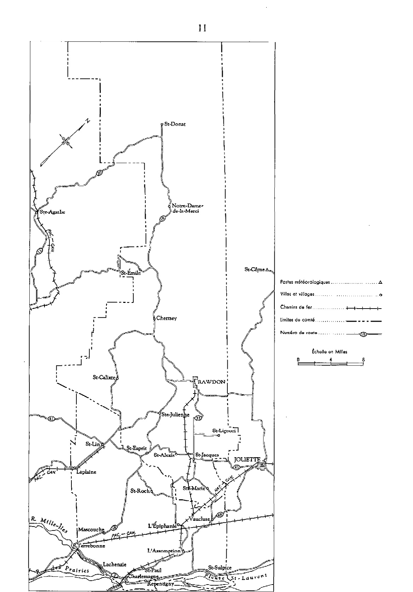
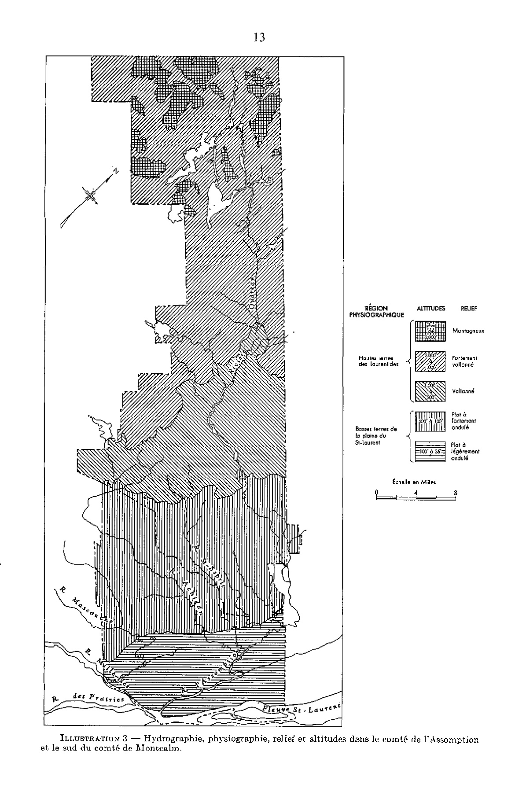
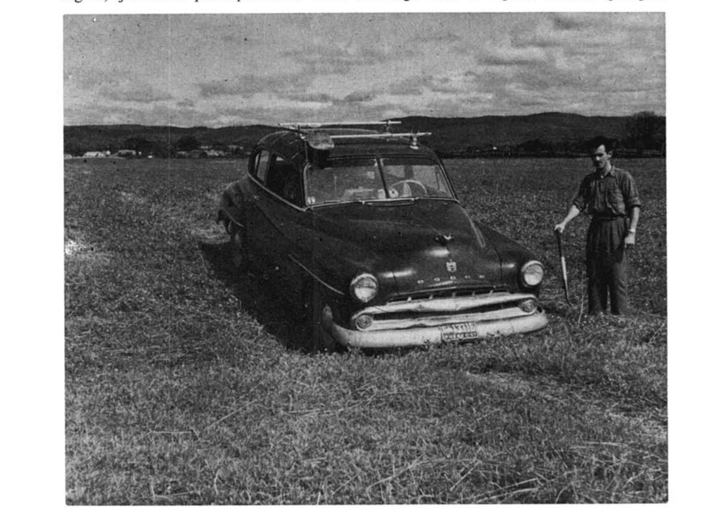
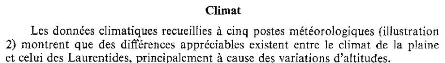
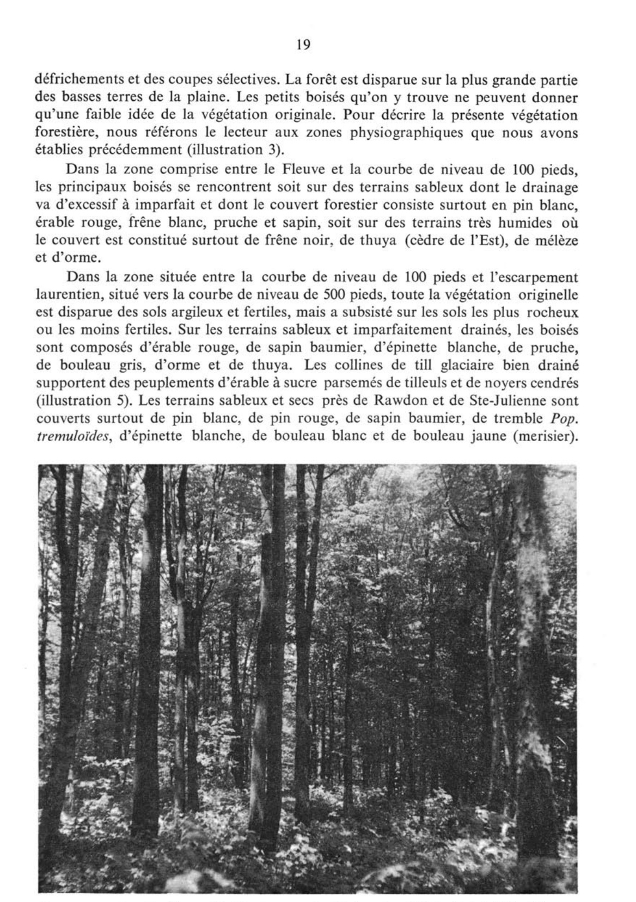
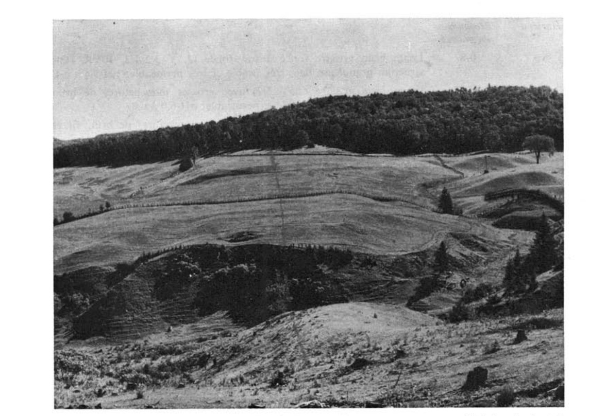
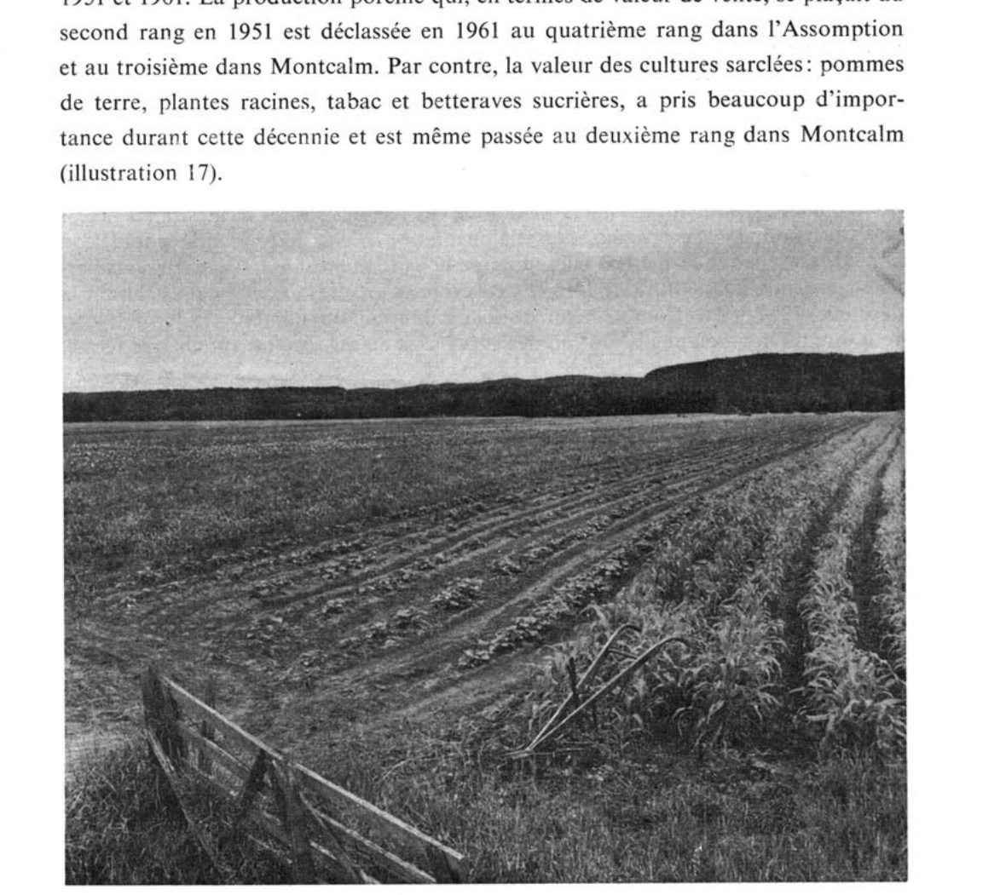
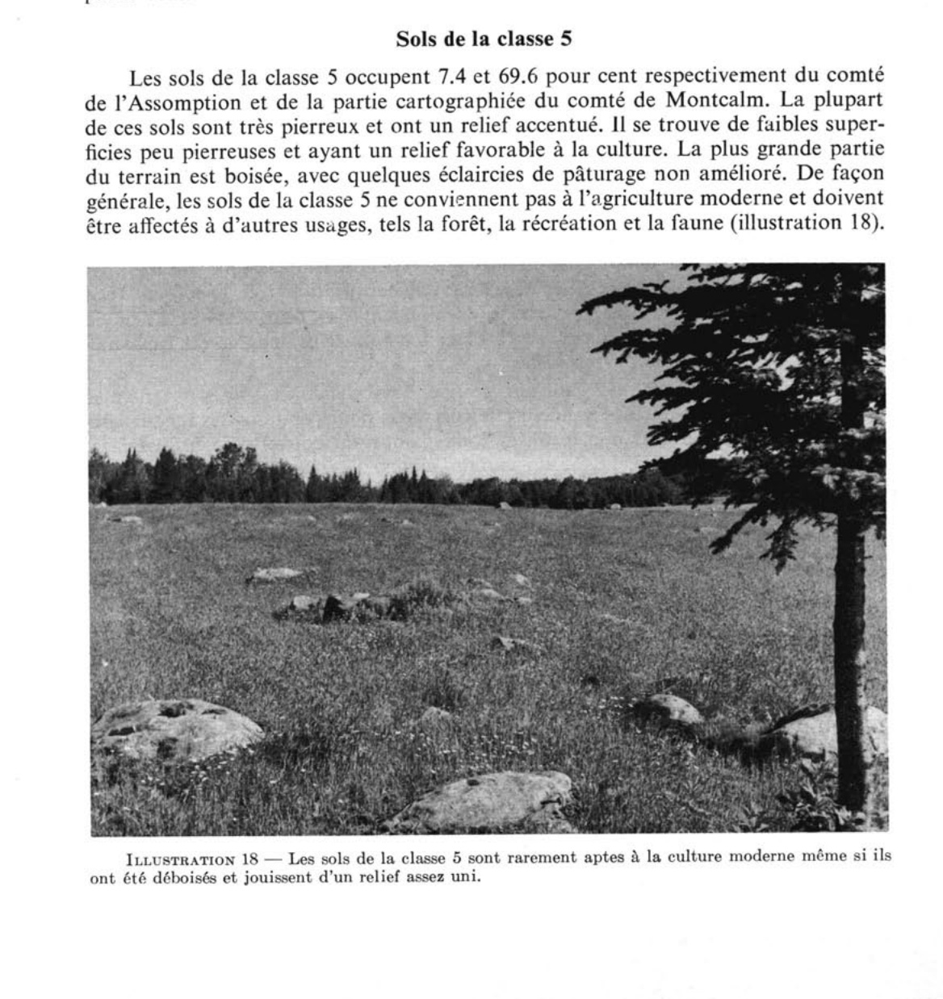

Étude pédologique des comtés de l'Assomption et de Montcalm
Agriculture et Agroalimentaire Canada (SISCan) — Transcription numérique haute fidélité
Table des matières (51 séries de sols répertoriées)
ÉTUDE PÉDOLOGIQUE
des comtés de
L'ASSOMPTION ET DE MONTCALM
(Québec)
Paul G. Lajoie
Ministère de l'Agriculture du Canada
Direction de la recherche, Ministère de l'Agriculture du Canada
Ministère de l'Agriculture et de la Colonisation de Québec
Collège Macdonald, Université McGill
1965
ÉTUDE PÉDOLOGIQUE
des comtés de
L'ASSOMPTION ET DE MONTCALM
(Québec)
Paul G. Lajoie
Ministère de l'Agriculture du Canada
Direction de la recherche, Ministère de l'Agriculture du Canada
Ministère de l'Agriculture et de la Colonisation de Québec
Collège Macdonald, Université McGill
AVANT-PROPOS
La classification et la cartographie des sols des comtés de l'Assomption et de Montcalm ont été financées et réalisées par le ministère de l'Agriculture du Canada. Les travaux de recherche ont été dirigés de notre bureau-laboratoire situé au collège Macdonald. L'auteur a été assisté sur le terrain, tour à tour, par Messieurs G. Millette, R. W. Evans et R. Marcoux. La Section de la cartographie de l'Institut des Sols, au Ministère de l'Agriculture du Canada s'est chargée de préparer la carte pour la publication. De précieuses suggestions ont été fournies par M. J. H. Day de l'Institut des Sols à Ottawa.
Nous tenons à remercier particulièrement Monsieur P. C. Stobbe, directeur de l'Institut des Sols au ministère de l'Agriculture du Canada, pour les conseils judicieux qu'il nous a prodigués sur les divers aspects de cette étude pédologique.
UTILISATION DES SOLS.............................................................................. 82
CLASSEMENT DES SOLS SELON LEURS APTITUDES ET LEURS PROBLÈMES DE GESTION.............................................................................. 85
Sols de la Classe 1............................................................................... 85
Sols de la Classe 2............................................................................... 88
Sols de la Classe 3............................................................................... 89
Sols de la Classe 4............................................................................... 89
Sols de la Classe 5............................................................................... 90
7. — Classification des sols................................................................. 27
8. — Nombre de fermes, superficie et utilisation de la terre agricole............................ 82
9. — Valeur des principaux produits agricoles vendus............................................. 84
10. — Principales grandes cultures et cultures de légumes.......................................... 84
11. — Classement des sols pour les grandes cultures et les récoltes maraîchères....................... 86
12. — Superficies des sols et des divers terrains............................................... 91
ILLUSTRATIONS
1. — Carte index de la région cartographiée.................................................... 9
2. — Réseau routier, localités et postes météorologiques.......................................... 11
3. — Hydrographie, physiographie, relief et altitudes........................................... 13
4. — Drainage de surface sur terrains plats.................................................. 14
5. — Végétation naturelle sur un till de la plaine............................................... 19
6. — Matériau originel du sol Guindon......................................................... 23
7. — Le sol Ste-Agathe, un podzol orthique.................................................... 30
8. — Relief des sols St-Bernard, Belle-Rivière, Ste-Rosalie et Dalhousie........................... 34
9. — Matériaux fluvio-glaciaires du sol St-Faustin.............................................. 38
10. — Sols plats de la série Ste-Rosalie...................................................... 46
11. — Récolte de carottes sur sol Aston....................................................... 58
12. — Coupe du sol Achigan.................................................................. 64
13. — Coupe du sol Chicot................................................................... 67
14. — Sols Brébeuf et autres dans une étroite vallée............................................ 70
15. — Relief des sols St-Bernard, Chicot, Châteauguay, St-Laurent et Baudette...................... 76
16. — Relief et profil du sol Charlemagne..................................................... 79
17. — Cultures sarclées et maraîchères......................................................... 83
18. — Sol de la classe 5..................................................................... 90
19. — Pourcentage d'argile, limon et sable dans les diverses classes texturales...................... 96
INTRODUCTION
Ce rapport est un inventaire des ressources du sol dans le comté de l'Assomption et la partie méridionale du comté de Montcalm. On y trouve une description générale des étendues cartographiées, du relief, du drainage, du climat, de la végétation naturelle et des divers dépôts géologiques. Les divers grands groupes de sols de la région sont décrits très brièvement avant d'aborder la partie la plus importante du rapport où chaque sol est étudié tant au point de vue de sa nature que de ses possibilités agricoles. La dernière partie de cette étude est consacrée à l'utilisation et au classement des sols d'après leur adaptabilité, leur fertilité naturelle et leurs besoins particuliers.
La distribution des divers sols est indiquée sur une carte à l'échelle d'un pouce au mille, dans la partie agricole, et d'un demi-pouce au mille, dans la partie montagneuse. Cette carte montre les villes, les villages, les routes, les réseaux ferroviaires, les lacs, les rivières, les maisons de fermes, et permet de situer rapidement n'importe quelle exploitation agricole. À l'aide de symboles et de couleurs expliquées dans la légende, la carte indique les divers types de sols ainsi que leur relief et la proportion relative de pierres qu'on y trouve.
DESCRIPTION GÉNÉRALE DE LA RÉGION
Situation et superficie
L'étendue à l'étude comprend tout le comté de l'Assomption et la partie du comté de Montcalm sise au sud-est du Parc du Mont-Tremblant (illustration 1). Cette étendue se situe entre les latitudes nord 45°42' et 46°27', et entre les longitudes ouest 73°18' et 74°25'. La frontière entre les deux comtés contigus se trouve approximativement à la latitude nord 45°53'. Le comté de l'Assomption occupe la
partie la plus méridionale, immédiatement au nord des îles de Jésus et de Montréal, sur la rive gauche du fleuve Saint-Laurent.
Depuis le Fleuve, la région étudiée s'étend vers le nord-ouest sur une longueur de 60 milles et une largeur moyenne de 16 milles entre le comté de Terrebonne, au sud-ouest, et les comtés de Berthier et de Joliette, au nord-est.
Le comté de l'Assomption couvre une superficie de 198,306 acres et la partie étudiée du comté de Montcalm comprend 555,776 acres.
Population
La population du comté de l'Assomption s'accroît rapidement et est passée de 23,205 habitants en 1951 à 39,440 en 1961. Pendant ce temps, le comté de Montcalm avait un taux de croissance moins élevé et est passé de 17,520 à 18,094 habitants. Cette différence des taux de croissance des deux comtés s'explique par une urbanisation intensive dans la partie sud du comté de l'Assomption.
En 1961, la population urbaine du comté de l'Assomption était de 25,161 habitants et la population rurale de 14,279 dont 5,730 de population agricole. Pour la même année, les populations du comté de Montcalm étaient, dans le même ordre, de 5,840, 12,926 et 5,405.
Marchés et communications
La région à l'étude est favorisée par la proximité du marché de la Métropole et de ses banlieues. Le comté de l'Assomption et la partie agricole du comté de Montcalm sont situés dans un rayon de 30 milles de la Métropole. Plusieurs centres urbains des environs viennent s'ajouter au marché du grand Montréal. Les plus importants de ces centres sont St-Jérôme (24,546)1, Joliette (18,088), Repentigny (9,139), Terrebonne (6,207) et l'Assomption (4,448).
Les montagnes et les nombreux lacs du nord de la région cartographiée sont des endroits recherchés par les citadins, surtout au cours de la saison estivale. Cette importante migration de la population affecte la distribution de certains produits agricoles, particulièrement des œufs et des produits laitiers.
Les deux comtés à l'étude sont reliés directement à la Métropole par des voies ferrées et des routes nombreuses (illustration 2). Les principales voies ferrées sont celles du tronçon Montréal-Québec du Pacifique-Canadien et du tronçon Montréal-Lac-St-Jean-Abitibi du National-Canadien. Ces deux voies principales ont des embranchements desservant St-Lin et Rawdon. Toutefois, la partie septentrionale et montagneuse n'est pas desservie par le rail.
La région à l'étude étant sise à la sortie nord-est de la Métropole doit livrer passage aux innombrables véhicules rayonnant vers toute la rive nord du Fleuve, en plus de ceux qui circulent sur son territoire. Il est inévitable qu'on y voie bientôt la construction d'une importante artère destinée à y accélérer la circulation routière. Les principales routes de la région portent les numéros 18, 2 et 48. La première, la plus longue, passe par le pont de Terrebonne et traverse toute la région à l'étude pour atteindre le centre le plus septentrional: St-Donat. Issues toutes deux du pont Charlemagne, les routes 2 et 48 bifurquent l'une vers Québec et l'autre vers l'Assomption et Joliette. Une autre route importante passe par le pont David et le comté de Terrebonne pour relier la partie ouest de la région avec la Métropole et desservir les centres de Laplaine, St-Lin et St-Calixte.
1 Population au recensement de 1961.

ILLUSTRATION 2 — Principales routes, chemins de fer, villes, villages et postes météorologiques de la région étudiée.
FACTEURS DE FORMATION DU SOL
Les facteurs qui ont influencé la formation du sol sont le climat, le milieu biologique (biogocénose), le relief, le drainage et les matériaux originels.
L'influence du climat s'accroît avec la température et l'humidité. Les conditions climatiques déterminent les divers types génétiques d'une région donnée. Ces types seront étudiés lorsque nous traiterons de la classification et des grands groupes de sols.
Les composants de la biocénose sont la végétation, la microfaune et la microflore du sol. La végétation, elle-même dépendante du climat, a une influence directe sur le sol et plus particulièrement sur la nature et la distribution de l'humus.
Le relief du terrain est directement responsable du ruissellement ou de l'accumulation des eaux à la surface du sol. Lorsqu'il est accentué, le relief influe considérablement sur le degré d'insolation et d'évaporation, selon l'exposition des pentes au soleil et aux vents.
Le drainage, c'est-à-dire la rapidité avec laquelle l'excès d'eau se retire naturellement du sol est en grande partie fonction de la porosité des matériaux et de la hauteur de la nappe phréatique. Parce qu'il règle les phénomènes d'aération, d'oxydation et de réduction, le drainage exerce une influence marquée sur le sol, au point qu'on peut associer certaines caractéristiques du sol avec un type défini de drainage naturel.
Les matériaux originels sont, dans les deux comtés à l'étude, les dépôts géologiques meubles d'origine et de nature variés. Ces matériaux ayant des propriétés physiques et chimiques diverses, ont réagi de multiples façons aux agents formateurs du sol.
Une étude de chacun des agents formateurs du sol nous permettra d'expliquer les variations observées dans les divers sols et suggérera les conditions générales devant présider à leur utilisation et à leur gestion.
Relief
Le territoire étudié se partage entre deux régions physiographiques : les hautes terres des Laurentides et les basses terres de la plaine du St-Laurent. Ces deux régions sont séparées par un escarpement bien défini, s'allongeant du sud-ouest au nord-est en passant par Ste-Julienne et Rawdon. Le haut de cet escarpement correspond approximativement au contour d'élévation de 500 pieds apparaissant sur l'illustration 3.
La plaine du St-Laurent peut elle-même être séparée en deux parties par la pente abrupte qui marque l'ancienne berge du Fleuve et qui suit de façon assez exacte le contour d'élévation de 100 pieds (illustration 3). Au-dessus de cette ancienne berge, soit entre les élévations de 100 et de 500 pieds, la plaine est découpée de nombreux ravins et marquée de plusieurs basses collines. Dans la partie basse, entre les niveaux de 25 à 100 pieds d'élévation, le terrain est surtout plat avec quelques faibles ondulions et de légères dépressions.
La région des hautes terres des Laurentides est formée d'une série de monts dont l'élévation moyenne est de 750 pieds dans la partie sud et de 1,500 pieds dans la partie nord. Cette partie septentrionale comprend également plusieurs sommets dépassant 2,000 pieds d'altitude, dont le plus haut, la montagne Noire, s'élève à 2,900 pieds.
Il n'y a aucune vallée importante dans cette partie des Laurentides. Le principal cours d'eau, la rivière Ouareau coule à travers un étroit passage entre les monts. Les seuls terrains plats ou ondulés se limitent à d'étroites bandes de dépôts graveleux ou organiques.

ILLUSTRATION 3 — Hydrographie, physiographie, relief et altitudes dans le comté de l'Assomption et le sud du comté de Montcalm.
Hydrographie et drainage
Toutes les eaux des hautes terres se déchargent par la rivière Ouareau qui prend sa source dans les lacs Archambault et Ouareau. Ce cours d'eau dévale à travers le comté de Montcalm vers le sud-est et draine en cours de route un réseau complexe de lacs et de ruisseaux. Quatre chutes importantes près de Rawdon marquent le passage de ce cours d'eau des hautes terres à la plaine. L'énergie d'une de ces chutes est utilisée pour la production d'électricité, tandis que la chute Darwin coule encore dans toute sa sauvage grandeur.
Le long des basses terres, la rivière Ouareau s'écoule à un rythme assez régulier et uniforme avant de se déverser dans la rivière l'Assomption à la limite des comtés de l'Assomption et de Joliette. De ce point, la rivière l'Assomption coule vers le sud à travers le comté du même nom, reçoit les rivières St-Esprit et Achigan, venant du côté ouest et se jette dans le Fleuve, près de l'embouchure de la rivière des Mille-Îles (illustration 3). Six milles en amont de ce dernier point, se déverse la rivière Mascouche qui draine le sud-ouest du comté de l'Assomption.
Drainage des sols
Le drainage naturel des sols varie considérablement selon le relief du terrain et la porosité des matériaux. Les hautes terres des Laurentides, dont le relief est surtout vallonneux à montagneux et dont les matériaux sont poreux et de texture légère, jouissent principalement d'un drainage bon à rapide. Seules quelques

ILLUSTRATION 4 — Sur les terrains plats le drainage est effectué par des fossés profonds et évasés permettant la circulation de l'outillage de ferme.
dépressions souffrent d'un drainage stagnant qui a occasionné l'accumulation de dépôts tourbeux.
Le drainage naturel des sols de la plaine est généralement imparfait ou mauvais à cause de la prédominance de matériaux de texture fine et peu poreux. Certains matériaux sableux et poreux souffrent également de lenteur de drainage parce qu'ils reposent, à faible profondeur, sur un substrat plat et imperméable formé par l'argile.
À cause de la lenteur du ruissellement dans la plaine en général, et plus particulièrement dans la partie basse, on a dû y creuser de nombreuses décharges pour permettre un écoulement plus rapide des eaux de surplus (illustration 4).
Climat
Les données climatiques recueillies à cinq postes météorologiques (illustration 2) montrent que des différences appréciables existent entre le climat de la plaine et celui des Laurentides, principalement à cause des variations d'altitudes.
Températures
Selon les données météorologiques du tableau 1, la température annuelle moyenne varie de 41°F. dans la partie méridionale à 38°F. dans la partie septentrionale. À travers tout le territoire, les températures moyennes du mois de mai s'échelonnent entre 54°F. et 50°F., celles du mois de juillet, entre 69°F. et 64°F., et celles du mois d'octobre entre 46°F. et 43°F. (tableau 1).

TABLEAU 1. — Températures moyennes en degrés Farenheit aux postes météorologiques de la région à l'étude 1
Mois
L'Assomption
Joliette
St-Lin
Ste-Agathe
Novembre
33.1
31.5
31.7
29.0
Décembre
16.2
15.6
15.3
14.4
Janvier
11.3
10.3
9.5
9.4
Février
11.6
10.5
9.8
10.5
Mars
24.2
24.1
23.0
21.9
Avril
40.3
38.9
39.1
35.2
Moyenne (du 1er novembre au 30 avril)
22.8
21.0
21.4
20.1
Mai
54.1
54.0
53.3
50.7
Juin
63.8
64.4
63.1
59.4
Juillet
68.6
69.1
68.1
64.4
Août
66.4
66.5
65.2
62.3
Septembre
58.0
57.5
55.8
54.1
Octobre
46.5
45.2
45.2
43.1
Moyenne (du 1er mai au 31 octobre)
59.6
59.5
58.5
55.6
Moyenne annuelle
41.2
40.6
39.9
38.2
1 Données du Monthly Records of Meteorological Observations, 1954, Department of Transport, Toronto.
Les plus grands écarts entre la température de l'air et celle du sol se produisent évidemment en hiver alors que sous une couverture de neige, le sol peut se maintenir près du point de congélation malgré des froids très intenses. Au cours de la saison chaude, les sols absorbent plus ou moins et retiennent également de façon variable l'énergie calorifique. C'est ainsi que les sols cultivés et bien drainés peuvent atteindre une température moyenne plus élevée que la température moyenne atmosphérique
comme le démontrent les données obtenues à la Ferme expérimentale de l'Assomption et rapportées au tableau 2.
TABLEAU 2. — Température du sol en degrés Farenheit à la Ferme expérimentale de l'Assomption 1
Profondeur
Mai
Juin
Juillet
Août
Septembre
Octobre 2
Moyenne du 1er mai au 31 octobre
4 pouces......
56
67
71
69
61
50
62
8 pouces......
54
64
69
68
61
50
61
24 pouces......
49
59
64
65
61
53
59
1 Moyenne de 16 années. 2 Moyenne de 6 années.
Les températures moyennes obtenues à 4 et à 8 pouces de profondeur dans un sol argileux, à la Ferme expérimentale de l'Assomption, ont été de 62.3°F. et de 61.1°F. respectivement, pour la période allant du 1er mai au 31 octobre1. La température atmosphérique moyenne pour cette même période n'est que de 59.6°F. Par ailleurs, les températures moyennes du même sol à 24 pouces de profondeur ont été légèrement inférieures à la température atmosphérique moyenne durant la période estivale.
Périodes sans gel
La plus forte activité du sol comme celle des plantes qui y croissent correspond à la période sans gel de la saison de végétation. On peut noter au tableau 3, des différences assez considérables dans la durée de cette période d'un point à l'autre du territoire à l'étude.
TABLEAU 3. — Période sans gel, dates des derniers gels du printemps et des premiers gels d'automne à certains postes météorologiques de la région à l'étude 1
Poste
Joliette
l'Assomption
St-Lin
Ste-Agathe
Années d'observations....................
35
21
36
28
Période sans gel à 32°F.
Durée maximale (jours)...................
Durée moyenne (jours)...................
Durée minimale (jours)...................
168 128 98
165 128 106
167 125 75
154 122 81
Dernier gel printanier à 32°F.
Date la plus hâtive......................
Date moyenne (probabilité de 50 pour cent)......................
Probabilité de 90 pour cent que le
dernier gel se produira avant ou à
la date du.........................
Date la plus tardive.....................
14 avril 10 mai 21 mai 24 mai
17 avril 17 mai 1er juin 2 3 juin
14 avril 18 mai 6 juin 14 juin
21 avril 22 mai
30 juin
Premier gel d'automne à 32°F.
Date la plus hâtive......................
Probabilité de 90 pour cent que le
premier gel se produira après ou
à la date du.......................
Date moyenne (probabilité de
50 pour cent)......................
Date la plus tardive.....................
1er août 14 sept. 25 sept. 18 octobre
6 sept. 10 sept. 2 22 sept. 30 octobre
26 juillet 7 sept. 20 sept. 9 octobre
4 sept.
21 sept. 9 octobre
1 Climatic Summaries, Vol. III, Frost Data, Department of Transport, 1956. 2 Tables de probabilité de gelée, Vol. XIX, No 4, — C. E. Ouellet — Agriculture — 1962.
1 Sol de la série St-Laurent à la Ferme expérimentale de l'Assomption. Surface du sol en gazon, maintenu à l'état rasé.
La durée moyenne des périodes sans gel de 32°F. varie entre 138 et 122 jours. Dans les basses terres, le danger de gel à 32°F. est pratiquement disparu après la dernière semaine de mai ou la première semaine de juin, puisqu'il n'y a que 10 pour cent de possibilité qu'il y gèle après ces dates. De même, dans 90 pour cent des cas, les premiers gels d'automne ne se produisent dans la plaine qu'après la deuxième semaine de septembre.
Selon des observations faites à la Ferme expérimentale de l'Assomption, le 2 novembre est la date moyenne de gel du sol.
Précipitations
Les précipitations annuelles moyennes, mesurées aux différents postes météorologiques de la région à l'étude, sont indiquées au tableau 4. Elles varient entre 33.7 et 42.2 pouces.
TABLEAU 4. — Précipitation en pouces à certains postes météorologiques de la région étudiée 1
Postes
L'Assomption
Joliette
St-Lin
St-Côme
Ste-Agathe
Altitude en pieds
69
192
210
1,000
1,200
Nombre d'années de relevés
31
46
44
10
33
Novembre
3.17
2.87
2.83
2.79
4.41
Décembre
3.12
2.45
2.56
3.33
3.77
Janvier
3.05
2.50
2.71
3.08
3.52
Février
2.57
2.07
2.17
2.98
2.97
Mars
2.76
2.18
2.36
2.31
3.14
Avril
2.96
2.57
2.59
2.07
3.12
Total du 1er novembre au 30 avril
17.63
14.64
15.22
16.56
20.93
Mai
3.01
2.78
2.81
2.92
3.11
Juin
3.50
3.24
3.40
3.97
3.74
Juillet
3.58
3.45
3.39
3.46
4.06
Août
3.44
3.08
3.19
3.48
3.57
Septembre
3.61
3.54
3.36
3.96
3.82
Octobre
2.94
2.96
2.90
3.01
3.01
Total du 1er mai au 31 octobre
20.08
19.05
19.05
20.80
21.31
Total annuel
37.71
33.69
34.27
37.36
42.24
1 Bulletins météorologiques, 1961, Ministère de l'Industrie et du Commerce, Québec.
Au cours de la période allant de novembre à avril, la plus grande partie de la précipitation tombe sous forme de neige. À l'Assomption, la précipitation moyenne de neige a été de 83 pouces mais a varié entre 31 et 118 pouces (tableau 5). Durant les mois de décembre, janvier, février et mars, la partie sud de la région est normalement couverte de neige. Par comparaison, la partie septentrionale demeure couverte de neige durant une période plus longue, surtout sur les montagnes les plus élevées, aux endroits couverts de conifères et sur les pentes exposées au nord.
TABLEAU 5. — Précipitations moyennes, maximales et minimales en pouces de pluie et de neige, à l'Assomption 1
Moyenne
Maximum
Minimum
Neige
83.3
118.4 (1944)
31.5 (1953)
Pluie
29.3
41.0 (1945)
21.1 (1955)
Précipitation totale
37.3
48.9 (1945)
26.4 (1931)
1 Moyenne de 27 années compilée à la Ferme expérimentale, l'Assomption.
Évaporation
Des mesures de l'évaporation prises à l'Assomption (tableau 6) indiquent que de mai à octobre inclusivement, l'évaporation moyenne de l'eau est de 20.6 pouces, soit une quantité légèrement supérieure à la moyenne de la précipitation totale (19.9 pouces) pour la même période. Au cours de cette période de trois mois, l'évaporation mensuelle maximale a été de 6 pouces (août '49) et l'évaporation minimale de 2.8 pouces (juillet '54). De semblables données ne sont pas disponibles pour la partie septentrionale mais il est logique de penser que l'évaporation y est beaucoup moins rapide que dans la partie sud.
TABLEAU 6. — Évaporation mesurée en pouces d'eau à la Ferme expérimentale de l'Assomption
Année
Mai
Juin
Juillet
Août
Septembre
Octobre
Total
1953
3.06
4.89
4.40
3.71
2.52
1.56
20.14
1954
2.74
3.11
2.79
3.84
2.09
1.33
15.90
1955
3.45
4.21
5.58
4.51
2.38
1.75
21.88
1956
3.18
3.88
4.05
3.67
1.75
1.50
18.03
Moyenne de 12 ans
3.29
4.20
4.63
4.04
2.88
1.54 1
20.58
Minimum durant 12 ans
1.78
3.11
2.79
2.92
1.75
1.33
15.90
Maximum durant 12 ans
4.15
5.56
5.58
5.99
5.01
1.79
22.10
1 Moyenne de 6 ans.
Même si on ne peut évaluer complètement l'effet des diverses différences climatiques, il semble qu'elles soient responsables des variations observées dans le degré de podsolisation entre les sols de la section du nord et celle du sud.
Milieu biologique
Les composants du milieu biologique sont la végétation et la biogéocénose, c'est-à-dire la microfaune et la microflore du sol. À l'action de ces facteurs s'ajoute celle de l'homme qui modifie de façon drastique l'évolution des processus pédologiques par le défrichement, la culture, le drainage, l'irrigation, le chaulage et la fertilisation.
Tout en reconnaissant l'importance primordiale de tous les composants de la biosphère, nous ne traiterons ici que de la végétation. Le rôle spécifique des diverses microflores nous est trop peu connu pour pouvoir en traiter. Il en est de même de la microfaune, sauf que nous sommes à même de constater que diverses espèces de vers de terre sont introduites à plusieurs endroits où elles n'existaient pas auparavant, et que leur action se fait sentir surtout sur la minéralisation de l'humus et sur le mélange des couches superficielles du sol. L'influence de l'homme qui s'est faite sentir surtout par la culture, sera notée dans les descriptions individuelles des sols.
Végétation
La région à l'étude était originellement toute couverte de forêt. Les hautes terres des Laurentides sont encore presqu'entièrement boisées et les espèces qui y croissent sont vraisemblablement les mêmes qu'à l'origine quoique distribuées dans une proportion peut-être un peu différente à cause des feux de forêts, des
défrichements et des coupes sélectives. La forêt est disparue sur la plus grande partie des basses terres de la plaine. Les petits boisés qu'on y trouve ne peuvent donner qu'une faible idée de la végétation originale. Pour décrire la présente végétation forestière, nous référons le lecteur aux zones physiographiques que nous avons établies précédemment (illustration 3).
Dans la zone comprise entre le Fleuve et la courbe de niveau de 100 pieds, les principaux boisés se rencontrent soit sur des terrains sableux dont le drainage va d'excessif à imparfait et dont le couvert forestier consiste surtout en pin blanc, érable rouge, frêne blanc, pruche et sapin, soit sur des terrains très humides où le couvert est constitué surtout de frêne noir, de thuya (cèdre de l'Est), de mélèze et d'orme.
Dans la zone située entre la courbe de niveau de 100 pieds et l'escarpement laurentien, situé vers la courbe de niveau de 500 pieds, toute la végétation originelle est disparue des sols argileux et fertiles, mais a subsisté sur les sols les plus rocheux ou les moins fertiles. Sur les terrains sableux et imparfaitement drainés, les boisés sont composés d'érable rouge, de sapin baumier, d'épinette blanche, de pruche, de bouleau gris, d'orme et de thuya. Les collines de till glaciaire bien drainé supportent des peuplements d'érable à sucre parsemés de tilleuls et de noyers cendrés (illustration 5). Les terrains sableux et secs près de Rawdon et de Ste-Julienne sont couverts surtout de pin blanc, de pin rouge, de sapin baumier, de tremble Pop. tremuloïdes, d'épinette blanche, de bouleau blanc et de bouleau jaune (merisier).

ILLUSTRATION 5 — Peuplement d'érables à sucre et de tilleuls sur les tills bien drainés de la plaine.
La partie méridionale des hautes terres, soit la zone comprise approximativement entre les courbes de niveau de 500 et 1000 pieds, est boisée surtout d'érable à sucre, de chêne rouge, d'érable rouge, de bouleau blanc, de hêtre et de tremble. À cette végétation se mêlent, dans les dépressions ou sur certaines pentes à exposition nordique, quelques conifères comme le sapin, l'épinette et le thuya.
La partie septentrionale des hautes terres est couverte surtout d'arbres à feuilles caduques mais les conifères y sont beaucoup plus nombreux que dans la partie méridionale. Les principales essences de cette zone sont l'érable à sucre, le hêtre, le bouleau jaune, le tremble, le bouleau blanc, l'érable rouge, le sapin baumier et l'épinette blanche. Les conifères dominent surtout sur les terrains sableux ou graveleux des étroites vallées ou sur les terrains humides des bas de pentes ou des depressions. Les quelques sites très humides sont couverts d'épinette, de mélèze et de thuya. La régénération arbustive spontanée que l'on note sur la plupart des fermes abandonnées consiste surtout en conifères.
Matériaux originels
Les matériaux originels sont les matériaux non-consolidés à partir desquels se forment les sols et qui proviennent soit directement de la décomposition du roc (roche mère) sur place, soit de particules meubles transportées de diverses façons. Les matériaux transportés sont les seuls que l'on trouve dans la région à l'étude, mais parmi eux il en est dont la nature dépend directement du roc sous-jacent ou immédiatement environnant, comme c'est le cas pour les tills glaciaires qui, en général, paraissent n'avoir subi qu'un faible entraînement de leur lieu d'origine. Par ailleurs, la nature des matériaux originels n'est que peu ou pas du tout influencée par le roc sous-jacent dans le cas de dépôts marins profonds ou d'autres matériaux transportés sur de grandes distances. Les assises géologiques ont donc une influence variable mais parfois déterminante sur les matériaux originels et il importe d'en connaître la nature et la distribution.
Assises géologiques
Les terres basses de la plaine reposent toutes sur des assises sédimentaires de la période paléozoïque, formant des bandes plus ou moins larges et orientées parallèlement au Fleuve. Du sud au nord, ces formations sont successivement: les schistes argileux et les dolomies de Lorraine et de Richmond, les calcaires impurs et les schistes argileux de Collingwood et d'Utica, les calcaires de Black River et de Trenton, les calcaires de Chazy, les dolomies de Beekmantown et enfin les grès de Potsdam. Cette dernière assise forme une bande très étroite s'adossant à l'escarpement qui marque son contact, du côté nord, avec les formations précambriennes.
Les roches précambriennes sont presqu'exclusivement d'origine ignée, parfois métamorphisées, et comprennent surtout des granite-gneiss et de l'anorthosite. Elles forment la base de toutes les hautes terres des Laurentides.
Dépôts superficiels
Selon leur origine, les divers dépôts meubles de la région à l'étude peuvent être partagés en sept groupes principaux: les tills, les dépôts fluvio-glaciaires, les dépôts éoliens, les sédiments marins, les alluvions, les dépôts de glaces flottantes et les dépôts organiques. À cause de l'importance de la nature des matériaux originels sur la formation du sol ou même de son utilisation, il convient de décrire les caractéristiques individuelles de chacun de ces dépôts superficiels.
Tills glaciaires
— Les tills sont les plus anciens dépôts de surface. Ils ont été laissés par le glacier continental de la période pléistocène et reposent directement sur le roc. (S'il existe dans la région des dépôts meubles antérieurs au pléistocène ils n'ont pas été reconnus jusqu'à maintenant.)
On trouve dans la région à l'étude différentes sortes de tills tout comme on y trouve une variété de formations géologiques. Les tills les plus répandus sont ceux qui couvrent presque toute la région des hautes terres et sont dérivés de gneiss, de granite, de quartzite et d'anorthosite. Ils sont de deux variétés principales: l'un très dense, de couleur grisâtre et dont les fragments grossiers aux angles semi-arrondis ont l'aspect de matériaux fraîchement broyés, l'autre de nature poreuse et contenant beaucoup de fragments angulaires dont la surface est de coloration jaunâtre et paraît avoir subi une certaine oxydation. L'interprétation que nous pouvons donner de ces différences est que le premier till est celui d'une moraine de fond tandis que le second proviendrait d'une moraine d'ablation.
Le till dense est le plus répandu sur les hautes terres et forme le matériau originel des sols Ste-Agathe, Gatineau et Lakefield. Les sols St-Colomban sont issus du till le plus poreux qui se rencontre surtout dans la partie sud des hautes terres.
Dans les basses terres, on a trouvé quatre types de tills. Premièrement, les sols Perrot se sont formés sur le till dérivé de l'étroite bande de grès Potsdam qui se trouve immédiatement au pied de l'escarpement. Un peu plus au sud, les matériaux de grès mélangés à des matériaux dolomitiques constituent une deuxième sorte de till de réaction presque neutre dont sont issus les sols Belle Rivière. Un troisième, le till dolomitique, issu des formations du Beekmantown, a une distribution assez importante aux environs de St-Jacques et de St-Alexis et a servi de matériau originel aux sols St-Bernard et Matilda. Finalement, un till d'une très forte teneur en chaux, issu de calcaires de Trenton et de Black River se rencontre surtout aux environs de St-Roch et forme le matériau originel des sols Dorval et Terrebonne.
Dépôts fluvio-glaciaires
— Les dépôts fluvio-glaciaires ont été laissés par les cours d'eau émergeant des glaciers. Ils consistent en matériaux grossiers: sable, gravier et cailloux arrondis, issus des diverses roches précambriennes. Les dépôts graveleux se rencontrent presqu'exclusivement au fond des vallées des Laurentides et forment les matériaux originels des sols Mont-Rolland, St-Gabriel et St-Faustin. Les matériaux de ce dernier sol sont particulièrement mal assortis, grossiers, même pierreux et se présentent souvent sous forme de kame. Les matériaux des deux autres sols ne sont jamais pierreux et présentent une surface unie, tout comme les dépôts de sable grossier qui leur sont associés et sur lesquels se sont formés les sols Morin et Peningue.
Les dépôts fluvio-glaciaires des terres basses ont été presque partout recouverts d'épais sédiments marins. Le long de la rivière Ouareau, on les trouve cependant représentés par des dépôts sableux au sud de Rawdon et par un esker graveleux au nord-ouest de Les Dalles. Ce dernier dépôt, presqu'entièrement enfoui sous les dépôts argileux, n'occupe qu'une superficie négligeable et est exploité comme gravière.
Dépôts éoliens
— Des dépôts d'origine éolienne ont été superposés aux tills glaciaires en certains endroits des hautes terres, plus particulièrement le long des vallées orientées du nord ou du nord-est au sud ou au sud-ouest. Les vents qui ont transporté ces matériaux venaient des régions nordiques encore couvertes par le glacier continental. Les matériaux paraissent avoir été surtout empruntés aux dépôts sableux du fond des vallées, puis soulevés et transportés sur les collines avoisinantes. L'épaisseur des dépôts éoliens est généralement de 1 à 2½ pieds.
et leur texture varie du loam sableux très fin au loam limoneux. Le sol St-Jovite est le seul issu de tels matériaux.
Sédiments marins — Les sédiments marins se trouvent exclusivement dans les basses terres et la partie contiguë des vallées des Laurentides. Ils ont été déposés dans la mer Champlain, une immense étendue d'eau qui a recouvert les basses régions du St-Laurent après la retraite du glacier continental. Les épais sédiments d'argile marine accumulés dans la vallée du St-Laurent en ont caché toutes les inégalités, ne laissant émerger que quelques collines de till, et lui façonnant cette surface très plane qui la caractérise.
Le principal sol formé sur ces dépôts marins appartient à la série Ste-Rosalie. Les sols Rideau, Laplaine, Dalhousie, St-Laurent et St-Urbain se sont également formés sur des dépôts marins. Le matériau originel du sol St-Urbain est de nature calcaire tandis que tous les autres sont de réaction neutre.
Dépôts alluvionnaires — Les dépôts alluviaux ont été effectués sous diverses conditions par les cours d'eau et comprennent une variété de matériaux. Certains reposent sur le till glaciaire ou sur des matériaux fluvio-glaciaires, d'autres reposent sur les argiles marines ou sur le roc; quelques-uns sont très anciens, d'autres sont récents.
Le genre de substratum et son relief ont une influence déterminante sur les caractéristiques des alluvions. Par exemple, les minces dépôts sableux sur l'argile imperméable et plane sont inévitablement exposés à souffrir de la sursaturation des eaux de drainage, tandis que ces mêmes matériaux peuvent jouir d'un excellent drainage si le substratum est un till de nature poreuse, surtout si ce substratum est en pente. Quant au développement du profil, il est proportionnel à l'âge des matériaux, toutes autres choses étant égales.
Les dépôts alluvionnaires sont de composition très variable et comprennent des graviers, des sables grossiers, moyens, fins et très fins de même que des matériaux loameux, limoneux et argileux. Les dépôts graveleux sur argile, formant le matériau originel du sol Lesage, sont parfois très loameux, ont de 3 à 7 pieds d'épaisseur et sont modérément bien drainés. On trouve ces dépôts à peu près exclusivement le long du lac Pontbriand, qui est une section de la rivière Ouareau retenue par un barrage.
Sur la terrasse inférieure des terres basses se trouvent des dépôts de sable grossier, d'épaisseur variable mais généralement d'environ 5 pieds. Ces sables ont un drainage excessif à bon et forment le matériau originel du sol Mille-Îles.
De grandes étendues de sable moyen, fin et très fin, reposant sur l'argile marine, se rencontrent en divers endroits mais surtout le long des principaux cours d'eau. Au-dessus de l'ancienne berge du Fleuve, ces dépôts forment une bande continue d'environ quatre milles de largeur qui s'allonge en direction nord-est à travers toute la région à l'étude, depuis Terrebonne Height jusqu'à Ste-Marie Salomé. Des matériaux semblables se rencontrent également au sud et à l'ouest de St-Lin (Laurentides), le long des rivières Mascouche et Achigan, de même que près de St-Liguori, le long de la rivière Ouareau. Ces dépôts ont une épaisseur variant entre 1 et 10 pieds, au-dessus de l'argile. Les dépôts de grande épaisseur sont bien drainés et forment les matériaux originels des sols Uplands, Sorel, Ripon et St-Thomas. Les dépôts de moyenne épaisseur, soit de 2½ à 5 pieds, ont un drainage imparfait et on y trouve les sols St-Jude, St-Damase, Joliette et Achigan. Enfin les dépôts très minces sur argile sont généralement mal drainés et ont donné les sols Courval, Vaudreuil et Aston. Un faible pourcentage de ces sables très minces sont bien drainés et ont formé le sol Salomé.
Des dépôts sableux de 1 à 4 pieds d'épaisseur, recouvrent le till calcaire des terres basses et forment le matériau originel des sols St-Benoît et Botreaux. De semblables dépôts de 2 à 6 pieds d'épaisseur se rencontrent aussi dans les Laurentides sur des tills acides et forment le matériau originel du sol Guindon (illustration 6).
Les alluvions loameuses recouvrant l'argile sont moins répandues que les sables. Dans les vallées des Laurentides, ces dépôts loameux forment les matériaux originels des sols Piedmont, Brébeuf et Allumette; dans les terres basses, ils ont donnés les sols Soulanges et Coteau. Une autre alluvion assez semblable, mais reposant sur des graviers ou des sables grossiers et excessivement perméables, constitue le matériau dont s'est formé le sol Coulonge. Enfin, dans les terres basses, des alluvions loameuses de 2 à 4 pieds d'épaisseur et reposant sur du till calcaire ont servi de matériau originel au sol Chicot.
Des alluvions limoneuses reposant sur argile forment les matériaux des sols Pontiac, l'Assomption et Baudette. Par ailleurs, les sols Châteauguay se sont formés à partir de minces dépôts argileux reposant sur des tills calcaires.
Les alluvions récentes bordant les cours d'eau actuellement comprennent une grande variété de matériaux, dont ceux du sol Lachute qui sont loameux à limoneux et ceux du sol Mascouche qui sont argileux.
ILLUSTRATION 6 — Dépôt sableux recouvrant les matériaux morainiques des Laurentides et formant le matériau originel du sol Guindon.
Matériaux de glaces flottantes — Sur la terrasse inférieure, autrefois occupée par les eaux du St-Laurent, on trouve un genre particulier de dépôt qui paraît superposé à l'argile marine et à certains matériaux alluvionnaires surmontant l'argile. Il consiste en un mélange de particules fines et grossières, avec une grande proportion de pierres. Ces matériaux hétérogènes ont l'apparence d'un till glaciaire et se présentent sous forme de petits monticules de 100 à 500 pieds de diamètre, parfois isolés et disséminés au hasard, parfois réunis les uns aux autres et formant une basse colline allongée. L'épaisseur des monticules augmente graduellement depuis les rebords jusqu'au centre. Les dépôts les plus épais dépassent souvent 10 pieds la partie centrale du monticule. Ces dépôts de glaces flottantes sont le matériau originel du sol Charlemagne. Ils sont d'origine variée puisqu'on y trouve des fragments rocheux provenant de diverses formations paléozoïques et même des formations précambriennes.
Dépôts organiques — On trouve de nombreux dépôts organiques sur la terrasse inférieure des terres basses. Des dépôts organiques se rencontrent également au creux de certaines vallées des Laurentides, dans les dépressions de terrain entourant les lacs ou autrefois occupées par des lacs. Certains de ces dépôts se sont formés à partir de mousse de sphaigne; d'autres proviennent de la décomposition de joncs, de laîches et de conifères. Ces derniers types ont atteint un degré de décomposition plus avancée et on les appelle les terres noires. Par ailleurs, les dépôts peu décomposés sont appelés tourbes.
GENÈSE DES SOLS ET CLASSIFICATION
Les matériaux que nous venons d'étudier brièvement ont subi l'action des divers agents de formation du sol que sont le climat, la biogénocénose et le relief pour acquérir divers profils du sol distinctifs. On applique le nom de profil à l'arrangement naturel dans le sol de couches horizontales appelées horizons, possédant des caractéristiques physiques et chimiques qui les distinguent les unes des autres.
Classification en grands groupes et en sous-groupes
Selon l'apparence et la nature de leur profil, les sols peuvent être classés en divers grands groupes qui, dans la région à l'étude, comprennent les podzols, les sols podzoliques brun gris, les sols boisés bruns acides, les sols forestiers bruns, les gleysols humides et les sols régosoliques.
Les podzols
Les podzols de la zône à l'étude se sont formés exclusivement sur des matériaux sableux ou loameux et de réaction acide. Ces sols sont parmi les plus faciles à identifier à cause d'une couche éluviée (Ae), à couleur de cendre, se trouvant immédiatement sous la couche d'humus brut de la surface (L-H). Ces horizons (L-H, Ae), facilement identifiables à l'état naturel, sont ordinairement mélangés dans le sol cultivé avec la portion supérieure de l'horizon d'illuviation (Bf, Bfh) immédiatement sous-jacent, d'un brun rougeâtre plus ou moins foncé, riche en fer et parfois aussi en humus.
Les podzols des deux comtés à l'étude appartiennent à une variété de sous-groupes, soit : les podzols orthiques, bien drainés, comme le sol Uplands, les podzols à gley ayant un drainage imparfait comme le sol Achigan, et les podzols à ortstein, contenant une couche ferrugineuse, cimentée, comme le sol Joliette.
Les horizons supérieurs du podzol sont fortement acides, le sous-sol est également acide mais l'acidité diminue sensiblement dans le matériau originel.
Les sols podzoliques brun gris
Les sols podzoliques brun gris se sont formés sur des matériaux calcaires et de texture loameuse ou fine. Ils ont une surface formée d'un humus bien minéralisé (Ah) de réaction légèrement acide. Le sous-sol comprend une couche éluviée (Ae) de couleur brun grisâtre et légèrement acide. Immédiatement au-dessus du matériau originel de nature calcaire, on trouve une couche brun foncé enrichie de minéraux argileux (Bt) qui proviennent de la zone d'éluviation.
Dans les comtés de l'Assomption et de Montcalm, on ne trouve pas de sols podzoliques brun gris du sous-groupe orthique mais on y rencontre des sols du sous-groupe brunisolique comme c'est le cas du sol Chicot, ou quelques faibles étendues de sol Châteauguay, un podzolique brun gris à gley.
Les sols boisés bruns acides
Les sols boisés bruns acides se sont formés sur des matériaux originels acides ou neutres. Comme les podzols, ces sols ont à la surface un humus brut acide (L-H). (Il y a a exception dans les boisés où les animaux paissent et là où les vers de terre se propagent, car en ces endroits une couche d'humus minéralisée (Ah) est généralement présente.) L'absence de couche éluviale (Ac) et de couche illuviale (Bf, Bfh) définies, distingue les sols boisés bruns acides des podzols. Le sous-sol (Bm) est acide et de couleur brune.
Tous les sols boisés bruns acides de la région à l'étude appartiennent au sous-groupe orthique. De nombreuses séries de sols appartiennent à ce sous-groupe dont les sols Belle-Rivière, Mont-Rolland et Gatineau.
Les sols forestiers bruns
Les sols forestiers bruns se sont formés sur des matériaux calcaires, plus particulièrement dans la région à l'étude, sur des tills de loam ou de loam argileux. Ils n'ont pas d'horizons distincts d'éluviation ni d'illuviation. Leur surface est constituée d'un excellent humus bien minéralisé de réaction presque neutre. Le sous-sol, de couleur brune (Bm), est presqu'entièrement saturé par les éléments calcium ou magnésium et le matériau originel est calcaire.
Dans les comtés de l'Assomption et de Montcalm, on distingue deux sous-groupes : les sols forestiers bruns orthiques, bien drainés, auxquels appartiennent les sols St-Bernard et Dorval et le sous-groupe à gley représenté par le sol Matilda.
Les gleysols humiques
Les gleysols humiques appelés, sur la carte, sols gleysoliques gris foncés, se sont formés sur des matériaux de drainage lent et généralement de fine texture. Ils ont une épaisse surface humique, bien minéralisée (Ah), reposant sur un sous-sol peu différencié du matériau originel, excepté par des marbrures plus ou moins prononcées (Bgj). Le matériau originel est de réaction neutre ou alcaline.
Les gleysols humiques des comtés de l'Assomption et de Montcalm appartiennent surtout au sous-groupe orthique. C'est le cas du sol Ste-Rosalie, le plus important gleysol humique de la région à l'étude. Le sous-groupe régosolique est représenté par le sol Rideau.
Les régosols
Les régosols ont des profils très peu développés, soit à cause du manque d'âge soit pour d'autres raisons. Les sols formés sur des dépôts alluvionnaires récents appartiennent à ce groupe et sont représentés par les sols Lachute et Mascouche.
Sols organiques
En plus des divers groupes de sols mentionnés, on trouve dans la région à l'étude des sols organiques qui sont de deux types: les terres noires bien décomposées, et les tourbes mal décomposées.
Classification en séries et en types
Les grands groupes et les sous-groupes comprennent des sols possédant en commun d'importantes caractéristiques résultant d'un développement génétique semblable. Toutefois, les membres d'un même groupe ou d'un sous-groupe possèdent par ailleurs des caractères particuliers, hérités du matériau originel lui-même et qui les distinguent les uns des autres. Par exemple, un podzol orthique développé sur un till loameux, contenant une grande proportion de gravier et de pierres, est très différent d'un autre podzol orthique formé sur des matériaux alluvionnaires uniformément fins et exempts de pierres et de gravier. Le niveau de classification qui permet de tenir compte à la fois, du développement génétique et des caractères particuliers des différents matériaux, c'est la série. Les sols d'une même série dérivent d'un même genre de matériau originel et ont acquis un profil identique, par suite de leur développement dans des conditions spécifiques de drainage, de relief et de milieu biologique.
C'est la série qui forme l'unité cartographique normalement utilisée dans la présente étude, soit individuellement soit sous forme de complexe avec une ou deux autres séries. À chaque série de sol on donne un nom, d'origine géographique, qui sert à la désigner partout où elle se trouve. Par exemple, Ste-Rosalie, Lachute et Achigan sont des noms de séries. Au nom de série, on adjoint une désignation texturale qui en spécifie le type, par exemple l'argile Ste-Rosalie et le loam argileux Ste-Rosalie. Ces désignations texturales réfèrent à la texture de la surface cultivée du sol et comprennent douze classes: sable, sable loameux, loam sableux, loam, loam limoneux, limon, loam limono-argileux, loam argileux, argile sableuse, argile limoneuse, argile et argile lourde (illustration 19). Si nécessaire, on ajoute à ces dénominations des qualificatifs comme graveleux, caillouteux et pierreux qui décrivent les sols de façon plus complète.
Certaines unités cartographiques comprennent des sols qui n'ont pas été différenciés selon les critères des séries mais auxquelles on a quand même donné un nom comme aux séries. Les noms de Lakefield et de St-Colomban réfèrent à de telles unités auxquelles nous donnons le nom de terrain pour les distinguer des séries.
La clé présentée au tableau 7 résume les données de toute la classification des sols des comtés de l'Assomption et de Montcalm, laquelle est basée sur les matériaux originels, sur le drainage et sur le développement du profil.
Les descriptions qui suivent pour chacune des séries de sol sont présentées selon leur ordre au tableau 7.
Les superficies de chaque sol cartographié apparaissent pour chacun des deux comtés à l'étude au tableau 12 de l'Appendice.
TABLEAU 7. — Classification des sols des comtés de l'Assomption et de Montcalm
Matériau originel
Drainage
Grand groupe 1
Série
Type
Symbole
A. — Tills glaciaires
Till issu de gneiss, de quartzite et d'autres roches précambriennes
bon
3
Gatineau
loam sableux
Gt
Till d'ablation, d'origine précambrienne, avec affleurements rocheux et terrains marécageux
bon
10
Ste-Agathe
loam sableux
Ag
Till d'origine précambrienne, avec affleurements rocheux et terrains marécageux
bon
10
St-Colomban
loam sableux
Cb
Till issu de grès de Potsdam
bon
3
Lakefield
loam sableux
Lk
Till issu de grès de Potsdam
bon
10
Perrot
loam sableux
P
Till issu à la fois de grès et de dolomie
bon
3
Belle-Rivière
loam sableux
Br
Till issu de dolomie du Beekmantown
bon
2
St-Bernard
loam
Bn
"
loam sableux
Bns
imparfait
2
Matilda
loam
Md
Till issu de calcaire de Trenton
bon
2
Dorval
loam argileux
Do
mauvais
5
Terrebonne
loam argileux
T
B. — Dépôts fluvio-glaciaires
Graveleux et mal triés
excessif
10
St-Faustin
loam sableux
Ft
Graveleux bien triés
excessif
10
St-Gabriel
loam sableux
G
" " "
excessif
3
Mont-Rolland
loam sableux
Mt
Sableux
excessif
10
Morin
sable
Mo
Sableux et graveleux
excessif
9
Péningue
sable
Pg
"
"
sable graveleux
Pgg
C. — Dépôts éoliens
Matériau de loam sableux très fin sur till ou sur roc
bon
3
St-Jovite
loam sableux très fin
Jv
D. — Sédiments marins
Argile grise, massive et non calcaire
modéré
5
Dalhousie
loam argileux
D
modéré
1
Rideau
argile
Ri
imparfait
5
Ste-Rosalie
argile
R
"
argile lourde
Rh
"
loam argileux
Rl
"
loam sablo-argileux
Rs
Laplaine
argile
Lp
mauvais
5
"
loam limono-argileux
Lpl
Argile grise, massive et calcaire
imparfait
5
St-Urbain
argile
U
Argile grise avec inter-stratifications de sable ou de limon
imparfait
5
St-Laurent
argile
Lr
"
loam argileux
Lrl
"
loam sablo-argileux
Lrs
E. — Alluvions
De gravier et de sable grossier (matériaux de roches précambriennes)
bon
10
Lesage
loam sablograveleux
Le
De sable grossier
bon
10
Mille-Îles
sable grossier
Ml
De sable grossier ou moyen, mélangé à du sable fin, loameux
bon modéré
10 6
Ripon St-Damase
sable loameux sable loameux à loam sableux
Rn Dm
De sable moyen à fin, sur argile marine
excessif
10
Uplands
sable
Up
bon
9
Sorel
sable
Sr
imparfait
6
St-Jude
sable
J
imparfait
7
Joliette
sable
Jo
mauvais
6
Aston
sable
An
très mauvais
11
Vaudreuil
sable fin à loameux
V
"
"
sable moyen
Vc
"
"
sable moyen loameux
Vcl
De sable moyen à fin, mince sur argile marine
bon
3
Salomé
loam sableux
Se
Courval
loam sableux
Cv
TABLEAU 7. — Classification des sols des comtés de l'Assomption et de Montcalm
Matériau originel
Drainage
Grand groupe 1
Série
Type
Symbole
E. — (suite) Alluvions
De sable moyen à fin sur till acide
bon
bon
10
3
Guindon
St-Benoît
sable loameux
sable
Gu
Bt
De sable moyen à fin sur till calcaire
imparfait
5
Botreaux
sable
Bx
De sable fin et très fin
excessif
imparfait
10
6
St-Thomas
Achigan
sable très fin
sable loameux fin
Th
Ac
"
"
sable loameux très fin à loam sableux
Aef
De loam ou loam sableux fin, sur gravier ou sable grossier
bon
10
Coulonge
loam sableux fin
Cl
De loam sableux sur sable, limon et argile en couches alternées
bon
10
Piedmont
loam sableux
Pm
De loam sableux fin sur till calcaire
bon
4
Chicot
loam sableux fin
C
De loam sableux fin et loam limoneux sur argile marine
bon
imparfait
3
6
Coteau
Soulanges
loam sableux fin
loam sableux fin à très fin
Ct
S
"
"
loam à loam limoneux
Sl
De loam sableux très fin à loam, ou loam limoneux sur couches de sable, limon et argile
bon
imparfait
10
6
Brébeuf
Allumette
loam sableux très fin
loam sableux très fin
Bfs
At
De loam à loam limoneux (ancien)
bon
1
L'Assomption
loam à loam limoneux
As
De loam à loam sableux très fin (récent)
bon
1
Lachute
loam à loam sableux très fin
Lc
De loam à loam limono-argileux ou loam argileux sur argile
bon
modéré
3
5
Pontiac
" fonds
Baudette
loam limoneux à limono-argileux
loam argileux
loam limoneux
loam limono-argileux
Pe
Pch
Bdl
Bd
De loam argileux sur till calcaire
bon
4
Châteauguay
loam argileux loam argileux, mince
Ch Cha
De loam argileux à loam
bon
1
Mascouche
loam argileux
Ma
F. — Dépôt de glaces flottantes sur argile
bon
3
Charlemagne
loam sableux à loam
Cm
G. — Sols divers, hors-série
Terrains alluvionnaires avec surface sableuse
bon à mauvais
1
—
sable à loam sableux
Au
Terrains alluvionnaires avec surface loameuse
bon à mauvais
1
—
loam à loam limoneux
Aul
Terrains alluvionnaires avec surface argileuse
bon à mauvais
1
—
loam argileux à argile
Auh
Berges escarpées et ravins, avec surface sableuse
excessif
1
—
sable à loam sableux
Xs
Berges escarpées et ravins, avec surface loameuse
excessif
1
—
loam à loam limoneux
Xl
Berges escarpées et ravins, avec surface argileuse
excessif
1
—
loam argileux à argile
X
Sols organiques de matériaux mal décomposés
mauvais
8
tourbe
—
Pt
Sols organiques de matériaux bien décomposés
mauvais
8
terre noire
—
Mk
Terrains marécageux
très mauvais
—
—
—
1 Grands groupes.
Nouvelle classification
1 — Régosol
2 — Sol forestier brun
3 — Sol boisé brun acide
4 — Sol podzolique brun gris
5 — Gleysol humique
A — Alluvion
BF — Sol forestier brun
BP — Sol brun podzolique
GBP — Sol podzolique brun gris
GG-PGG — Sol gleysolique gris foncé - Sol gleysolique gris tourbeux
GP — Podzol à gley
GPO — Podzol à gley, avec ortstein
O — Sol organique
OP — Podzol à ortstein
P — Podzol
PG — Gley tourbeux
DESCRIPTION DES SOLS
Série Gatineau (Gt)
Les sols Gatineau occupent 42,783 acres dans la partie méridionale des hautes terres. Ces sols de till sont issus de roches précambriennes comme le gneiss, le quartzite, l'anorthosite et le granit. Le terrain est bien drainé et couvert de gros boulders. Le relief est valloné ou montueux. Le till a généralement de 4 à 12 pieds d'épaisseur, mais parfois il est beaucoup plus mince et le roc est exposé par endroits.
Les sols Gatineau appartiennent au grand groupe des sols boisés bruns acides, tandis que les sols Ste-Agathe formés sur le même genre de till appartiennent aux podzols. Ces derniers sols se rencontrent surtout dans la partie septentrionale des hautes terres, où l'élévation moyenne excède les 1000 pieds. Par ailleurs, les sols Gatineau se rencontrent surtout dans la partie sud des hautes terres, où l'élévation moyenne varie entre 500 et 1000 pieds. Toutefois, il est des endroits où les deux groupes de sols s'entremêlent ensemble avec une légère prédominance de l'un sur l'autre.
Les boisés sont couverts surtout d'arbres à feuillage caduc comme l'érable à sucre, l'érable rouge, le chêne rouge, le hêtre, le tilleul et le frêne blanc.
Les variations de texture sont faibles dans les sols Gatineau et toute la série a été cartographiée comme loam sableux. Ce qui suit est la description du profil vierge de ce sol appartenant au groupe des sols boisés bruns acides orthiques.
Horizon
Profondeur en pouces
L-H
2-0
Humus semi-décomposé, brun très foncé (7.5YR-5YR 2/2);1 pH 5.2-5.4.
Bm1
0-10
Loam sableux brun foncé à brun ou brun rougeâtre foncé (7.5YR 4/2-5YR 3/4); très fins granules parmi les grains de sable; très friable et perméable; quelques fragments graveleux et quelques pierres; pH 5.2-5.6.
Bm2
10-30
Comme dans l'horizon Bml avec couleur plus pâle.
C
Loam sableux brun jaunâtre (10YR 5/4); till glaciaire contenant du gravier, des pierres et des boulders; très ferme; pH 5.4 à 5.8.
Utilisation
À cause de leur caractère rocheux et de leur relief accidentel, la plupart des sols Gatineau ne se sont pas adaptés à la culture et à la mécanisation. Certains endroits ont été déboisés et partiellement améliorés pour la culture, mais on n'a pu déblayer entièrement les gros boulders. Ces champs résistent difficilement à l'envahissement de la forêt pour laquelle le terrain est mieux adapté sous les présentes conditions.
Les sols Gatineau voués à la culture doivent être chaulés et fertilisés avec un engrais fournissant les trois éléments majeurs. L'usage du fumier en supplément porte grand profit.
1 Code des couleurs d'après Munsell, Munsell Color Company, Inc., Baltimore 2, Maryland, E.U.A.
Au printemps, le terrain se réchauffe rapidement et doit être ensemencé tôt pour tirer le maximum de profit de l'humidité disponible à cette période. Au cours de la période de végétation, l'approvisionnement en humidité dans le sol, surtout à la surface, peut être insuffisant pour la plupart des plantes cultivées.
Série Ste-Agathe (Ag)
Les sols Ste-Agathe occupent 177,073 acres de terrain vallonné ou montueux dans la partie nord du comté de Montcalm. Ce sont des podzols bien drainés et, comme les sols boisés bruns acides de la série Gatineau, ils proviennent d'un till formé de matériaux précambriens tels que le gneiss, la quartzite, l'anorthosite et le granit. L'épaisseur du till est de 4 à 12 pieds en moyenne, mais le roc est exposé à plusieurs endroits, particulièrement au sommet des collines et le long des pentes abruptes. Les pierres et les boulders sont nombreux à la surface du terrain et dans le sous-sol (illustration 7).
ILLUSTRATION 7 — Profil du sol Ste-Agathe, un podzol orthique, exposant deux gros boulders l'un près de la surface et l'autre dans le matériau originel.
L'infiltration des eaux de précipitation se fait assez rapidement dans le sol et tout surplus ruisselle vers le bas des pentes avec grande rapidité. Le matériau originel est généralement dense et beaucoup moins perméable que le solum à l'air et à l'eau.
La végétation naturelle des sols Ste-Agathe comprend surtout l'érable à sucre, le bouleau jaune, le bouleau blanc, le hêtre, avec un peu de sapin et d'épinette blanche. Ces dernières essences poussent surtout sur les pentes exposées au nord.
À l'état naturel, le loam Ste-Agathe, un podzol orthique, a les caractéristiques suivantes :
Horizon
Profondeur en pouces
L-H
2-0
Humus brut, brun très foncé (10YR 2/2); pH 4.6-5.2.
Ae
0-1 ou 3
Loam sableux fin, gris rosâtre (7.5YR 7/2); très friable et très perméable; pH 4.6-6.2.
Bfh
1 ou 3-12
Loam sableux rouge jaunâtre (5YR 4/8) à brun rougeâtre; très fins granules parmi les particules de sable; très friable et perméable; fragments graveleux, pierres et boulders; pH 5.0-5.4.
Bf1
12-22
Loam sableux brun vif à brun jaunâtre (7.5YR-10YR 5/6); autres caractéristiques comme dans l'horizon Bfh.
Bf2
22-26
Loam sableux brun à brun pâle (10YR 5/3-6/3) formant la transition du solum au matériau originel.
C
26+
Till de loam sableux gris brunâtre à brun grisâtre (10YR 6/2-2.5YR 5/2); nombreux fragments graveleux, pierres ou boulders; ferme à assez compact; pH 5.4 à 6.7.
Utilisation
À cause des nombreuses pierres et du relief défavorable, les sols Ste-Agathe ne conviennent pas à l'agriculture. Les endroits utilisés à cette fin se confinent souvent à des pâturages peu améliorés. Les terrains voués autrefois à la culture ont tendance à se reboiser rapidement, lorsqu'ils ne sont utilisés comme site d'habitation.
Les sols Ste-Agathe mis en culture doivent être chaulés, fumés et traités avec des engrais complets pour produire des récoltes normales.
Terrains St-Colomban (Cb)
Le nom de St-Colomban s'applique à une association naturelle et complexe de sols de till, généralement minces, avec des affleurements rocheux et des dépressions marécageuses. Ce genre de terrain se rencontre dans la partie sud des hautes terres et occupe une superficie de 54,529 acres. Les matériaux du till sont dérivés de roches précambriennes comme le gneiss, le granit et la quartzite. Les fragments du till sont surtout angulaires et de couleur jaunâtre, ce qui semble indiquer qu'ils proviennent d'une moraine d'ablation. L'épaisseur des matériaux meubles sur le roc excède rarement 5 pieds et parfois les affleurements de roc peuvent occuper jusqu'à 50 pour cent du terrain.
Le relief dans son ensemble, varie de fortement ondulé à légèrement vallonné. Les eaux de pluie s'infiltrent rapidement à travers les matériaux graveleux du till et s'étalent au-dessus du substratum rocheux et imperméable pour former, dans les dépressions, des endroits marécageux contrastant fortement avec les buttes de till qui peuvent devenir très arides au cours de la saison estivale.
La description qui suit donne les principales caractéristiques du profil du podzol orthique formé sur les ondulations de till.
Horizon
Profondeur en pouces
L-H
1-0
Humus brut, brun très foncé.
Ae
0-3
Loam sableux gris brunâtre pâle, très friable et perméable.
Bfh
3-6
Loam sableux brun rougeâtre contenant une forte proportion de pierres et de fragments graveleux; structure particulaire; excessivement perméable.
Bf
6-20
Loam sableux à loam sablo-graveleux, brun jaunâtre; beaucoup de fragments rocheux, angulaires; structure particulaire; excessivement perméable.
C
20 +
Till de loam sablo-graveleux, brun jaunâtre pâle à gris brunâtre pâle.
Les profils de ce podzol sont très acides et les pH varient généralement entre 4.5 et 5.0 à la surface et 5.5 et 6.0 dans le sous-sol.
Utilisation
Les terrains St-Colomban ne conviennent pas à l'agriculture à cause des pierres, des affleurements et des endroits marécageux. Cependant, de petits vergers familiaux pourraient être établis sur les sols les plus profonds et les mieux drainés. Par ailleurs, les arbres fruitiers sont à déconseiller sur les sols non pierreux associés avec les terrains St-Colomban, parce qu'ils sont imparfaitement drainés.
L'érable à sucre est l'arbre qui se développe le mieux de façon spontanée sur ces terrains, mais il semble que les conifères, surtout les pins, puissent aussi convenir.
Terrains Lakefield (Lk)
Les terrains Lakefield couvrent 93,000 acres dans la section des hautes terres. La plus grande partie du terrain est couverte d'un till dérivé des roches précambriennes et ressemblant au matériau originel des sols Ste-Agathe et Gatineau. Le till de ces derniers sols est toutefois modérément épais, tandis que celui des terrains Lakefield est mince, au point qu'il a été modifié dans toute son épaisseur par les processus pédologiques. Le roc est exposé à plusieurs endroits et des boulders émergent à la surface ou sont encastrés dans le sol.
Les minces dépôts de till sur le roc ne peuvent emmagasiner qu'une quantité très limitée d'humidité, et l'eau qui ne peut être retenue dans le sol s'écoule ou s'infiltre vers les dépressions pour y former des endroits marécageux. Le peu d'épaisseur des matériaux meubles sur le roc est également responsable de variations dans le drainage depuis le sommet des collines jusque dans les dépressions. Cependant, la plus grande partie des terrains appelés Lakefield est bien drainée.
Les variations admises dans les terrains Lakefield ne permettent pas de les décrire comme séries. Toutefois, la description suivante donne les principales caractéristiques du sol boisé brun acide dégradé que l'on trouve aux endroits bien drainés, où le till est assez épais pour permettre un complet développement du profil.
Horizon
Profondeur en pouces
L-H
2-0
Feuilles en décomposition, racines et humus noir partiellement minéralisé; très friable et très perméable; pH 4.0-4.5.
Loam sableux brun rougeâtre avec plaques de brun et de brun jaunâtre; très friable et perméable; pH 5.0-5.4.
Bf 2
7-22
Loam sableux brun jaunâtre pâle; friable et perméable; quelques pierres et quelques fragments graveleux; pH 5.0-5.6.
C
22-28
Till de loam sableux gris brunâtre pâle, très faiblement altéré; très ferme; légèrement perméable, plusieurs pierres et plusieurs fragments graveleux; pH 5.1-5.8. Cette couche de till n'a généralement que quelques pouces d'épaisseur et est souvent absente de sorte que le sol repose directement sur le roc.
Utilisation
Les terrains Lakefield sont mal adaptés à l'agriculture, soit à cause de leur relief soit à cause de leur manque d'épaisseur, de leur variabilité ou de la présence des boulders et d'affleurements. De faibles superficies ont été mises en culture, mais plusieurs d'entre elles ont par la suite été abandonnées. La superficie de ces terrains présentement vouée à l'agriculture est très faible. Affectés à la culture, les sols Lakefield doivent être traités comme ceux des séries Gatineau ou Ste-Agathe.
Série Perrot (P)
Les sols Perrot occupent 2,802 acres entre Ste-Julienne et St-Liguori dans le comté de Montcalm. Ils se sont formés sur un till dérivé principalement de grès de Potsdam.
Le terrain est ondulé, bien drainé et généralement très pierreux. La végétation naturelle consiste surtout en érable à sucre et en hêtre avec un peu de pruche et de sapin.
Le sol Perrot est un podzol orthique dont la description est donnée ci-après.
Horizon
Profondeur en pouces
L-H
2-0
Humus semi-décomposé brun grisâtre très foncé (10YR 3/2); quelques granules friables et grains de sable et de gravier; pH 4.8-5.2.
Loam sableux brun vif à brun jaunâtre (7.5YR-10YR 5/8); quelques fins granules parmi la masse particulaire; très friable; quelques pierres et quelques fragments graveleux; pH 5.0-5.6.
C
20+
Till de loam sableux, brun pâle à brun jaunâtre pâle (10YR-6/4); plusieurs pierres; très ferme à l'état sec; pH 5.6-6.4.
La couche de surface du sol cultivé est un loam sableux brun à brun foncé.
Utilisation
À cause de leur nature pierreuse les sols Perrot n'ont été que peu déboisés. La plupart des champs ne conviennent qu'aux pâturages à cause de la quantité de boulders qui sont encore en place. Les terrains voués à l'agriculture doivent être chaulés, fumés et traités avec un engrais chimique complet pour produire des rendements convenables.
On a tendance maintenant à reboiser ces champs pierreux ou à les laisser se reboiser spontanément.
Série Belle-Rivière (Br)
Les sols Belle-Rivière occupent 3,454 acres dans le comté de Montcalm et se rencontrent surtout entre St-Esprit et Ste-Julienne, sur du terrain ondulé, rocheux et bien drainé. Leur matériau originel est un till dérivé de grès de Potsdam et de grès calcaire ou de dolomie de Beekmantown.
Les arbres que l'on trouve présentement sur ces sols consistent presqu'exclusivement d'essences à feuilles caduques parmi lesquelles l'érable à sucre est dominant.
La série Belle-Rivière appartient aux sols bruns boisés acides et ne comprend qu'un seul type, le loam sableux, qui, à l'état naturel, possède les caractéristiques suivantes :
Horizon
Profondeur en pouces
Ah
2-0
Humus brun très foncé à brun grisâtre, partiellement minéralisé; fine structure granuleuse; quelques grains de sable de couleur pâle; pH 4.8 à 5.2.
Bm 1
0-12
Loam sableux brun foncé à brun rougeâtre foncé (7.5YR-5YR 3/4); plusieurs fragments graveleux et quelques pierres; fins granules parmi une structure en dominance particulaire; très friable; perméable et aéré; pH 5.6 à 6.0.
Bm 2
12-30
Comme l'horizon Bm 1, à l'exception de la couleur qui est brune, (7.5YR 4/4) et la réaction qui va de pH 5.8 à 6.4.
C
30+
Till de loam sableux à loam sablo-graveleux, brun à brun pâle (10YR 5/3-6/3); structure massive; généralement ferme et modérément perméable; pH 6.0 à 7.0. (Parfois ce matériau peut contenir des carbonates à des profondeurs de plus de 3 pieds).
La surface du sol cultivé est un loam sableux de couleur brun foncé jusqu'à une profondeur de 6 à 8 pouces.
Utilisation
Un faible pourcentage seulement des sols Belle-Rivière a été déboisé et à cause de nombreuses pierres, ces superficies déboisées servent surtout de pâturages non améliorés. Quelques champs sont voués à la culture des framboisiers.
Le sol répond bien à l'application d'engrais commerciaux complets. Le chaulage peut être profitable à certaines cultures et plus particulièrement aux légumineuses.
Les érablières que l'on trouve sur ces sols sont parmi les plus belles et plusieurs sont exploitées pour la fabrication du sirop d'érable.
[Illustration 8 — Ondulations de terrain comprenant les sols St-Bernard et Belle-Rivière, séparées par les terrains plats formés des sols Ste-Rosalie et Dalhousie.]
ILLUSTRATION 8 — Ondulations de terrain comprenant les sols St-Bernard et Belle-Rivière, séparées par les terrains plats formés des sols Ste-Rosalie et Dalhousie.
Série St-Bernard (Bn-Bns)
Les sols St-Bernard couvrent 6,246 acres entre St-Lin et St-Liguori sur du terrain ondulé ou légèrement vallonné et modérément rocheux à l'état naturel (illustration 8). Ils sont bien drainés, très perméables et bien aérés. Leur matériau originel est un till dérivé principalement de la dolomie de Beekmantown.
Des variations existent dans le matériau originel et se reflètent dans la texture du sol de surface qui varie du loam sableux (Bns) au loam (Bn). Le loam sableux a généralement une réaction un peu inférieure à celle du loam. Le profil du loam décrit plus bas comporte les caractéristiques du sol forestier brun orthique.
Horizon
Profondeur en pouces
Ah
0-3 ou 4
Humus minéralisé et loam brun très foncé à brun grisâtre très foncé (10YR 2/2-3/2); structure granuleuse; pH 6.0 à 6.8.
Bm 1
3 ou 4-12
Loam brun foncé (7.5YR 4/4-10YR 4/3) contenant plusieurs fragments graveleux et quelques pierres; structure granuleuse; très friable, perméable et aéré; pH 6.5 à 7.0.
Bm 2
12-30
Mêmes caractéristiques que pour l'horizon Bm 1, excepté pour la couleur qui est brun jaunâtre (10YR 5/4-5/6) et pour la réaction qui va de pH 6.8 à 7.2.
C
30+
Till de loam ou de loam sableux brun grisâtre à brun pâle (10YR 5/2-6/3); ferme et perméable; l'effervescence produite avec l'acide dilué est lente mais dure longtemps; pH 7.6 à 7.8.
La surface du sol cultivé est souvent mélangée jusqu'à une profondeur de 7 à 10 pouces et prend alors une couleur allant du brun foncé au brun très foncé.
Utilisation
La végétation naturelle des sols St-Bernard consistait en un beau couvert de feuillus, parmi lesquels dominait l'érable à sucre. Certains de ces sols supportent encore cette végétation naturelle, soit parce que le terrain a été considéré trop rocheux pour être mis en culture, soit parce que les érables ont été gardés pour la fabrication du sucre.
Les terrains déboisés et épierrés sont adaptés à une grande variété de cultures. Au moment de la mise en exploitation, les pierres ont été disposées en rangs et ont servi de clôtures séparant les champs et les propriétés. Lorsque la chose est économiquement possible, on se débarrasse maintenant de ces structures qui confèrent trop de rigidité à l'étendue des champs et qui rendent difficile la répression des mauvaises herbes et des broussailles.
Les sols St-Bernard sont naturellement fertiles et s'adaptent à presque toutes les cultures qui se pratiquent dans la région. Ils conviennent particulièrement à la luzerne. Le chulage n'est pas nécessaire parce que la réaction du sol de surface n'est que légèrement inférieure au point de neutralité et parce que le calcium et le magnésium sont disponibles en grande quantité dans le sous-sol.
Le terrain peut être préparé pour les semailles beaucoup plus tôt que ne peuvent l'être la plupart des bons sols agricoles de la région. Il est important que les cultivateurs tirent avantage de cette possibilité.
La bonne gestion de ces terrains comprend le contrôle de l'érosion par l'eau, surtout sur les pentes les plus raides et les plus longues. Il faut en particulier établir les cultures sarclées sur le travers des pentes, afin de permettre une meilleure distribution de l'humidité, tout en prévenant l'érosion et la perte des éléments nutritifs.
Le sol répond bien à la fertilisation avec le fumier ou les engrais commerciaux complets; les luzernières bien établies ne demandent que des applications de phosphore et de potassium.
Série Matilda (Md)
Les sols Matilda occupent une superficie de 555 acres en association avec les sols St-Bernard du sud du comté de Montcalm. Comme ces derniers sols, ils sont dérivés d'un till calcaire dolomitique.
Les sols Matilda sont imparfaitement drainés, à cause de la position qu'ils occupent dans les dépressions ou le long des pentes recevant les eaux d'infiltration des terres plus élevées. La texture de la surface varie du loam au loam sableux, mais ces deux types ont été englobés dans une seule et même unité cartographique.
À l'état naturel, les sols Matilda exhibent les caractéristiques des sols forestiers bruns glégiés et ont une surface organo-minérale, granulée, d'environ 4 pouces d'épaisseur. Sous la surface du sol vierge, on retrouve cependant les mêmes horizons que dans le sol cultivé décrit plus bas.
Horizon
Profondeur en pouces
Ap
0-7
Loam à loam sableux brun foncé (7.5YR 3/2); structure granuleuse; nombreux fragments graveleux et quelques pierres; friable et perméable; pH 6.8 à 7.2.
Bm 1
7-13
Loam à loam sableux brun (10YR 4/3); fragments graveleux et pierres; structure granuleuse; friable, perméable et assez aéré; pH 7.0 à 7.4.
Bm 2
13-21
Loam à loam sableux brun jaunâtre; marbrures de brun grisâtre, d'olive pâle et de brun vif; friable et perméable; aération incomplète aux périodes de grande humidité; carbonates de calcium et de magnésium; pH 7.3 à 7.7.
C
21+
Till de loam sableux gris brunâtre pâle (10YR 6/2); pierres et fragments graveleux; légèrement perméable; souvent saturé d'eau; carbonates libres; pH 7.4 à 7.8.
Utilisation
Les sols Matilda, modérément pierreux à l'origine, ont été déboisés, épierrés et sont maintenant utilisés pour diverses cultures, à l'exception de certaines parties non améliorées qui sont utilisées pour le pâturage. Comparés aux sols St-Bernard, ils possèdent une gamme d'adaptabilité beaucoup plus restreinte car ils ne sont pas adaptés aux récoltes de primeur, aux vergers ou à la luzerne. Cependant, les sols Matilda conviennent bien aux céréales, aux fourrages et particulièrement aux pâturages. L'amélioration du sol par le drainage souterrain pourrait permettre les mêmes cultures que sur le sol St-Bernard. Hors la nécessité de drainage, les sols Matilda doivent être administrés comme les sols St-Bernard avec lesquels ils sont associés.
Série Dorval (Do)
Les sols Dorval couvrent 1,439 acres et se présentent sur de petites collines dispersées des deux côtés de la limite entre les deux comtés de l'Assomption et de Montcalm. Ils se sont formés sur un till fortement calcaire dérivé des formations de Trenton et de Black River. Le terrain est bien drainé et couvert de nombreux fragments angulaires de pierre calcaire, mais les grosses pierres sont généralement absentes.
Comparés aux sols St-Bernard, les sols Dorval sont plus minces, plus lourds et leur solum est plus alcalin et contient plus de fragments pierreux. La surface du sol vierge est semblable dans les deux séries, mais les sous-sols sont assez dissemblables ainsi qu'il apparaît dans la description suivante d'un profil de sol cultivé du loam argileux Dorval (Do) appartenant aux sols forestiers bruns orthiques.
Horizon
Profondeur en pouces
Ap
0-6
Loam argileux brun très foncé à brun grisâtre très foncé (10YR 2/2-3/2); petites pierres à chaux angulaires et fragments graveleux très nombreux; structure granuleuse; ferme; présence de carbonates de calcium; pH 7.4 à 7.8.
Bm 1
6-12
Loam argileux brun grisâtre très foncé à brun foncé (10YR 3/2-4/3); petites pierres angulaires et fragments graveleux; ferme; carbonates; pH 7.4 à 7.8.
Bm 2
12-24
Loam argileux brun grisâtre foncé et marbrures de faible contraste formées de brun foncé et de brun jaunâtre (10YR 4/3-5/3-4/5/2); structure cuboïde subangulaire; ferme à très ferme; fragments anguleux de gravier et de petites pierres; pH 7.6 à 7.8.
C
24+
Till de loam argileux, plus ou moins graveleux et pierreux, de couleur brun grisâtre (2.5Y 5/2-10YR 5/2); faibles marbrures; très ferme à compact; pH 7.7 à 7.9.
Utilisation
Les sols Dorval sont particulièrement bien adaptés à la production des légumineuses, surtout la luzerne. On y pratique la grande culture et l'élevage des animaux laitiers ou de boucherie. Le terrain n'est pas adapté aux cultures demandant un milieu acide.
Il convient de surveiller les déficiences minérales qui pourraient être causées par un excès d'alcalinité. Par exemple, les déficiences de bore peuvent se manifester et causer le cœur brun du choux de Siam ou le cœur liégeux de la pomme.
Le terrain profite des applications d'engrais commerciaux complets et répond particulièrement bien aux applications de fumier de ferme.
Série Terrebonne (T)
Les sols Terrebonne se rencontrent exclusivement près de la ville du même nom et occupent 313 acres dans le comté de l'Assomption sur terrain presque plat et naturellement mal drainé. Le matériau originel est le même que celui des sols Dorval. Le profil du sol n'a pu être observé qu'à l'état cultivé et le loam argileux (T) décrit ci-après appartient aux gleysols humiques orthiques.
Horizon
Profondeur en pouces
Ap
0-7
Loam argileux gris très foncé à brun grisâtre très foncé; quelques pierres à chaux angulaires et fragments graveleux; structures granuleuse et cuboïde subangulaire; ferme et modérément plastique; carbonates de calcium généralement présents.
Bgj
7-20
Loam argileux brun grisâtre très foncé avec mouchetures de brun jaunâtre foncé et brun grisâtre foncé (10YR 4/2-4/4 à 2.5Y 3/2-4/2); fragments anguleux de gravier et de pierres calcaires; structures granuleuse et cuboïde anguleuse; mal aéré; modérément plastique et collant; pH 7.4 à 7.8.
C
20+
Till de loam gravelo-argileux à loam argileux brun grisâtre très foncé, contenant une quantité variable de fragments calcaires anguleux; pH 7.8.
Utilisation
Les sols Terrebonne conviennent bien aux fourrages et aux autres récoltes de grande culture ainsi qu'à l'élevage des animaux laitiers ou de boucherie. Lorsque le terrain est drainé artificiellement, il produit de bonnes récoltes de luzerne, de foin mélangé et de céréales. Le terrain ne convient pas aux récoltes maraîchères.
hâtives, mais peut être utilisé avec succès pour les récoltes maraîchères destinées à être mises en conserves ou pour la production des choux, des tomates et du maïs sucré. Les applications de bore sont généralement nécessaires pour éviter que les navets soient affectés par le cœur brun.
Série St-Faustin (Ft)
Les sols St-Faustin couvrent 16,594 acres des hautes terres du comté de Montcalm. On les trouve dans les vallées, sur des terrains à relief ondulé ou en forme de kames où les matériaux originels consistent en dépôts fluvio-glaciaires, mal triés et caillouteux (illustration 9). Les petits cailloux arrondis, de 3 à 6 pouces de diamètre sont excessivement nombreux à travers toute la masse du dépôt et même à la surface du sol. La présence de ces petits cailloux à la surface du sol est indiquée sur la carte par un c ajouté au chiffre indiquant la quantité de pierres.
Les sols St-Faustin souffrent d'un drainage excessif, dû à la grande porosité du matériau originel qui permet l'infiltration très rapide des eaux vers les profondeurs de la terre, hors d'accès des racines des plantes. La végétation naturelle comprend beaucoup d'érable à sucre, de tremble et de bouleau blanc ainsi qu'une assez grande proportion de conifères, surtout de pin blanc et de sapin baumier.
La série St-Faustin appartient aux podzols orthiques. La surface du sol, lorsqu'elle est cultivée, est de couleur brune. La description du sous-sol correspond à celle donnée ci-après pour l'horizon Bf 1 et les autres horizons inférieurs du profil. Le loam sableux (Ft), le seul type de la série St-Faustin, possède les caractéristiques suivantes à l'état naturel.
ILLUSTRATION 9 — Matériaux fluvio-glaciaires, mal triés et caillouteux, du sol St-Faustin.
Horizon
Profondeur en pouces
L-H
2-0
Humus brut, brun foncé, et racines; pH 4.5 à 5.0.
Ae
0-2
Loam sableux gris pâle.
Bf 1
2-8
Loam sableux brun à brun foncé; structure particulaire; gravier et petits cailloux arrondis; très ouvert et très perméable; pH 5.0 à 5.4.
Bf 2
8-16
Loam sableux, loam sablo-graveleux ou gravier loameux brun jaunâtre; structure particulaire; pH 5.2 à 5.4.
Bf 3
16-26
Gravier et sable caillouteux, brun jaunâtre pâle; pH 5.4 à 5.6.
C
26+
Gravier gris brunâtre pâle, contenant une quantité variable de petits cailloux et de pierres arrondies; le triage des matériaux est variable et offre souvent une disposition lenticulaire; pH 5.6 à 6.0.
Utilisation
Les sols St-Faustin ne conviennent généralement pas à l'agriculture à cause de leur aridité qui ne peut être corrigée par une irrigation presque continue. De plus, certaines étendues ont un relief assez accentué pour rendre difficile l'usage des machines agricoles.
Le terrain mis en culture est utilisé presqu'exclusivement pour le pâturage et il n'y pousse qu'un herbage maigre et de pauvre qualité. Le rendement de la plupart des récoltes est inférieur au niveau profitable. Les meilleurs résultats sont obtenus lorsque l'ensemencement se fait très tôt au printemps, sur du terrain fertilisé au fumier de ferme et aux engrais commerciaux complets. Les fertilisations gagnent à être faibles à cause de la rapide infiltration qui se produit et du faible pouvoir de rétention du sol pour les éléments nutritifs.
Il peut se trouver des étendues de sol St-Faustin, parmi les plus loameuses et les plus unies dont on pourrait améliorer la fertilité, mais il semble peu rentable de maintenir en production agricole toute l'étendue autrefois vouée à la culture. À cause de leur grande porosité, ces sols conviennent bien à l'établissement de terrains de camping, puisqu'on les trouve également dans les vallées, le long des cours d'eau et des lacs.
Série St-Gabriel (G)
Les sols St-Gabriel occupent 5,211 acres dans le comté de Montcalm. Ils se sont formés sur des dépôts graveleux remplissant les vallées de la région montagneuse. Ces dépôts d'origine fluvio-glaciaire sont formés de matériaux gneissiques, granitiques et quartzitiques, modérément bien à bien triés et généralement exempts de cailloux. Leur épaisseur varie de quelques pieds à plus de 10 pieds au-dessus du roc ou du till.
Le terrain est plat ou faiblement ondulé, mais en dépit de ce relief uni, le drainage est excessif à cause de la très grande porosité des matériaux graveleux. La végétation naturelle consiste surtout en pin blanc, épinette blanche, sapin baumier, tremble et érable à sucre.
En terrain cultivé, le sol de surface est généralement un loam sableux, légèrement graveleux, de réaction très acide et de couleur brune. Le sous-sol est comme décrit ci-dessous pour l'horizon Bf. Le sol St-Gabriel est un podzol orthique et ne comprend qu'un seul type, le loam sableux (G), tel que décrit ci-après à l'état naturel.
Horizon
Profondeur en pouces
L-H
2-0
Humus avec un peu de matière minérale, brun grisâtre très foncé à brun très foncé; pH 4,5 à 5,5.
Ae
0-2
Loam sableux à sable loameux gris brunâtre; un peu de gravier; pH 4.5 à 5.0.
Bfh
2-5
Loam sableux à sable loameux avec un peu de gravier, brun rougeâtre foncé à brun rougeâtre; structure particulaire; généralement friable, mais occasionnellement cimenté en ortstein; pH 4.8 à 5.5.
Bf 1
5-16
Gravier loameux ou sableux brun vif à brun jaunâtre; très perméable; pH 5.0 à 5.9.
Bf 2
16-28
Gravier ou gravier sableux brun jaunâtre à brun jaunâtre pâle, avec traits de brun foncé; structure particulaire; excessivement perméable; pH 5.0 à 5.9.
C
28+
Gravier brun jaunâtre pâle avec parfois des bandes de sable ou de gravier caillouteux; excessivement perméable; pH 5.6 à 6.2.
Utilisation
Une très grande proportion des sols St-Gabriel ont été mis en culture. C'était chose relativement facile sur ces terrains bien drainés et exempts de pierres. Toutefois ces terrains, trop poreux et manquant de fertilité, sont maintenant abandonnés ou utilisés comme prairies ou pâturages de qualité médiocre.
Ces sols arides ne sont pas adaptés à des plantes à racines peu développées et peu profondes. Par ailleurs, la luzerne et les autres plantes à racines profondes ne peuvent se développer à moins que l'acidité ne soit corrigée, et que le niveau de fertilité ne soit relevé. Excepté pour quelques récoltes spéciales qui peuvent permettre de défrayer le coût de fertilisations fréquentes et d'irrigation au besoin, il semble que la culture de ces terrains ne puisse être profitable, même s'ils sont faciles à cultiver.
Une grande partie des terrains qui ne peuvent être maintenus en culture pourront retourner à la forêt ou être utilisés pour des fins récréatives: petites propriétés de campagne, terrains de camping, etc. Cette conversion est d'ailleurs en voie d'accomplissement en ce qui concerne l'usage récréatif, le long des lacs et des cours d'eau.
Série Mont-Rolland (Mt)
Les sols Mont-Rolland occupent 1,085 acres dans le comté de Montcalm. Ils se sont formés sur des dépôts graveleux très semblables aux matériaux originels du sol St-Gabriel. Mais tandis que ces derniers sols sont des podzols, la série Mont-Rolland appartient aux sols bruns boisés acides. Les sols Mont-Rolland se trouvent dans la partie la plus méridionale des vallées, où un climat un peu plus sec et une évaporation un peu plus forte sont peut-être responsables de cette différence de développement du profil.
En dépit d'un relief uni, les sols Mont-Rolland sont excessivement drainés, à cause de la grande porosité des matériaux graveleux.
À l'état naturel, la surface du sol consiste en un humus brut (L-H), acide, d'environ 2 pouces d'épaisseur, qui repose directement sur l'horizon Bf 1 décrit plus bas ou en est séparé par un mince horizon éluivé (Aej). Le loam sableux (Mt) est le seul membre de la série Mont-Rolland et sa description est donnée ci-après.
Horizon
Profondeur en pouces
Ap
0-6
Loam sableux ou sablo-graveleux brun; petits cailloux arrondis parfois présents; très friable et très perméable; pH 5.2 à 5.6.
Bf 1
6-12
Loam sablo-graveleux brun rougeâtre; très perméable; pH 5.2 à 5.6.
Bf 2
12-30
Loam sablo-graveleux brun jaunâtre foncé; parfois contenant de nombreux petits cailloux arrondis; excessivement perméable; pH 5.2 à 5.6.
C
30+
Gravier ou gravier et sable dérivés de roches granitiques, gneissiques ou quartzitiques; gris brunâtre pâle; excessivement perméable; pH 5.5 à 6.0.
Utilisation
Les sols Mont-Rolland ont été en grande partie utilisés à des fins agricoles, mais présentement, on les laisse abandonnés au reboisement spontané ou on utilise les dépôts comme gravières.
Les sols utilisés pour fins agricoles doivent être chaulés et généreusement fertilisés. Le fumier est très efficace, mais doit être complété par un engrais commercial riche en phosphore. Les plantes à racines profondes peuvent mieux utiliser l'humidité et la fertilité disponibles dans ces sols que ne peuvent le faire les plantes à racines superficielles.
Ce qui a été dit sur l'utilisation et l'aménagement des sols St-Gabriel s'applique également aux sols Mont-Rolland.
Série Morin (Mo)
Les sols Morin se rencontrent surtout autour de Rawdon et de Ste-Julienne et couvrent une superficie totale de 3,040 acres, dans le comté de Montcalm. Ils se sont formés sur d'épais dépôts de sable moyen à grossier, semblables aux matériaux des sols Peningue, qui sont des podzols à ortstein. Les sols Morin, pour leur part, appartiennent aux podzols orthiques. Dans la région à l'étude, les deux types de podzol et conséquemment, les deux séries Morin et Peningue, se rencontrent alternativement sur des superficies assez restreintes.
Les sols Morin sont plats ou légèrement ondulés, exempts de pierres et excessivement drainés. À l'état naturel, ils supportent une végétation arborescente composée de pin blanc, de pin rouge, d'épinette blanche, de sapin baumier, de pruche, de bouleau blanc, de bouleau jaune (lutea) et d'érable à sucre.
À l'état naturel, la surface du sol possède une couche d'humus brut, acide (L-H), de 1 à 2 pouces d'épaisseur, reposant sur une couche de sable gris éluivé, de 2 à 4 pouces d'épaisseur. Les horizons du sous-sol possèdent les caractéristiques décrites plus bas. Le sable (Mo) est le seul type de série Morin et nous en donnons ici la description à l'état cultivé.
Horizon
Profondeur en pouces
Ap
0-6
Sable brun à brun foncé (10YR 4/3-7.5YR 3/2); fins granules très friables parmi la masse particulaire; très perméable; pH 5.0 à 5.3.
Bf 1
6-18
Sable moyen brun vif à rouge jaunâtre (7.5YR 5/8-5YR 4/8); contenant parfois du gravier également distribué parmi le sable; structure particulaire; très perméable; pH 5.2 à 5.5.
Bf 2
18-30
Sable ou sable graveleux brun jaunâtre (10YR 5/6-5/8); structure particulaire; très perméable; pH 5.4 à 5.6.
C1
30-45
Sable jaune brunâtre (10YR 6/6-6/8); autres caractéristiques comme ci-dessous.
C2
45+
Sable jaune pâle (10YR 7/4-8/4); de grosseur moyenne, avec ou sans couches de gravier; très perméable; pH 5.6 à 6.0.
Utilisation
Sur les fermes où de meilleurs sols étaient disponibles, les sols Morin ont généralement été laissés en forêt, mais lorsqu'ils étaient les seuls terrains non pierreux, plats et bien drainés, ils ont généralement été mis en culture. Les récoltes de grande culture ne rapportent pas de profits convenables sur ces terrains qui doivent être chaulés, fertilisés et même irrigués. L'utilisation pour fins agricoles doit ordinairement se confiner à des cultures spéciales permettant de défrayer le coût élevé d'exploitation.
Le reboisement de ces terrains doit être confié à des spécialistes afin d'éviter les échecs résultant de l'aridité du terrain. Plusieurs terrains se trouvant le long de cours d'eau, il y aurait peut-être des possibilités d'aménagement pour fins récréatives.
Série Péningue (Pg-Pgg)
Les sols Péningue se rencontrent exclusivement dans le comté de Montcalm où ils couvrent 18,241 acres. La plus importante étendue de ces sols se trouve près de Rawdon. Ils se sont formés sur des dépôts de sable moyen à grossier, avec ou sans bandes graveleuses et dépassant généralement 10 pieds d'épaisseur. Ces sols ont une porosité excessive, sont exempts de pierres et possèdent une surface plane à légèrement ondulée.
Bien que dérivés de matériaux semblables, les sols Péningue se distinguent des sols Morin par le développement une couche d'ortstein dans l'horizon B du podzol. Deux types ont été cartographiés dans la série Péningue : le sable (Pg) et le sable graveleux (Pgg). Dans le premier type, le gravier est pratiquement absent tandis que dans le second, il y a une grande proportion de gravier.
Le sol cultivé possède une surface brune de sable ou de sable graveleux ayant une épaisse d'environ 6 pouces et reposant sur l'horizon Bfh du profil vierge décrit plus bas. La description qui suit se rapporte au type le plus commun, le type non-graveleux (Pg).
Horizon
Profondeur en pouces
L-H
2-0
Humus brut; pH 4.5 à 5.0.
Ac
0-2 ou 4
Sable gris rosâtre; structure particulaire; très friable et très perméable; pH 4.7 à 5.2.
Bfhc
2 ou 4-24
Sable moyen à grossier dont les couleurs varient du brun foncé au rouge sombre (2.5YR 3/3-3/2) ou au jaune rougeâtre (5YR 6/6-6/8); larges langues ou morceaux d'ortstein occupant environ le même volume que les matériaux friables qui les séparent, ou ortstein formant un banc horizontal continu; pH 5.0 à 5.6.
Bf
24-40
Sable moyen à grossier jaune rougeâtre à jaune brunâtre (7.5YR-10YR 6/6); généralement ferme en place et parfois induré le long des lits horizontaux de déposition; pH 5.2 à 5.6.
C
40 +
Sable grossier contenant généralement des bandes horizontales de gravier, brun très pâle à brun jaunâtre pâle; pH 5.4 à 5.8.
Utilisation
Une grande partie des sols Péningue ont déjà été cultivés, mais la superficie présentement en culture est très faible. Les alentours de Rawdon ont été divisés en petits lots pour y ériger des demeures permanentes ou saisonnières.
Pour fins agricoles, les sols Péningue offrent des possibilités très limitées, les mêmes que celles des sols Morin. Il est donc heureux que l'on destine déjà ces sols
à une utilisation mieux adaptée à leur nature, soit au développement urbain et aux aménagements récréatifs.
Série St-Jovite (Jv)
Les sols St-Jovite occupent 1,969 acres dans la section montagneuse du comté de Montcalm. Ils se sont formés sur un matériau éolien déposé sur les collines bordant les vallées orientées du nord au sud. De tels sites existent le long de l'étroite vallée au sud du Lac Archambault et le long de la rivière Ouareau dans le township de Chertsey.
Le dépôt éolien consiste en un loam limoneux ou en un loam sableux très fin. La fraction sable est entièrement de nature fine et très fine, la fraction limon représente environ 40 pour cent de tout le matériau et la fraction argile se maintient toujours en-dessous de 10 pour cent. Ce matériau a une épaisse de 1 à 4 pieds et repose sur le till rocheux ou directement sur le roc précambrien. En bien des cas, le dépôt n'est pas assez épais pour couvrir entièrement les boulders ou les affleurements rocheux. Le terrain est donc parfois pierreux ou rocheux, même si le matériau éolien est lui-même complètement exempt de tout élément grossier.
Les sols St-Jovite ont une bonne perméabilité et un bon pouvoir de rétention d'humidité. En dépit des pentes modérées ou parfois raides, il se produit peu de ruissellement et d'érosion par l'eau, excepté lorsque le gel dans le sous-sol fait obstacle à la perméabilité naturelle.
À l'état naturel, la surface du sol St-Jovite est un humus acide assez brut, d'une épaisseur de 1½ à 2 pouces. Cet humus repose directement sur l'horizon décrit plus bas dans le profil de sol cultivé. La série St-Jovite appartient aux boisés bruns acides orthiques. Tous les sols de cette série ont été cartographiés sous une seule et même unité cartographique (Jv) qui inclut le type le plus commun, le loam sableux très fin aussi bien que le loam limoneux, qui se rencontre occasionnellement. La description suivante est celle du loam sableux très fin, à l'état cultivé.
Horizon
Profondeur en pouces
Ap
0-6
Loam sableux très fin, brun à brun foncé (10YR 5/3-4/3); très fine structure granuleuse; très friable et très perméable; pH 5.4 à 5.9.
Bm 1
6-10
Loam sableux très fin, brun jaunâtre (10YR 5/4); exempt de toute particule grossière; structure granuleuse très fine; très friable; pH 5.6 à 6.0.
Bm 2
10-22
Loam sableux très fin, brun jaunâtre pâle (10YR-2.5Y 6/4); très fine structure granuleuse; très friable et très perméable; pH 5.6 à 6.0.
IIC
22+
Till de loam sablo-graveleux, gris brunâtre pâle (2.5Y 6/2); très ferme et modérément perméable; pH 5.8 à 6.2.
Il n'y a aucun changement abrupt de couleur à travers le sous-sol, et la séparation du Bm en deux sous-horizons doit être faite de façon un peu arbitraire. Les pierres et le gravier sont tout à fait absents du solum, mais des boulders émergeant du till sous-jacent, se cachent dans le sous-sol ou même pointent à travers la surface.
Utilisation
Presque tous les sols St-Jovite ont été mis en culture et utilisés pour les récoltes de grande culture et plus particulièrement pour la production des fourrages et des pâturages. Le principal handicap à l'utilisation de ces sols pour l'agriculture est la grande déclivité (pente raide) des terrains. Les boulders qui pointent à la surface du sol peuvent aussi nuire à l'emploi de la machinerie agricole. Toutefois, comme
le sol est de texture fine, assez profond et perméable, il rend bien une fois chaulé et fertilisé.
Le terrain doit être protégé contre l'érosion par l'eau et maintenu en cultures fourragères autant que possible. Les céréales et les cultures sarclées doivent être restreintes aux pentes les plus douces. Il importe de toujours cultiver en travers de la pente.
Série Dalhousie (D)
Les sols Dalhousie couvrent 2,035 acres dans le sud du comté de Montcalm. Le terrain est exempt de pierres et s'appuie souvent sur le pourtour d'une colline de till pour s'étendre en pente très douce vers un cours d'eau ou vers la plaine argileuse. Le ruissellement des eaux est assez rapide pour permettre de drainer facilement les excès d'eau, surtout au printemps. Par ailleurs, durant la saison de végétation, la plus grande partie des eaux de précipitation sont efficacement absorbées et retenues dans le sol qui a une perméabilité modérée et une grande capacité de rétention d'humidité.
Les sols Dalhousie appartiennent aux gleysols humiques. Le loam argileux (D), décrit plus bas à l'état cultivé, est le seul type de cette série.
Horizon
Profondeur en pouces
Ap
0-8
Loam argileux brun grisâtre très foncé (10YR 3/2-2/2); structure granuleuse bien développée, ferme; modérément plastique et collante à l'état humide; pH 5.3 à 6.3.
Bgj
8-30
Argile limoneuse à argile brun grisâtre foncé ou gris olive foncé (2.5Y ou 5Y 4/2-5/2); agrégats cuboïdes subanguleux de 5 à 20 min. Mouchetures brunes à l'intérieur des agrégats, couleur uniforme à l'extérieur ou faibles mouchetures; consistance ferme; plastique et collante à l'état humide; pH 6.2 à 7.4.
C
30+
Argile gris olive à gris foncé (5Y 5/2-4/1-4/2); structure cuboïde anguleuse modérément développée; structure lamellaire parfois observée; plastique et collante à l'état humide; pH 6.4 à 7.4.
Utilisation
Les sols Dalhousie sont tous en culture. On les utilise pour les céréales, le foin, le maïs à ensilage, les racines fourragères et les pâturages, aussi bien que pour les tabacs à cigare et à pipe, les betteraves à sucre, les tomates pour la conserve, les fèves vertes et jaunes ou pour d'autres cultures sarclées.
Ces sols sont exempts de pierres, très fertiles et faciles à drainer artificiellement à cause des pentes favorables et de l'accès facile de profondes voies d'égouttement. La fine texture du sol permet une excellente capacité de rétention d'humidité et la structure du sous-sol est favorable à une aération modérée. Ceci provoque un développement radiculaire vigoureux et extensif qui permet aux plantes de résister aux sécheresses.
Les sols Dalhousie sont considérés comme les mieux adaptés de la région à la culture en rotation de céréales, de foin et de pâturage. La luzerne pousse assez bien dans les conditions moyennes, mais il y aurait souvent avantage à chauler pour stimuler la pousse de cette plante et des légumineuses en général.
La fertilité naturelle du sol peut être maintenue ou augmentée par l'addition de chaux, de fumier de ferme et d'engrais phosphatés ou complets. L'effet des fertilisants et des amendements se fait sentir sur une longue période, car les éléments sont retenus par le sol dans la zone des racines et peu sont emportés par lessivage.
Série Rideau (Ri)
Une faible proportion des sols argileux des terres basses appartient à la série Rideau. Dans les deux comtés, on a relevé un total de 4,519 acres de ce sol qui occupe les étendues argileuses, immédiatement au-dessus des ravins et des escarpements où le terrain est ondulé ou en pente légère et où le ruissellement est modéré à rapide.
Le terrain est relativement pauvre en humus et se mouille ou sèche très lentement. La lenteur du sol à absorber les eaux de précipitation favorise le ruissellement et l'érosion.
La série Rideau appartient aux sols régosoliques. Il faut noter que dans l'ancienne classification qui apparaît sur la carte, ces sols avaient été classés avec les sols gleysoliques gris foncé. L'argile (Ri) est le seul type cartographié dans cette série, bien qu'on rencontre des superficies de loam argileux beaucoup trop restreintes pour apparaître sur la carte générale. À l'état naturel, la surface du sol consiste en un humus minéralisé d'environ 3 pouces d'épaisseur reposant sur l'horizon Aejgj décrit plus bas dans le profil de sol cultivé.
Horizon
Profondeur en pouces
Description
Ap
0-7
Argile brun grisâtre (10YR-2.5Y 5/2); structure granuleuse et cuboïde subangulaire; ferme à dure dans les conditions moyennes d'humidité; plastique et collante à l'état de haute humidité; tendance à former des mottes très dures en séchant; modérément perméable et aérée dans les conditions moyennes d'humidité; pH 5.5 à 6.2.
Aejgj
7-9
Argile gris olive à gris brunâtre pâle (5Y 5/2-2.5Y 6/2); mouchetures de faible contraste; pH 5.5 à 6.0.
Bgj
9-24
Argile gris olive à gris brunâtre (5Y-2.5Y 5/2); avec faibles marbrures; faiblement perméable et peu aérée; plastique et collante à l'état très humide; modérément aérée et modérément perméable à l'état sec ou légèrement humide; structure cuboïde angulaire; pH 5.8 à 6.4.
C
24+
Argile grise à gris olive (5Y 4/2-5/1); structure massive lorsque le matériau sur place est très humide; rétrécissement considérable au séchage et formation de larges cubes; pH 6.6 à 7.3.
Utilisation
Les sols Rideau sont tous en culture et utilisés pour la production des céréales, du foin et des pâturages et pour l'élevage des bovins laitiers ou de boucherie. Ils ne conviennent pas aux vergers, à la culture des pommes de terre ou la plupart des cultures maraîchères.
Les sols Rideau ont une teneur en humus relativement faible et sont plus difficiles à cultiver que les sols Ste-Rosalie ou Laplaine. Un soin particulier doit être accordé à la préparation du terrain pour l'ensemencement. Lorsque le terrain est travaillé dans des conditions de trop forte humidité, il a tendance à former de larges mottes qu'il sera difficile de briser par la suite. Par ailleurs, quand le terrain est très sec, il est excessivement dur à travailler et résiste à la fragmentation.
Les cultures sont plus affectées par les sécheresses sur le sol Rideau que sur les autres sols argileux de la région. Ceci est dû au fait que ce sol, surtout lorsqu'il est sec, a un pouvoir d'absorption faible; ce qui fait que les eaux provenant de précipitation sous forme d'averses intenses et de courte durée, ruissellent à la surface au lieu d'être absorbées dans le sol.
Même si c'est une tâche difficile, on devrait faire des efforts persistants pour établir la luzerne sur le sol Rideau, car cette plante résiste effectivement aux sécheresses et peut utiliser les richesses du sous-sol inexploitées par les plantes à racines superficielles.
La chaux, le fumier de ferme et les engrais phosphatés apportent les augmentations de rendements les plus significatives pour la plupart des récoltes. Quand le fumier n'est pas disponible, l'azote doit être utilisé pour la plupart des récoltes de grande culture, excepté dans les champs de légumineuses bien établies.
Il faut prévenir le ravinage qui est sujet à se déclencher immédiatement au-dessus des pentes abruptes des berges de cours d'eau anciens ou actuels. La formation de rigolets ou de petits ravins est facile à prévenir, en évitant de décharger les principales rigoles directement vers les pentes abruptes et en gardant engazonnées ou boisées les parties du terrain qui bordent le haut de ces pentes. Le manque de mesures préventives peut être désastreux et coûteux, car, une fois amorcé, le ravinage aura tendance à s'accentuer rapidement.
Série Ste-Rosalie (R, Rl, Rs)
La série Ste-Rosalie est le sol le plus important formé sur sédiment marin. Elle occupe respectivement 39,178 et 20,684 acres dans le comté de l'Assomption et le sud du comté de Montcalm. Partout le terrain est plat et exempt de pierres (illustration 10). Le drainage naturel est lent, à cause du manque de pente et du peu de perméabilité des matériaux argileux. Le manque de dénivellation permet cependant une bonne pénétration des eaux de pluie durant la saison végétative, même si cette pluie tombe sous forme d'averses intenses et de courte durée
La série comprend trois types: l'argile (R), le loam argileux (Rl) et le loam sablo-argileux (Rs). La seule différence essentielle entre ces trois types consiste dans la texture de surface. Cependant, la couleur brune du sous-sol est plus intense dans les types de texture légère, comme le loam argileux et le loam sablo-argileux, que dans l'argile.
Le sol Ste-Rosalie appartient aux gleysols humiques et possède, à l'état naturel, une belle surface d'humus minéralisé et granulé de 4 à 5 pouces d'épaisseur, lequel repose sur l'horizon Aejgj décrit plus bas. À l'état cultivé, l'argile exhibe les caractéristiques suivantes:
ILLUSTRATION 10 — Sols plats de la série Ste-Rosalie à la limite des comtés de l'Assomption (à droite) et de Montcalm (à gauche).
Horizon
Profondeur en pouces
Ap
0-7
Argile brun grisâtre très foncé (10YR 3/2); structure granuleuse bien développée; ferme à l'état sec; modérément plastique et collante à l'état très humide; perméable et aérée; pH 5.5 à 6.0.
Argile brune (7.5YR 4/4) avec mouchetures modérément contrastantes de brun grisâtre (2.5Y 5/2); agrégats cuboïdes anguleux de 3 à 5 millimètres, se séparant difficilement les uns des autres; plastique et collant à l'état très humide; faiblement aérée sous les conditions moyennes; pH 5.5 à 6.3.
Bgj
18-24
Argile grise (5Y 5/1) avec grosses mouchetures de brun jaunâtre foncé (10YR 4/4); agrégats cuboïdes anguleux de 7 à 20 mm., se brisant assez facilement les uns des autres; très plastique et très collant à l'état très humide; pH 6.5 à 6.8.
C
24+
Argile grise (2.5Y 4/2) avec des taches de brun grisâtre foncé le long des racines des plantes; structure massive à cuboïde anguleuse formant des agrégats grossiers; très plastique et très collant; pH 6.7 à 7.3.
Utilisation
Les sols Ste-Rosalie sont tous en culture et utilisés surtout pour la grande culture et l'élevage des bovins laitiers. Les principaux avantages qu'offrent ces sols sont le relief uni, l'absence de pierres, l'humus granulé, épais et stable, la facilité de cultiver et de maintenir la granulation et la haute fertilité naturelle. Toutefois, immédiatement sous la couche cultivée, le sous-sol a une structure massive et n'est que peu perméable à l'eau, ou à l'air et aux racines. Le sous-sol est très riche en éléments nutritifs et il est possible d'améliorer le rendement des récoltes en approfondissant la zone d'approvisionnement des racines. C'est le drainage souterrain qui permet la plus complète aération du sous-sol, mais d'excellents résultats sont obtenus par les cultivateurs qui utilisent le drainage par planches larges et bombées. Des instruments spéciaux sont parfois utilisés pour ouvrir le sous-sol et stimuler une plus grande perméabilité et une meilleure aération.
La surface des sols Ste-Rosalie est acide et le chaulage augmente considérablement les rendements des récoltes les plus communes, surtout des récoltes de légumineuses. Le chaulage contribue également à l'amélioration de la structure du sol.
Après le drainage, le chaulage de la surface et l'aération du sous-sol, l'application d'engrais phosphaté est la pratique agricole qui rapporte le plus sur les sols Ste-Rosalie. La basse teneur en phosphore assimilable dans la couche cultivée de ces sols, comme dans la plupart des sols de la région, est due surtout au prélèvement continu de cet élément par les récoltes et à son exportation hors de la ferme sous forme de lait et de produits animaux ou végétaux. Le sol est modérément riche en potassium, mais pourra répondre à des applications de cet élément en bien des cas, surtout pour les cultures intensives et à croissance rapide. Il est important de bien conserver le fumier pour retourner le plus possible de potassium et d'azote au sol. Afin d'éviter la verse, il faut maintenir un bas niveau d'azote dans les engrais pour céréales.
La quantité d'engrais requis pour les récoltes de grande culture, dans une rotation incluant des légumineuses, tout particulièrement la luzerne, est relativement faible, car les plantes à racines profondes se nourrissent largement dans le riche sous-sol et remontent des éléments nutritifs à la surface.
Série Laplaine (Lp-Lpl)
Les sols Laplaine couvrent 6,675 acres dans les terres basses des deux comtés. Leur drainage est très mauvais, car ils se sont formés dans les légères dépressions de la plaine argileuse. Comme les sols Ste-Rosalie et Rideau, ils se sont formés sur de l'argile marine grise.
À l'état naturel, la surface du sol consiste en une couche de matière organique pouvant atteindre jusqu'à 10 pouces d'épaisseur. Après une longue période de culture, cette matière organique devient cependant complètement incorporée à la matière minérale. La série appartient aux gleysols humiques tourbeux et comprend deux types: l'argile (Lp) et le loam argileux à limono-argileux (Lpl). Ce qui suit est la description de l'argile Laplaine à l'état cultivé.
Horizon
Profondeur en pouces
Ap
0-8
Argile noire (5YR 2:1), fortement humifère; agrégats granuleux et subanguleux; légèrement ferme à l'état de faible humidité; légèrement plastique et collante lorsque très humide; perméable; pH 5.8 à 6.7.
Bgj
8-12
Argile lourde grise (5Y 5/1), marquée de points de brun jaunâtre (2.5Y 5/4); structure cuboïde angulaire grossière peu développée; très dure à l'état sec, très plastique et très collante à l'état très humide; mal aérée et très lentement perméable; pH 6.2 à 6.8.
C
12+
Argile lourde, grise à gris olive (5Y 5/1 à 5/2); mouchetures faiblement contrastantes de couleur olive (5Y 5/3); structure cuboïde angulaire et grossière dans la partie supérieure et passant graduellement à une structure massive en profondeur; peu aérée; collante et plastique; présence de carbonates occasionnelle mais non générale; pH 7.0 à 7.6.
Utilisation
Les sols Laplaine ont été les derniers sols de la plaine argileuse à être mis en culture, parce qu'il fallait d'abord exécuter d'importants travaux de drainage avant qu'ils deviennent utilisables. Ces sols ont un grand potentiel de fertilité parce qu'ils sont très riches en humus et n'ont subi que peu de perte d'éléments nutritifs par entraînement. Toutefois, de bons rendements ne peuvent être obtenus qu'en assurant le drainage et l'aération du sous-sol. C'est une pratique excellente d'incorporer un peu du sous-sol minéral à la matière organique de surface, car ceci améliore les propriétés physiques et chimiques de la couche arable.
La surface organique du sol Laplaine est déficiente en phosphore et en potasse et l'usage du fumier, même à doses massives ne peut corriger ce déséquilibre naturel qui est responsable de la maturité tardive et de la verse des céréales. Il faut donc absolument avoir recours aux engrais commerciaux riches en phosphore et surtout en potasse pour assurer un équilibre nutritif dans ces sols excessivement riches en azote.
La réaction de la surface du sol cultivé est très variable et le besoin en chaux doit être déterminé d'après les résultats analytiques individuels.
Les sols Laplaine, tout comme les sols environnants de la série Ste-Rosalie, sont utilisés pour la grande culture et l'élevage des bovins laitiers. Le terrain est rarement utilisé pour le maïs à ensilage et convient mieux à la production de la fléole qu'aux autres herbages ou qu'aux céréales.
Série St-Urbain (U)
Les sols St-Urbain occupent 1,525 acres de la plaine argileuse du sud du comté de Montcalm. Ils sont plats, exempts de pierres et mal drainés. Leur aspect général
est le même que celui des sols Ste-Rosalie dont ils se distinguent surtout par la couleur plus foncée de l'argile et une réaction plus élevée à travers tout le solum.
La série St-Urbain appartient aux gleysols humiques orthiques et l'argile (U), décrite plus bas à l'état cultivé, est le seul type cartographié.
Horizon
Profondeur en pouces
Ap
0-8
Argile brun grisâtre très foncé à gris très foncé (10YR 3/2-3/1); structure granuleuse; très ferme à l'état de faible humidité, dure à l'état sec, très plastique et très collante à l'état humide; pH 6.0 à 6.9.
Bgj
8-40
Argile gris foncé à très foncé (5Y 3/1-4/1), avec mouchetures faiblement contrastantes de brun grisâtre foncé à très foncé (10YR 4/2-2.5Y 3/2); structure cuboïde anguleuse assez bien développée; dur à l'état sec, plastique et collante à l'état très humide; pH 6.7 à 7.3.
C
40+
Argile gris foncé (5Y 4/1) avec taches de brun grisâtre foncé; carbonates souvent décelés; pH 7.3 à 7.6.
Utilisation
L'argile St-Urbain est très fertile et donne de bons rendements pour les récoltes de grande culture produites suivant les méthodes de gestion ordinaire. La réaction du sol est favorable à la plupart des récoltes cultivées et le chulage n'est généralement pas nécessaire. Les plantes à racines profondes comme la luzerne, y poussent assez bien et y trouvent un sous-sol riche en calcium et en d'autres éléments nutritifs. Pour obtenir de bonnes récoltes, le drainage artificiel doit être maintenu en bon état.
La quantité et la variété de fertilisants à employer dépend de la récolte à produire, mais de façon générale les plantes profitent plus des applications phosphatées que des applications potassiques ou azotées, surtout si le fumier de ferme est aussi utilisé.
Série St-Laurent (Lr, Lrl, Lrs)
Les sols St-Laurent couvrent 2,182 acres du comté de Montcalm, surtout dans les paroisses de St-Alexis et de St-Jacques. Ces sols constituent une partie importante de la terrasse argileuse inférieure du comté de l'Assomption où ils occupent 11,637 acres. Les sols St-Laurent ont plusieurs caractéristiques en commun avec les sols Ste-Rosalie: absence de pierres et de relief, drainage imparfait, matériau originel d'argile grise et neutre, acidité modérée de la surface du sol. La principale différence entre les deux séries consiste dans la présence de stratifications sableuses et limoneuses, ayant de quelques millimètres à quelques pouces d'épaisseur, dans le matériau de la série St-Laurent, tandis que le matériau de la série Ste-Rosalie est d'argile massive uniforme.
La série St-Laurent appartient aux gleysols humiques orthiques et comprend trois types: l'argile (Lr), le loam limono-argileux (Lrl) et le loam sablo-argileux (Lrs). L'argile (Lr) est décrite plus bas, à l'état cultivé. À l'état naturel, la surface du sol consiste en une couche organo-minérale de 4 à 5 pouces d'épaisseur, d'un gris brunâtre très foncé, reposant sur l'horizon Bgjl décrit plus bas.
Horizon
Profondeur en pouces
Ap
0-7
Argile brun grisâtre foncé (2.5Y 5/3-5/2); structure granuleuse; dure à l'état sec, plastique et collante à l'état très humide; pH 5.4 à 5.8.
Bgjl
7-15
Argile grise à gris brunâtre (10YR 5/1-2.5Y 5/2), avec marbrures de brun (10YR 4/3-5/4); structure cuboïde anguleuse; couches sableuses ou limoneuses parfois présentes; pH 5.6 à 6.0.
Horizon
Profondeur en pouces
Bgj2
15-24
Argile grise (5Y 5/1-2.5Y 6/0), avec minces couches de loam sableux fin; mouchetures de rouge jaunâtre (5YR 4/8); stratifications souvent bien évidentes; pH 6.0 à 7.0.
C1
24-36
Argile grise avec taches de brun (5Y 6/1-10YR 5/3), stratifiée avec de minces couches de sable; pH 6.4 à 7.2.
C2
36+
Argile grise, parfois massive, parfois stratifiée avec des couches sableuses ou limoneuses; pH 7.0 à 7.4.
Utilisation
Les sols St-Laurent sont comparables aux sols Ste-Rosalie pour les usages qu'on en fait comme pour les rendements qu'on en obtient. Dans le présent état des connaissances, des recommandations similaires doivent être faites pour les deux séries. Cependant, la teneur moyenne en humus est plus faible dans les sols St-Laurent que dans les sols Ste-Rosalie, ce qui suggère une fertilisation un peu différente et dans certains cas, présage des rendements plus faibles, lorsque l'humus est moins abondant.
Les couches de sable poreuses peuvent avoir une très bonne influence sur l'infiltration des eaux et sur l'aération du solum des sols St-Laurent. On a noté que le long des profondes décharges creusées pour le drainage des terres, ces couches poreuses servaient de conduits naturels aux eaux d'infiltration.
Série Lesage (Le)
Les sols Lesage couvrent une superficie de 333 acres aux environs de Rawdon. Le matériau originel est un dépôt graveleux reposant sur de l'argile à des profondeurs de 2 à 6 pieds. La texture de la partie supérieure du dépôt varie du loam sableux au loam sablo-graveleux. La surface du sol et le solum sont exempts de grosses pierres, mais les petits cailloux peuvent être très nombreux.
Le drainage est bon, mais les sols Lesage ne sont pas aussi arides que les sols St-Gabriel et Mont-Rolland, à cause du substratum argileux qui arrête les eaux d'infiltration et empêche qu'elles ne se perdent trop rapidement hors de la zone des racines des plantes.
Les sols Lesage appartiennent aux podzols orthiques. À l'état naturel, la surface du sol consiste en une couche d'humus brut et acide (L-H), sur un horizon éluivé (Ae) de loam sableux gris pâle. À l'état cultivé, comme dans la description qui suit, ces horizons sont mélangés avec un peu de l'horizon Bfh.
Horizon
Profondeur en pouces
Ap
0-6
Loam sableux brun foncé; fins granules parmi les particules sableuses; très friable et très perméable; pH 5.0 à 5.4.
Bfh
6-10
Loam sableux brun vif, avec un peu de gravier; structure particulaire dominante; très perméable; pH 5.2 à 5.4.
Bf
10-20
Loam sableux à sablo-graveleux brun; structure particulaire; très perméable; pH 5.2 à 5.6.
C
20+
Gravier gris brunâtre pâle ou couleurs individuelles des fragments graveleux dérivés de roches acidiques des formations précambriennes; excessivement perméable; pH 5.4 à 5.8.
À des profondeurs variant entre 2 et 6 pieds, ce gravier repose sur des matériaux argileux, relativement imperméables et stratifiés ou non avec des matériaux grossiers.
Utilisation
Certaines étendues du sol Lesage ont déjà été en culture, mais l'étendue présentement vouée à l'agriculture est négligeable. La basse fertilité de la terre et le lotissement des fermes pour les développements urbains expliquent cet abandon.
Série Mille-Îles (MI)
Les sols Mille-Îles couvrent 2,257 acres sur la basse terrasse argileuse, dans la partie méridionale du comté de l'Assomption. Le terrain est presqu'uni ou légèrement ondulé et exempt de pierres. Le matériau originel est une alluvion de sable grossier, d'une épaisseur de 4 à 15 pieds, reposant sur l'argile. Ce dépôt sableux comporte souvent des couches de gravier fin ou des couches argileuses à différentes profondeurs. La proportion de sable grossier représente généralement 30 pour cent de tout le matériel mais peut s'élever jusqu'à 70 pour cent.
À cause de la grande porosité des matériaux et du peu de relief du terrain, le ruissellement est très faible et le sol n'est pas sujet à l'érosion par l'eau. La grossièreté des matériaux rend aussi le sol peu susceptible à l'érosion éolienne. Les sites boisés consistent surtout en pin blanc.
La série Mille-Îles appartient aux podzols orthiques et ne comprend qu'un seul type, le sable grossier et loameux (MI). Ce type est décrit ci-après à l'état cultivé.
Horizon
Profondeur en pouces
Ap
0-6
Sable loameux, grossier à moyen, brun foncé à brun; structure particulaire et quelques fins granules; excessivement perméable; très meuble; pH 4.8 à 5.4.
Bfh
6-10
Sable loameux brun rougeâtre foncé (2.5YR 3/4); structure particulaire et quelques granules; souvent durci; pH 5.0 à 5.4.
Bf 1
10-20
Sable moyen à grossier rouge jaunâtre (7.5YR 5/8); structure particulaire; parfois durci; pH 5.5 à 6.3.
Bf 2
20-40
Sable moyen avec couches de sable grossier, brun jaunâtre à brun jaunâtre pâle (10YR 5/6-6/4); structure particulaire; lâche et excessivement perméable.
C
40+
Couches de sable très grossier, de sable grossier loameux et loam sableux grossier; couleur des grains variant du gris brunâtre pâle au brun pâle et au brun brisâtre; lits de sédimentation surtout horizontaux; quelques minces lits de gravier fin; lâche et excessivement poreux; pH 5.8 à 6.3.
À l'état naturel, une couche éluviée (Ae) de brun pâle à gris rosâtre (10YR 6/3-7.5YR 6/2) se présente sur une épaisseur de 1 à 4 pouces entre la couche organique de surface et l'horizon Bfh décrit plus haut.
Les principales variations observées dans le profil se rapportent à la présence de couches de loam sableux fin ou d'argile limoneuse dans le solum. On observe aussi des variations dans la rapidité de percolation des eaux dues à de grandes variations dans l'épaisseur des matériaux sableux au-dessus du substratum argileux. Plus le sable est profond, plus la percolation est rapide et le drainage accéléré. On note de faibles mouchetures de gley là où se trouvent des lits de matériaux fins soit dans le solum soit en-dessous du solum.
Utilisation
Les sols Mille-Îles ont une faible valeur agricole et ne peuvent guère être utilisés que pour des récoltes spéciales comme le tabac à cigarettes et les légumes de primeur dont les hauts revenus peuvent permettre de défrayer le coût de l'irri-
gation et des fertilisations fréquentes. Là où les dépôts sableux étaient profonds on les a utilisés comme matériaux de construction, au point que les principales étendues ont été complètement rasées.
Série Ripon (Rp)
Les sols Ripon se rencontrent surtout le long des cours d'eau, sur du terrain uni à légèrement ondulé, dans la partie sud des hautes terres du comté de Montcalm. Le matériau originel est un sable loameux, d'environ 4 à 8 pieds d'épaisseur, reposant sur des matériaux de faible porosité comme le limon, l'argile ou le sable fin avec interstratifications de limon ou d'argile. Le sol contient une proportion à peu près égale de sable fin ou très fin d'une part, et de sable moyen ou grossier d'autre part. Ces matériaux sont très poreux, très aérés et bien drainés.
La série Ripon est représentée par un seul type, le loam sableux (Rn), qui appartient aux podzols orthiques et dont le profil à l'état cultivé possède les caractéristiques suivantes :
Horizon
Profondeur en pouces
Ap
0-8
Sable loameux brun grisâtre foncé à brun foncé (10YR 4/2-5/3); granules très fins parmi les matériaux monogranulaires; très friable et très perméable; pH 5.4 à 5.6.
Bfh
8-14
Sable loameux à sable brun jaunâtre foncé ou brun; structure monogranulaire; très perméable et très aéré; pH 5.4 à 5.6.
Bf 1
14-24
Sable à sable loameux brun jaunâtre pâle à brun pâle ou olive pâle; particules sableuses variant de grossières à très fines; très perméable et très aéré; pH 5.4 à 5.8.
Bf 2
24-38
Sable à sable loameux, olive à olive pâle avec taches ou bandes de matériau à texture fine; consistance lâche à très ferme; faibles taches de gley; modérément perméable; pH 5.6 à 5.8.
C
38+
Sable gris à gris pâle (10YR 4/1-7/2), avec minces couches de limon ou d'argile ou parfois reposant sur argile massive; peu perméable; pH 5.6 à 6.2.
À l'état naturel, le profil exhibe un horizon éluvié (Ae) gris pâle au-dessus de l'horizon Bfh décrit plus haut, et une surface d'humus brut et très acide.
Utilisation
Les sols Ripon ont en grande partie été utilisés pour la grande culture et quelques cultures spéciales. Parmi les sables, ce sont les sols qui supportent les meilleures récoltes. Ceci paraît dû à un drainage rapide mais non excessif, à une profonde aération qui permet le développement des racines à grande profondeur et à un faible mouvement capillaire de l'eau qui maintient une faible et bienfaisante humidité dans le sous-sol.
Les récoltes profitent grandement des applications de chaux, de fumier et d'engrais chimiques complets. Le terrain est propice aux cultures sarclées recevant de généreuses fertilisations et en rotation avec des légumineuses convenablement chaulées. Par ailleurs, les plantes à racines superficielles ne se développent pas bien. Les semences des céréales doit se faire très tôt pour que les plantes puissent bénéficier des bonnes conditions d'humidité qui prévalent au printemps dans ce sol très hâtif.
Les rendements varient dans des limites extrêmes, selon le degré de fertilisation et de bonne gestion. Les terrains non chaulés et non fertilisés ne rendent pas de façon économique. L'irrigation de récoltes de haute valeur pourrait vraisemblablement être profitable sur de tels sols.
Série St-Damase (Dm)
Les sols St-Damase n'occupent que 1,631 acres, réparties dans les basses terres des deux comtés à l'étude. Le matériau originel est une alluvion sableuse recouvrant les dépôts marins sur une épaisseur de 1 à 3 pieds. Bien que le sol soit très poreux, l'infiltration des eaux de drainage est retardée par le substrat argileux. Il en résulte, au printemps et durant les périodes pluvieuses, une sursaturation légère de l'eau dans le sous-sol, accompagnée d'un manque d'aération temporaire. Le sol St-Damase forme généralement une légère ondulation au-dessus de l'argile plane environnante.
La série St-Damase appartient aux podzols orthiques et ne comprend qu'un seul type, le loam sableux (Dm) dont la description suivante donne les caractéristiques à l'état cultivé.
Horizon
Profondeur en pouces
Ap
0-7
Loam sableux brun rougeâtre foncé (5YR 2/2); fins granules parmi les grains de sable; pH 4.8 à 5.4.
Bf 1
7-12
Loam sableux à sable loameux rouge jaunâtre (7.5YR 4/8); quelques fins agrégats granuleux parmi les grains de sable; aéré et très perméable; pH 5.0 à 5.6.
Bf 2
12-24 ou 36
Sable loameux brun jaunâtre (10YR 5/4) avec taches brun grisâtre, brunes et rouge jaunâtre (10YR 5/2-5/3 à 5YR 4/8); structure monogranulaire; perméable; sursaturée d'eau à certaines périodes; pH 5.4 à 5.8.
IIC
Argile marine, grise, tachetée de points brunâtres dans la zone de contact avec le sable susjacent; peu perméable; pH 6.5 à 7.2.
À l'état naturel, la surface du sol comprend une couche humifère et acide d'environ 2 pouces d'épaisseur reposant sur une mince couche éluviée (Ae), parfois discontinue et d'environ 1 pouce d'épaisseur. Ces deux horizons et une partie de l'horizon Bf1 ont été mêlées au cours de travaux de culture pour former la couche de surface (Ap) décrite plus haut.
Utilisation
Une grande proportion des sols St-Damase a été mise en culture et est utilisée pour la grande culture ou pour le jardinage. La fertilité naturelle est basse mais les amendements calcaires et les fertilisants complets en supplément du fumier de ferme permettent d'obtenir de bons rendements d'une très grande variété de récoltes.
Le sol manque de fermeté au printemps, lorsque le sous-sol est saturé d'eau. Pour réduire cet inconvénient au minimum et favoriser l'aération du sous-sol, il faut pourvoir à un drainage artificiel efficace.
Série Uplands (Up)
Les sols Uplands occupent 4,388 acres sur les basses terres des deux comtés à l'étude. La principale superficie se trouve dans le comté l'Assomption, près des limites du comté de Joliette.
Le terrain exempt de pierres, est presque plat ou légèrement ondulé et formé d'un manteau de sable moyen à fin, recouvrant l'argile sur une épaisseur de plus de 10 pieds.
La série Uplands appartient aux podzols orthiques et ne comprend qu'un seul type, le sable (Up), dont le profil à l'état cultivé offre les caractéristiques suivantes :
Horizon
Profondeur en pouces
Ap
0-8
Sable moyen à fin, brun foncé (10YR 4/3); très perméable; pH 5.2 à 5.8.
Bhf
8-12
Sable moyen à fin brun jaunâtre foncé (10YR 4/4); très perméable; structure monogranulaire; pH 5.4 à 6.2.
À l'état naturel, la surface du sol consiste en un humus brut et acide d'environ 1½ pouce d'épaisseur. Sous cette couche humifère, se trouve une couche éluviée (Ae), gris pâle, d'environ 2 pouces d'épaisseur et reposant sur l'horizon Bhf décrit plus haut.
De faibles étendues de terrain sableux modifiées par l'action du vent ont été incluses dans la série Uplands, bien qu'appartenant à la série Lanoraie. Certaines de ces étendues ne supportent aucune végétation, mais d'autres ont la même végétation que les sols Uplands environnants. Ces étendues, prises individuellement ou dans leur ensemble, ont été jugées trop restreintes pour motiver une cartographie et une description séparées.
Une faible proportion des sols Uplands est cultivée et utilisée pour les cultures sarclées et plus spécialement pour le tabac jaune et les pommes de terre. Le terrain doit recevoir de fréquentes et généreuses fertilisations et être protégé contre l'érosion éolienne. On doit souvent recourir à l'irrigation pour obtenir des rendements vraiment profitables.
Le sol n'est pas adapté à la culture herbagère ni même à celle des grains de provende et un tel usage en est rarement fait. Une grande partie de ces terrains supporte des boisés de faible valeur.
Série Sorel (Sr)
Le sol Sorel qui couvre un total de 2,212 acres se rencontre surtout dans le comté de l'Assomption près des limites du comté de Terrebonne. Il forme souvent une association caténaire avec le sol St-Jude, lequel occupe les concavités du terrain alors que le sol Sorel occupe d'étroites bandes de forme convexe.
Le matériau originel du sol Sorel est semblable à celui des sols St-Jude et Uplands et est formé de 4 à 8 pieds de sable moyen à fin reposant sur un substrat plat et argileux. La grande porosité de ces matériaux assure le bon drainage du sol Sorel.
C'est la présence d'une couche d'ortstein dans le sol Sorel qui le distingue principalement du sol Uplands. Cette couche d'ortstein n'est pas continue mais couvre environ le tiers du terrain.
Le sol Sorel est un podzol et ne comprend qu'un seul type, le sable (Sr) dont la description suit.
Horizon
Profondeur en pouces
L-H
2-0
Humus brut, noir avec quelques grains de sable blanc; très friable et très perméable; pH 4,5 à 5,0.
Ae
0-2 ou 6
Sable à sable loameux gris rosâtre (5YR 6/2-7.5YR 7/2); très perméable; pH 5,0 à 5,5.
Bfhc
2 ou 6-18
Sable à sable loameux brun rougeâtre foncé avec taches circulaires de jaune rougeâtre (7.5YR 6/6) — le matériau brun est dominant dans la partie supérieure de l'horizon, mais le jaune est parfois dominant dans la partie inférieure —; consistance très dure; particules cimentées les unes aux autres (ortstein); pH 5.0 à 5,8.
Bf
18-24
Sable jaune brunâtre (10YR 6/8-6/6); couleur quelque peu variable; structure monogranulaire; très perméable; pH 5,0 à 6,0.
C 1
24-60
Sable fin jaunâtre pâle à olive pâle (2.5Y 6/4-5/4); couches horizontales de sédimentation; friable; structure monogranulaire; pH 5.8 à 6,4.
C 2
60+
Sable fin olive à olive pâle (5Y 5/3-6/3); très friable et très perméable; pH 6,5 à 6,7.
Utilisation
La plus grande partie du sol Sorel est boisée. Les superficies mises en culture sont surtout utilisées pour les récoltes maraîchères, rarement pour la grande culture. L'irrigation est souvent nécessaire pour assurer le succès des récoltes.
La présence de sols à drainage imparfait (série St-Jude) parmi le sol Sorel peut causer de notables variations dans la maturation et le rendement des récoltes.
Le sol Sorel doit être chaulé et fertilisé fréquemment car il est très acide et de basse fertilité naturelle.
Série St-Jude (J)
Le sol St-Jude, très répandu sur toute la superficie des basses terres, couvre 19,549 acres, dont les deux tiers se trouvent dans le comté de l'Assomption.
Le terrain est plat, avec ou sans micro-relief, exempt de pierres et consiste en une alluvion de sable moyen à fin, ayant de 3 à 6 pieds d'épaisseur et reposant sur un substratum plat formé d'argile marine.
Bien que les matériaux sableux soient très poreux, les eaux de drainage sont retenues dans le sous-sol au-dessus de l'argile plane et imperméable. Il en résulte une sursaturation des eaux et un manque d'aération à certaines périodes de l'année et plus particulièrement au printemps. Le degré de sursaturation des sous-sol est en général plus prononcé là où les dépôts sableux sont minces. Par ailleurs, là où les dépôts sont épais le sol est beaucoup mieux drainé et passe graduellement à la série Uplands ou Sorel. Ces derniers sols se rencontrent souvent en association avec le sol St-Jude et occupent la partie convexe des ondulations du terrain, tandis que le sol St-Jude occupe les parties planes ou concaves.
Les boisés que l'on trouve sur le sol St-Jude se composent surtout d'érable rouge, de pruche, de bouleaux blanc et gris, de tremble, de sapin et d'épinette blanche.
Le sable (J) est le seul type cartographié dans la série St-Jude. Le profil est un podzol gléfié et à l'état naturel offre les caractéristiques suivantes.
Horizon
Profondeur en pouces
L-H
2-0
Humus brut, noir, avec un peu de sable; pH 5.0 à 5.4.
Ae
0-2
Sable fin à sable loameux, éluivé, gris pâle; pH 5.0 à 5.4.
Bfh
2-8
Sable moyen à fin ou sable loameux brun rougeâtre, avec quelques taches de gley brun grisâtre; structure monogranulaire; très perméable; pH 5.6 à 6.0.
Bf
8-22
Sable moyen à fin de couleur variant du brun jaunâtre au brun jaunâtre pâle avec taches de brun grisâtre et de brun rougeâtre; structure monogranulaire; très perméable; souvent saturé d'eau; pH 5.6 à 6.2.
C
22+
Sable moyen à fin, gris pâle à olive pâle avec taches de brun vif; couches de sédimentation alternativement pâles et foncées; assez ferme en place; perméable; saturé d'eau pour de longues périodes; pH 6.0 à 6.8.
À l'état cultivé, le sol de surface se compose d'un sable loameux, brun ou brun grisâtre qui résulte du mélange des horizons L-H et Ae décrits plus haut, avec une plus ou moins grande proportion de l'horizon Bfh.
Utilisation
Une grande partie du sol St-Jude a été laissée boisée. Les superficies mises en culture sont utilisées pour la grande culture, les pâturages et les cultures sarclées. Généralement, ce sol n'est utilisé que si du meilleur terrain n'est pas disponible sur la ferme ou si l'aménagement de ce sol facilite l'exploitation des autres parties de la ferme.
Les récoltes de grande culture produisent des rendements économiquement insuffisants sur la plupart des fermes. Les pâturages qui ne sont pas souvent cultivés et rénovés sont envahis par les mauvaises herbes de toutes sortes. La spirée et les petits bouleaux gris tendent à s'établir sur les terrains négligés qui deviennent rapidement couverts d'arbres de valeur commerciale à peu près nulle.
Les cultures intensives comme les petits fruits et diverses cultures sarclées peuvent être profitables. Ces cultures font généralement partie de courtes rotations et reçoivent de plus généreuses fertilisations que les plantes de grande culture. Le sol n'est pas adapté aux récoltes de légumes de primeur, car il est lent à se réchauffer au printemps, mais il peut être utilisé pour les récoltes destinées aux conserveries.
L'accumulation des eaux de drainage dans le sous-sol rend le terrain mou, surtout au printemps. Il faut alors éviter l'usage de machinerie lourde et le piétinement des animaux. Le drainage peut obvier plus ou moins parfaitement à cet inconvénient et favoriser un départ plus rapide de la végétation au printemps.
Le chulage est nécessaire, de même que la fertilisation avec des engrais complets. Le fumier et les amendements organiques sont très bénéfiques.
Série Joliette (Jo)
Le sol Joliette occupe 6,373 acres dans le sud du comté de Montcalm. Le terrain est exempt de pierres, plat et imparfaitement drainé. Le matériau originel ressemble à celui du sol St-Jude et consiste en un sable moyen à fin recouvrant l'argile sur une épaisseur de 2 à 5 pieds.
Alors que le sol St-Jude possède un sous-sol friable, exempt d'indurations, le Joliette exhibe dans son sous-sol des couches dures que les pédologues appellent ortstein et que les cultivateurs nomment « tuf ». Ces couches dures ne sont pas continues mais couvrent horizontalement environ 50 pour cent du terrain. Cet ortstein
qui est très dur dans les conditions normales d'humidité du sol, peut devenir assez tendre lorsque l'humidité demeure très élevée pour une longue période.
Le sable (Jo) est le seul membre de la série Joliette. Ce sol est un podzol offrant les caractéristiques suivantes:
Horizon
Profondeur en pouces
L-H
2-0
Humus noir (10YR 2/1); brut; pH 3.6 à 4.6.
Ae
0-5 ou 6
Sable à sable loameux gris pâle (2.5Y 7/2); éluvié; structure monogranulaire; pH 4.0 à 4.5.
Bhfc
5 ou 6-14 ou 18
Sable à sable loameux noir rougeâtre (10YR 2/1); très dur; se brisant en plaques de 5 à 6 mm. (¼ po.) d'épaisseur et de 2.5 cm. (1 po.) de diamètre; ces plaques se fragmentent à nouveau en minces lamelles d'environ 2 mm. (1/12 po.) d'épaisseur et de 1 cm. (2/5 po.) de diamètre; rayures ou taches plus pâles que la masse; peu perméable; impénétré par les racines; pH 4.6 à 5.4.
Bf
14 ou 18-30
Sable à sable loameux brun jaunâtre (10YR 5/8); mouchetures grossières et contrastantes rouge foncé à brun rougeâtre (2.5YR 3/6-4/4) et de gris brunâtre pâle ou de brun jaunâtre pâle (2.5Y 6/2-6/4); pH 4.9 à 5.6.
IIC
30+
Substratum argileux; imperméable et massif; pH 6.0 à 7.2.
Aux endroits où la couche dure est absente le profil ressemble à celui du sol St-Jude. À l'état cultivé, les deux couches de surface (L-H et Ae) sont mélangées pour produire un sable loameux brun grisâtre. Parfois, les labours profonds remontent à la surface une partie de l'horizon humifère du sous-sol (Bhfc).
Utilisation
Le sol Joliette possède les mêmes caractéristiques extérieures que le sol St-Jude et on l'utilise à peu près de la même façon. La bonne exploitation de ce terrain demande un drainage adéquat, le chaulage et l'application d'engrais complets.
L'influence de la couche dure du sous-sol sur les diverses cultures n'est pas bien connue et des essais seraient nécessaires pour déterminer la gestion à donner à ce sol en comparaison de la gestion recommandée pour des sols comme le St-Jude et l'Achigan.
Série Aston (An)
Le sol Aston qui se trouve exclusivement sur les basses terres couvre 4,620 et 2,056 acres respectivement dans les comtés de l'Assomption et de Montcalm. Ce sol s'est formé dans un dépôt sableux de 1½ à 2½ pieds d'épaisseur et repose sur l'argile. Le terrain est libre de pierres, plat ou légèrement en dépression. Le drainage naturel est très imparfait.
La série Aston ne comprend qu'un seul type: le sable loameux (An) qui appartient aux podzols gléifiés. À l'état cultivé, le profil du sol possède les caractéristiques suivantes:
Horizon
Profondeur en pouces
Ap
0-7
Sable organique brun très foncé à noir (10YR 2/2-2/1); très friable et très perméable; pH 5.4 à 5.8.
Bgj 1
7-14
Sable brun jaunâtre à brun vif (10YR 7.5YR 5/6); mouchetures prononcées; friable et perméable; pH 5.6 à 6.0.
Bgj 2
14-18 ou 30
Sable brun pâle à gris brunâtre pâle (10YR 6/3-6/2); couleurs marbrées; friable; souvent saturé d'eau; pH 5.8 à 6.4.
IIC
Substratum argileux; imperméable; pH 6.2 à 7.0.
Utilisation
Une grande proportion du sol Aston a été mise en culture et est utilisée pour les diverses récoltes de la région. Le sol est relativement riche en humus et profite beaucoup des améliorations du drainage et de la fertilisation aux engrais complets ou potassiques et phosphatés. Le sol convient bien aux cultures sarcclées et à la culture des légumes pour le marché tardif ou pour les canneceries (illustration 11). Les céréales, le foin et le pâturage conviennent moins bien à ce sol, mais peuvent produire des rendements convenables dans les champs bien drainés, fertilisés et chaulés au besoin.
Série Vaudreuil (V, Vc, Vcl)
Les sols Vaudreuil qui occupent 5,085 acres se rencontrent à peu près exclusivement dans le comté de l'Assomption. Le matériau originel est un sable moyen à fin, d'une épaisseur de 1 à 3 pieds, reposant sur un substrat plat d'argile marine. Le terrain est plat, exempt de pierres et mal drainé.
La série Vaudreuil appartient aux gleysols et comprend trois types: le sable fin (V), le sable moyen (Vc) et le sable moyen loameux (Vcl). La description qui suit donne les caractéristiques du sable loameux moyen à l'état cultivé.
Horizon
Profondeur en pouces
Ap
0-8
Sable moyen loameux et organique, noir (5YR 2/1); pH 5.6 à 6.4.
Bg
8-28
Sable moyen brunâtre pâle à gris (10YR 6/2-5/1); structure monogranulaire; lâche; pH 6.0 à 6.6.
IIC
Substratum plat d'argile marine; très peu perméable; pH 6.4 à 7.0.
ILLUSTRATION 11 — Chargement mécanique d'une récolte de carottes sur le sol Aston.
Utilisation
Les sols Vaudreuil qui forment de petites étendues dispersées parmi les terrains argileux de la plaine ne sont cultivés qu'en partie. Ces sols sont froides et ne peuvent être ensemencés ou plantés aussi tôt que la majorité des terrains environnants. Un drainage artificiel très efficace doit être établi avant de songer à l'exploitation profitable des sols Vaudreuil.
La grande culture est généralement pratiquée, mais les récoltes sont pauvres à moins que les fertilisations ne soient généreuses. Le terrain convient bien aux légumes tardifs: laitue, chou, haricots verts, fraises, carottes, etc.
Le chaulage est nécessaire pour favoriser la croissance de la plupart des plantes. Les engrais complets sont ceux qui généralement donnent les meilleurs résultats.
Série Salomé (Se)
Le sol Salomé couvre 1,005 acres dans la partie méridionale du comté de l'Assomption. Ce sol exempt de pierres, occupe les sites bien drainés et légèrement ondulés le long des cours d'eau et des ravins. Il s'est formé à même un mince dépôt sableux, d'environ 1 pied d'épaisseur, reposant sur l'argile.
La surface du sol cultivé est généralement un loam sableux. Toutefois, la surface du sol devient un loam sablo-argileux lorsque les labours profonds ont remonté à la surface un peu de l'argile du sous-sol.
La série Salomé appartient aux sols boisés bruns acides et ne comprend qu'un seul type, le loam sableux (Se). Le profil de ce sol possède les caractéristiques suivantes, à l'état cultivé.
Horizon
Profondeur en pouces
Ap
0-8
Loam sableux brun jaunâtre foncé à brun foncé (10YR 4/4-4/3); fine structure granuleuse et monogranulaire; très friable et perméable; pH 5.3 à 5.6.
Bm
8-10 ou 12
Loam sableux brun jaunâtre (10YR 5/4), avec faibles mouchetures de brun vif et de brun jaunâtre pâle (7.5YR 5/8-10YR 6/4); quelques fins agrégats granuleux parmi la masse monogranulaire; très friable; perméable; pH 5.3 à 5.6.
IIC
10 ou 12+
Substratum argileux dont la partie supérieure est de brun pâle avec des mouchetures de brun jaunâtre (10YR 6/3-5/8); structure cuboïde subangulaire faiblement développée; pH 5.6. À grande profondeur, l'argile est brun grisâtre ou gris brunâtres pâle (2.5Y 5/2-6/2); structure cuboïde anguleuse assez bien développée; pH 6.8 à 7.0.
Utilisation
Presque toute la superficie du sol Salomé est vouée aux récoltes de grande culture. Le terrain n'est pas aussi fertile que les sols argileux environnants, mais est beaucoup plus facile à cultiver. L'usage des engrais chimiques complets, en plus du fumier de ferme, doit être plus généreux que sur les terrains argileux. Le chaulage est nécessaire. L'érosion doit être prévenue si l'on veut conserver la couche loameuse de surface. La texture du sol de surface peut être alourdie par des labours profonds.
Série Courval (Cv)
Le sol Courval se rencontre principalement dans le comté de l'Assomption et sa superficie totale est de 5,615 acres. Comme le sol Salomé, il est constitué d'un
mince dépôt sableux, exempt de pierres, d'une épaisseur de 8 à 14 pouces, sur un substrat plat d'argile marine. Le manque de relief et la lente perméabilité du substrat sont cause du mauvais drainage naturel.
La série a été cartographiée sous la désignation de loam sableux (Cv), mais des terrains plus lourds peuvent également se présenter si les labours ont été pratiqués assez profondément pour atteindre l'argile du substrat.
La description suivante donne les caractéristiques du sol cultivé Courval qui appartient aux gleysols humiques.
Horizon
Profondeur en pouces
Ap
0-8
Loam sableux brun grisâtre; quelques fins agrégats granuleux parmi les matériaux monogranulaires; très friable et très perméable; pH 5.6 à 6.2.
Aegj
8-12
Loam sableux gris avec mouchetures brunâtres; plaques de matériau argileux; pH 5.8 à 6.2.
IIBgj
12-18
Argile ou loam argileux gris, tacheté de brun vif; structure cuboïde anguleuse, peu développée; plastique et collant à l'état humide; peu perméable; pH 5.8 à 6.4.
IIC
18+
Argile grise; structure cuboïde anguleuse; peu perméable; pH 6.8 à 7.3.
Utilisation
Le sol Courval est en grande partie cultivé et utilisé pour la grande culture et le pâturage. La bonne exploitation du sol nécessite un drainage artificiel très efficace, le chaulage et l'usage d'engrais complets en plus du fumier de ferme.
La fertilité naturelle qui est basse peut être améliorée en faisant des labours profonds qui permettent le mélange d'argile du sous-sol au matériau sableux de surface. Un tel mélange non seulement enrichit la surface en éléments nutritifs, mais lui assure une plus grande capacité de rétention d'eau. À la suite de ces travaux, la structure du sous-sol et son aération devraient également s'améliorer ainsi que les échanges d'humidité de la surface au sous-sol et vice-versa.
Série Guindon (Gu)
Le sol Guindon occupe 3,115 acres dans les hautes terres du comté de Montcalm. Le matériau originel est un dépôt sableux, de 2 à 6 pieds d'épaisseur, reposant sur le till glaciaire ou sur le roc des collines (illustration 6). Ce dépôt a contribué à adoucir ou à faire disparaître complètement le micro-relief que l'on observe généralement sur les dépôts glaciaires. Cependant, les matériaux sableux ne sont généralement pas assez épais pour couvrir complètement les plus gros blocs erratiques ou les affleurements de roc très proéminents. Le sol Guindon n'est donc pas complètement exempt de pierres ou d'affleurements comme le sol Ivry, mais il bien moins rocheux que les sols Ste-Agathe et Gatinean.
Le sol Guindon est naturellement bien drainé. Le sous-sol est très perméable et très aéré, bien que le till ou le roc sous-jacent ralentisse quelque peu l'infiltration des eaux de drainage. Le sous-sol est marqué de taches de gley aux endroits où les eaux d'infiltration s'accumulent en provenance des terrains situés plus haut.
La série appartient aux podzols orthiques et ne comprend qu'un seul type, le sable loameux (Gu), dont les caractéristiques à l'état naturel sont données dans la description suivante:
Horizon
Profondeur en pouces
L-H
3-0
Humus brut, noir (10YR 2/1); très perméable et pouvant absorber beaucoup d'humidité; pH 3.8 à 4.2.
Ae
0-2
Sable loameux, gris rosâtre (7.5YR 6/2); très perméable; structure monogranulaire; pH 4.0 à 4.4.
Bfh
2-24
Sable à sable loameux rouge jaunâtre (5YR 4/6-5/6); structure mono-granulaire; très perméable et très aéré; pH 4.8 à 5.2.
Bf
24-36
Sable loameux à sable brun vif ou brun jaunâtre (7.5YR 5/6-10YR 5/4-5/6); légères mouchetures de gley; très perméable; pH 5.0 à 5.6.
IIC
36+
Till glaciaire pierreux, gris brunâtre pâle, de texture sablo-loameuse; très dense; modérément perméable; pH 5.2 à 5.6.
Utilisation
Parce qu'il est beaucoup moins rocheux que les sols de till environnants, le sol Guindon a été mis en culture ou utilisé pour le pâturage. Toutefois, ces superficies autrefois cultivées sont maintenant presque toutes abandonnées et se reboisent graduellement. Sur les quelques terrains en culture, les rendements sont faibles, à moins que l'on ne chaule et fertilise généreusement.
Le sol convient mieux aux plantes à racines profondes, car la surface est souvent desséchée alors que le sous-sol est humide.
Série St-Benoît (Bt)
Le sol St-Benoît couvre 1,409 acres et se rencontre surtout dans le sud du comté de Montcalm. Il est formé d'un dépôt sableux de 2 à 4 pieds d'épaisseur recouvrant le till glaciaire des terres basses. Il est donc associé aux sols de till des terres basses et plus particulièrement aux sols St-Bernard.
Le sol St-Benoît est bien drainé, excessivement perméable et ne possède qu'une faible capacité de rétention pour l'humidité. Le terrain est généralement ondulé, à peu près exempt de pierre et peu sujet à l'érosion par l'eau.
La série St-Benoît appartient aux sols boisés bruns acides et ne comprend qu'un seul type, le loam sableux (Bt) qui, à l'état cultivé, possède les caractéristiques suivantes:
Horizon
Profondeur en pouces
Ap
0-6
Sable loameux moyen à fin, brun foncé; très friable; quelques fins granules parmi la masse monogranulaire; pH 5.6 à 6.3.
Bf 1
6-18
Sable loameux moyen à fin ou loam sableux rouge jaunâtre à brun vif (5YR-7.5YR 5/6); structure granuleuse fine et monogranulaire; très friable; très perméable; pH 5.8 à 6.6.
Sable moyen brun jaunâtre pâle à olive pâle; quelques plaques de matériau de texture plus lourde et de couleur brun grisâtre; friable et perméable; pH 6.6 à 7.4.
IIC
42+
Till calcaire brun grisâtre; ferme et modérément perméable; pH 7.5 à 7.8.
Utilisation
Le sol St-Benoît est en grande partie voué à la culture. Sa fertilité naturelle est basse mais il rend bien lorsqu'il est adéquatement fertilisé. Le terrain convient à une grande variété de récoltes et il convient bien aux vergers et aux cultures maraîchères de primeur. La luzerne produit d'excellentes pousses, lorsque le terrain est chaulé et fertilisé avec du phosphore et du potassium.
Les bonnes pratiques agricoles sur le sol St-Benoît comprennent: la conservation de l'humidité, l'accroissement de la matière organique, le chaulage, l'usage généreux du fumier de ferme et l'usage fréquent des engrais commerciaux complets.
Série Botreaux (Bx)
Le sol Botreaux ne couvre que 409 acres, sous forme de petites superficies dispersées sur les terres basses des deux comtés. À l'instar du sol St-Benoît, il s'est formé un dépôt sableux de 2 à 4 pieds d'épaisseur, recouvrant le till glaciaire.
Le terrain est à peu près exempt de pierres, uni ou en légère dépression et mal drainé.
La série Botreaux appartient aux gleysols et ne comprend qu'un seul type, le sable loameux (Bx) qui possède les caractéristiques suivantes, à l'état cultivé.
Horizon
Profondeur en pouces
Ap
0-7
Sable loameux et organique, brun très foncé à noir; fine structure granulaire et monogranulaire; très friable et très perméable; pH 6.4 à 7.0.
Bg 1
7-12
Sable loameux jaune pâle à gris pâle; structure monogranulaire; perméable; parfois saturé d'eau; pH 6.6 à 7.2.
Bg 2
12-24
Sable loameux olive pâle à gris brunâtre pâle avec mouchetures de jaune olive; assez ferme en place; perméable; souvent saturé d'eau; pH 7.0 à 7.6.
C
24-36
Loam sableux gris pâle avec marbrures de brun jaunâtre; presque continuellement saturé d'eau; pH 7.2 à 7.6.
II
36+
Till de loam ou de loam sableux, calcaire.
Utilisation
Le sol Botreaux est utilisé pour les récoltes de grande culture et pour les pâturages. Les rendements sont généralement meilleurs au cours des années sèches car alors, le sol souffre moins d'excès d'humidité. Les plantes à racines profondes comme la luzerne ont peu de chance de succès à moins qu'un drainage artificiel très efficace ne soit établi.
Lorsqu'un bon drainage artificiel est assuré, le terrain convient aux petits fruits et aux cultures maraîchères.
Le sol de surface est bien pourvu en humus et doit être fertilisé avec des engrais riches en phosphore et en potassium. Le fumier de ferme ne devrait pas être utilisé seul, mais avec les engrais commerciaux qui corrigent les déficiences naturelles du sol.
Série St-Thomas (Th)
Le sol St-Thomas se rencontre sur les terres basses et couvre 4,908 acres dans les deux comtés à l'étude. Les principales étendues se trouvent près de Terrebonne Heights (l'Assomption) et de Ste-Marie Salomé (Montcalm).
Le terrain est exempt de pierres, plat ou légèrement ondulé, et souvent situé au-dessus d'escarpements ou de ravins qui assurent le rapide écoulement des eaux de drainage. Le matériau originel est un sable fin à très fin dont l'épaisseur au-dessus du substratum argileux dépasse 6 pieds. Ce matériau est très perméable et se draine de façon excessivement rapide. Le sol de surface est généralement sec et très susceptible à l'érosion éolienne.
La série St-Thomas appartient aux podzols orthiques et ne comprend qu'un seul type, le sable très fin (Th) qui à l'état cultivé offre les caractéristiques suivantes :
Horizon
Profondeur en pouces
Ap
0-8
Sable très fin ou sable loameux fin, brun rougeâtre très foncé (5YR 3/3); structure granuleuse très fine; très friable; très perméable; pH 5.1 à 6.1.
Bfh
8-9
Sable très fin ou sable loameux fin brun rougeâtre (5YR 4/3); structure monogranulaire; lâche.
Bf 1
9-24
Sable très fin rouge jaunâtre (7.5YR 5/8); structure monogranulaire; lâche; pH 5.1 à 6.1.
Bf 2
24-30
Sable très fin brun jaunâtre (10YR 5/8); monogranulaire; lâche.
C 1
30-42
Sable très fin brun jaunâtre pâle (10YR 6/4); légèrement ferme.
C 2
42+
Sable fin ou très fin brun pâle; légèrement ferme en place.
Utilisation
Le sol St-Thomas est en grande partie boisé. Les superficies en culture sont utilisées plutôt pour les récoltes-argent que pour la grande culture. Dans les comtés plus à l'est, ce sol est fréquemment utilisé pour la culture du tabac à cigarettes.
Lorsque mis en culture, le sol St-Thomas doit être protégé contre l'érosion éolienne et doit recevoir de généreuses et fréquentes fertilisations avec des engrais complets. On trouve parfois utile ou nécessaire d'introduire dans la rotation une récolte destinée à l'enfouissement pour maintenir ou améliorer la condition du sol de surface. L'irrigation est aussi pratiquée pour permettre d'atteindre les rendements les plus profitables. Comme le sol est acide, le chulage doit être effectué de façon à convenir aux cultures que l'on pratique.
Série Achigan (Ac, Acf)
La série Achigan comprend les sols sableux les plus répandus dans les terres basses. Cette série occupe 14,386 acres dans le comté de Montcalm et 24,659 acres dans le comté de l'Assomption. Elle s'étend sur une bande continue d'environ 3 milles de largeur entre Terrebonne Heights et Ste-Marie Salomé. D'importantes superficies se rencontrent également le long des rivières Ouareau et Achigan.
Le terrain est plat et exempt de pierres. Le matériau originel consiste en une alluvion de sable très fin recouvrant l'argile plane sur une épaisseur de 3 à 6 pieds. Ce matériau est très perméable et les eaux de précipitation y pénètrent librement et s'infiltrent dans le sous-sol. Comme ces sols couvrent de grandes étendues planes, les mouvements latéraux des eaux de drainage au-dessus de l'argile imperméable sont très lents. Il en résulte une saturation du sous-sol par les eaux de drainage et un manque d'aération à certaines périodes et surtout au printemps.
La végétation naturelle qui couvre présentement les sols Achigan comprend l'érable rouge, la pruche, le sapin, l'épinette blanche et le pin blanc.
La série Achigan appartient aux podzols gléifiés et comprend deux types, le sable loameux fin (Ac) et le sable loameux très fin à loam sableux (Acf). Ce dernier type (Acf) possède les caractéristiques suivantes, à l'état cultivé (illustration 12).
Horizon
Profondeur en pouces
Ap
0-8
Loam sableux à sable loameux très fin, brun grisâtre foncé ou très foncé (10YR 3/2-4/2); structure monogranulaire et quelques agrégats granuleux très fins; très friable et très perméable; pH 5.0 à 5.9.
Bgj 1
8-16
Sable loameux très fin à loam sableux brun jaunâtre ou brun jaunâtre pâle (10YR 5/6-2.5Y 6/4); taches de gley jaune pâle et gris pâle (2.5Y 7/4-7/2); monogranulaire; perméable.
Bgj 2
16-30
Sable loameux très fin à loam sableux olive pâle, brun jaunâtre, brun jaunâtre pâle et gris pâle (2.5Y 5/6-6/4 et 10YR 5/6-6/4); les diverses couleurs se présentent sous forme de marbrures ou de taches; minces lits horizontaux apparemment dus à diverses proportions de mica dans les couches de sédimentation; pH 5.4 à 6.4.
C
30+
Sable loameux très fin gris brunâtre pâle (2.5Y 6/2); quelques marbrures de couleur légèrement contrastante; lits horizontaux mieux définis que plus haut, couches micacées de couleur foncé alternant avec couches de sable pâle; pH 6.0 à 6.5.
ILLUSTRATION 12 — Coupe à travers un sol cultivé de la série Achigan, montrant les marbrures de ce podzol gléifié.
Utilisation
Environ 75 pour cent du sable loameux très fin à loam sableux (Acf) et 25 pour cent du sable loameux fin (Ac) sont en culture. Le premier type est surtout utilisé pour la grande culture et le second pour les récoltes maraîchères.
La productivité naturelle des sols Achigan est peu élevée et doit être relevée par l'amélioration du drainage, le chaulage et l'emploi du fumier et des engrais commerciaux complets. Il ne faut cependant pas exagérer le drainage, mais plutôt régler la profondeur et la distance des fossés ou des drains de façon à évacuer rapidement les eaux de la partie supérieure du solum, tout en laissant une réserve suffisante d'humidité dans l'horizon C. Ainsi traité, le sol devrait garder assez d'humidité pour assurer la croissance des plantes même durant les courtes périodes de sécheresse.
Le terrain ne convient bien pas aux plantes à racines profondes. La culture de la luzerne exigerait un drainage artificiel très efficace et une forte amélioration de la fertilité du sous-sol. Par contre, les cultures maraîchères et les petits fruits pourraient être plus en faveur sur ces sols plats et de texture légère.
En plus du drainage et du chaulage, il faut assurer aux sols Achigan une fertilisation adéquate avec des engrais commerciaux complets en supplément au fumier disponible sur les fermes.
Série Coulonge (Cl)
Le sol Coulonge occupe 1,267 acres le long des vallées inférieures du plateau laurentien. Il est formé de matériau alluvionnaire de nature loameuse et ayant une épaisseur de 1½ à 3 pieds sur des graviers ou des sables grossiers.
Le terrain est presque plat ou légèrement ondulé, bien drainé et exempt de pierres. Le pin blanc, le pin rouge, le sapin, le bouleau blanc et le bouleau gris sont les principaux arbres que l'on observe dans les boisés.
Le sol Coulonge est un podzol orthique et, à l'état naturel, il exhibe une couche éluviée gris brunâtre pâle, de ½ à 1 pouce d'épaisseur, sous l'horizon d'humus brut de la surface. À l'état cultivé, le loam sableux très fin (Cl), le seul membre de la série, possède les caractéristiques suivantes :
Horizon
Profondeur en pouces
Ap
0-6
Loam sableux très fin à loam brun, brun foncé ou brun grisâtre foncé (7.5YR-10YR 4/2); fine structure grumeleuse; très friable et perméable; pH 5.4 à 5.8.
Bfh
6-9
Loam sableux très fin à loam brun vif (7.5YR 5/6); fine structure grumeleuse; très friable et perméable; pH 5.8 à 6.2.
Bf
9-18 ou 36
Loam sableux très fin, brun jaunâtre (10YR 4/4-6/4), avec quelques fins fragments graveleux; structure grumeleuse et monogranulaire; très friable et perméable; pH 5.8 à 6.2.
IIC
Gravier avec ou sans lits de sable grossier ou sable grossier avec ou sans lits de gravier, brun jaunâtre (10YR 4/4); extrêmement poreux; pH 5.8 à 6.2.
Utilisation
La presque totalité du sol Coulonge a été mise en culture et est utilisée pour la grande culture ou les cultures sarclées. Ce sol, très facile à cultiver, ne produit que de faibles rendements sur la moyenne des fermes. Le manque de chaulage et de fertilisation paraît être la cause de ces bas rendements. L'usage de la chaux et des fertilisants doit se faire fréquemment car le sol est très poreux et s'appauvrit rapidement. Le pouvoir de rétention d'eau et d'éléments nutritifs paraît cependant assez élevé pour permettre de réussir une grande variété de cultures, plus particulièrement celles faisant partie de courtes rotations et recevant une forte fertilisation.
L'humidité est à son meilleur au printemps et au début de l'été; pour en profiter, il faut ensemencer tôt et utiliser des variétés hâtives. L'irrigation pourrait être très profitable pour certaines récoltes d'appoint.
Série Piedmont (Pm)
Le sol Piedmont occupe 458 acres dans la partie méridionale du plateau. Il s'est formé dans une alluvion de loam sableux, de 2 à 6 pieds d'épaisseur, reposant sur des matériaux de texture plus lourde. Le sol est bien drainé, perméable et possède une capacité passable de rétention d'eau et d'éléments nutritifs. Le terrain est exempt de pierres, ondulé et souvent découpé par des ravins.
La série Piedmont appartient aux podzols orthiques et ne comprend qu'un seul type le loam sableux (Pm) qui, à l'état cultivé, possède les caractéristiques suivantes:
Horizon
Profondeur en pouces
Ap
0-8
Loam sableux ou loam sableux fin, brun foncé (10YR 4/3-3/2); structure granuleuse; très friable et très perméable; pH 5.4 à 5.7.
Bf 1
8-24
Loam sableux fin brun jaunâtre à brun vif (10YR 5/6-7; 5YR 5/8); structure grumeleuse; très friable, perméable et aéré; pH 5.6 à 5.9.
Bf 2
24-32
Sable fin loameux et loam sableux brun jaunâtre avec marbrures brun vif et olive pâle (10YR 5/4-4/4); matériaux lamellés, fermes et modérément perméables; pH 5.6 à 5.9.
C
32-54
Couches alternées de loam argileux et de sable fin, brun jaunâtre à brun jaunâtre pâle, quelques mouchetures; très ferme et légèrement perméable; pH 5.6 à 5.9.
Utilisation
Le sol Piedmont est entièrement voué à l'agriculture et utilisé soit pour la grande culture soit pour les cultures sarclées. Il possède une assez bonne capacité de rétention pour l'humidité et les éléments nutritifs de la plante, mais n'a qu'une fertilité naturelle peu élevée.
Sur la plupart des fermes, les rendements ne sont que passables, car la fertilisation se limite souvent à l'usage du fumier de ferme. Les augmentations de rendements dues à l'usage de la chaux et des engrais commerciaux complets sont considérables. La productivité dépend donc surtout de la fertilisation et de la gestion sur ce sol adapté à une grande variété de cultures. Le sol est bien drainé, hâtif et il y a avantage à l'ensemencer tôt au printemps. L'érosion par l'eau doit être prévenue, surtout aux endroits bordant les ravins.
Série Chicot (C)
Le sol Chicot couvre 1,298 acres et se rencontre presqu'exclusivement dans la partie méridionale du comté de Montcalm. On le trouve sur des collines de faible étendue en association avec les sols de till calcaire des séries St-Bernard et Dorval. Le terrain est ondulé, modérément bien drainé et libre de grosses pierres, sinon complètement libre de petites pierres.
Le sol s'est formé sur une alluvion loameuse d'une épaisseur de 1 à 4 pieds recouvrant des matériaux de till calcaire. La partie supérieure du profil exhibe les caractéristiques du sol boisé brun acide tandis que la base du profil a celles du sol podzolique gris brun. Le loam sableux fin (C), dont la description à l'état cultivé apparaît plus bas, est le seul type de la série cartographié dans la région à l'étude (illustration 13).
ILLUSTRATION 13 — Coupe à travers le sol Chicot montrant le matériau alluvionnaire recouvrant le till pierreux et calcaire à environ 3 pieds de la surface. C'est un sol podzolique brun gris, brunisolique.
Horizon
Profondeur en pouces
Ap
0-8
Loam sableux fin brun foncé (7.5YR 3/2); fine structure granuleuse; très friable; pH 6.0 à 6.4.
Ae 1
8-16
Loam sableux fin, brun à brun jaunâtre (10YR 5/4-5/3); très friable; pH 6.0 à 6.4.
Ac 2
16-28
Loam sableux brun grisâtre à brun (10YR 5/3-5/2); avec parfois des plaques de loam sablo-argileux; structures monogranulaire et cuboïde subanguleuse; pH 6.2 à 6.6.
Bt
28-34
Loam sablo-argileux avec loam sableux et loam argileux, brun foncé (10YR 4/3); faibles mouchetures; pH 6.5 à 6.8.
IIC
34+
Till calcaire de loam à loam sableux ou loam argileux.
Utilisation
Le sol Chicot est entièrement en culture et utilisé pour une grande variété de cultures: trèfle, luzerne, céréales, maïs, tabac à pipe et à cigares, tomates, fraises, framboises, etc. Toutes les récoltes profitent de façon excellente des fertilisations au fumier de ferme et aux engrais commerciaux complets. Les besoins en chaux varient selon les cultures et selon l'épaisseur de l'alluvion sur le till calcaire sous-jacent. Certaines plantes comme la luzerne peuvent aller puiser le calcium dans les profondeurs du sol, surtout si le till calcaire se trouve à moins de 2½ pieds de la surface.
Le sol est très perméable et l'érosion par l'eau n'est généralement excessive que sur les plus fortes pentes, cultivées de haut en bas, ou lorsque le sol est gelé et perd sa perméabilité.
Série Coteau (Ct)
Le sol Coteau occupe 1,964 acres dans les terres basses des deux comtés. Le terrain est ondulé et exempt de pierres. Le matériau originel est une alluvion de loam sableux fin recouvrant l'argile sur une épaisseur de 4 à 6 pieds. Le substratum argileux est généralement en pente légère vers un escarpement, ce qui permet l'élimination des eaux de drainage et l'aération de ce sol très perméable.
Le Coteau appartient aux sols bruns acides boisés dégradés, et possède à l'état naturel une couche éluviée (Ae) d'environ un pouce d'épaisseur sous la couche d'humus brut de surface. La description qui suit est celle du seul membre de la série, le loam sableux fin (Ct), à l'état cultivé.
Horizon
Profondeur en pouces
Ap
0-7
Loam sableux fin, brun (10YR 5/3); structures granuleuse fine et monogranulaire; très friable et très perméable; pH 5.3 à 5.8.
Bf 1
7-14
Loam sableux fin, brun jaunâtre (10YR 5/8); structures granuleuse fine et monogranulaire; très friable et très perméable; pH 5.3 à 6.0.
Bf 2
14-30
Loam sableux fin, olive pâle (2.5Y 5/6); structure monogranulaire; très perméable; pH 5.3 à 6.3.
C
30-48
Loam sableux fin à sable fin loameux, olive à gris brunâtre pâle; (2.5Y 6/2-5Y 5/3).
IIC
48+
Argile grise, massive et peu perméable.
Utilisation
Le sol Coteau est en partie boisé et en partie utilisé pour la grande culture. La fertilité naturelle est faible mais le chaulage et la fertilité modérée avec des engrais complets s'ajoutent au fumier de ferme, permettent d'obtenir de bons rendements de la plupart des récoltes. Avec une fertilisation appropriée, le sol peut être utilisé pour une grande variété de cultures, mais est particulièrement bien adapté aux cultures maraîchères hâtives. L'irrigation doit cependant être utilisée si l'on veut atteindre les plus hauts rendements possibles.
Série Soulanges (S, Sl)
Les sols Soulanges se rencontrent en plusieurs points des basses terres, mais plus particulièrement entre le Fleuve et la rivière l'Assomption. La superficie totale de ces sols dans les deux comtés est de 12,578 acres.
Le terrain exempt de pierres, est plat ou presque plat et imparfaitement drainé. Le matériau originel est une alluvion de loam ou de loam sableux très fin ou encore de loam limoneux, d'une épaisseur de 1½ à 4 pieds et recouvrant un substrat argileux, plat et peu perméable.
Les sols Soulanges appartiennent aux podzols gléifiés et exhibent à l'état naturel une couche éluviée (Ae) d'environ 2 pouces d'épaisseur sous l'humus brut de surface. La série comprend deux types: le loam sableux très fin (S) et le loam (Sl). Ce dernier type (Sl) possède, à l'état cultivé, les caractéristiques suivantes:
Horizon
Profondeur en pouces
Ap
0-8
Loam brun grisâtre foncé à très foncé (2.5Y 3/2-4/2, 10YR 4/2); structure granuleuse fine; très friable et très perméable; pH 5.4 à 6.4.
Bgj 1
8-12
Loam brun grisâtre (2.5Y 5/2) avec grosses mouchetures de brun jaunâtre (10YR 4/4); friable et perméable; pH 6.0 à 6.8.
Bgj 2
12-18
Loam brun olive à brun jaunâtre avec mouchetures de brun vif et brun grisâtre (2.5Y-10YR 5/4); mal aéré; pH 6.2 à 7.0.
C
18-36
Loam brun olive à brun grisâtre avec fines mouchetures de brun jaunâtre (2.5Y 5/3-5/2); pH 6.5 à 7.3.
IIC
36+
Argile grise, massive et peu perméable.
Utilisation
La majorité des sols Soulanges sont utilisés pour les grandes cultures. La fertilité est naturellement peu élevée, mais peut être entièrement améliorée par le drainage, le chaulage et la fertilisation avec des engrais commerciaux en supplément au fumier de ferme.
Pour améliorer les conditions de drainage de ces terrains plats, la méthode de labour en planches bombées réussit bien à défaut de drainage souterrain. La première méthode de drainage convient aux récoltes de grande culture: céréales, foin de trèfle et de fléole, maïs à ensilage, pâturages en rotation. On devra cependant avoir recours au drainage souterrain si on désire vouer ces terrains aux cultures maraîchères.
Les terrains dont le drainage n'a pas été considérablement amélioré, manquent de fermeté lorsqu'ils sont très humides. La végétation printanière y débute lentement. Par ailleurs, ils souffrent rarement de sécheresse au cours de la saison estivale.
Série Brébeuf (Bfs)
Le sol Brébeuf se rencontre dans la partie méridionale des hautes terres (Montcalm) où il couvre 4,146 acres. Ce sol est bien drainé, exempt de pierres et présente un relief ondulé au fond des vallées (illustration 14).
Le matériau originel est une alluvion de loam sableux fin ou de loam limoneux reposant sur des matériaux lacustres. Les matériaux alluvionnaires sont très perméables et permettent une rapide infiltration des eaux de précipitation. Le substratum lacustre est généralement varvé ou lamellé, peu perméable et ralentit de façon efficace le mouvement vertical des eaux de drainage.
Le sol Brébeuf est exposé à l'érosion par l'eau, lorsque le sous-sol devient imperméable, soit à cause du gel, soit à cause de la sursaturation des eaux d'infiltration. En général, l'érosion observée est faible dans les présentes conditions d'exploitation.
Le sol Brébeuf appartient aux podzols orthiques et à l'état naturel, exhibe une couche éluviée d'environ 1 pouce d'épaisseur sous la couche d'humus brut de surface. La texture du sol de surface à l'état cultivé varie du loam au loam sableux très fin. Cette dernière texture est dominante; les superficies du loam, trop petites pour être cartographiées séparément, ont été incluses avec les superficies de la texture dominante.

Illustration 14 — Une étroite vallée des Laurentides comprenant une variété de sols dont le Brébeuf, en prédominance.
Le profil du loam sableux Brébeuf (Bfs) à l'état cultivé, possède les caractéristiques indiquées dans la description suivante:
Horizon
Profondeur en pouces
Ap
0-6
Loam sableux très fin (ou loam) brun foncé à brun (10YR 4/3-5/3); fine structure granuleuse; très perméable et très friable; pH 5.3 à 6.0.
Bf 1
6-14
Loam sableux très fin, brun jaunâtre à brun vif (10YR-7.5YR 5/6-5/8); fine structure granuleuse; très friable, très perméable et bien aéré; pH 5.4 à 6.0.
Bf 2
14-24
Loam à loam sableux très fin, brun jaunâtre pâle à olive pâle (10YR-2.5Y 6/4-5/4); fine structure grumeleuse et structure monogramulaire; très friable et très perméable; pH 5.6 à 6.2.
C
24+
Matériau gris olive à gris brunâtre pâle (5Y 5/2-5/3 et 2.5Y 6/2-6/4-7/2); généralement lamellé et variant en texture du loam limoneux au loam sableux ou au loam limono-argileux; très ferme sur place; très peu perméable verticalement; quelques mouchetures; pH 5.6 à 6.4.
Utilisation
Le sol Brébeuf est presqu'entièrement voué à l'agriculture. On y fait surtout de la grande culture, mais le sol est adapté à une grande variété de récoltes, y compris les cultures maraîchères. La fertilité naturelle est peu élevée, cependant des augmentations considérables de rendement peuvent être obtenues par l'usage de la chaux, du fumier de ferme et des engrais commerciaux complets. L'utilisation des éléments nutritifs par les plantes est excellente, à cause des bonnes conditions d'humidité et d'aération qui prévalent dans le sol. Les rendements obtenus dépendent du degré d'amendement et de la générosité de la fertilisation. Dans les champs bien chaulés et convenablement fertilisés au phosphore et au potassium, la luzerne donne de bons rendements. Bien que la grande culture puisse être pratiquée avec succès, les cultures sarclées et maraîchères, recevant une forte fertilisation, permettent la meilleure utilisation du sol. Il faut cependant noter que le sol Brébeuf se rencontre dans des vallées, où la période sans gel est moins longue que dans les terres basses situées plus au sud.
Le sol Brébeuf est bien drainé, bien aéré et se réchauffe vite au printemps. Il peut être travaillé et ensemencé très tôt. En tirant avantage de cette caractéristique, on s'assure une plus longue période de végétation et des rendements plus élevés.
L'utilisation du sol au maximum de ses possibilités exigerait le contrôle de l'humidité par l'irrigation. L'eau étant souvent disponible à faible distance du sol Brébeuf, l'installation de systèmes d'irrigation pourrait être très profitable, surtout dans le cas de cultures intensives.
Le relief du sol Brébeuf est en majorité assez doux pour permettre l'utilisation du sol sans danger sérieux d'érosion par l'eau. Toutefois, les pentes fortes doivent être protégées contre l'érosion, en les maintenant sous une végétation herbacée ou en y pratiquant la culture en bande, le long des contours. Les cultures sarclées doivent toujours être faites en travers des pentes et jamais de haut en bas.
Série Alumette (Af)
Le sol Alumette occupe 510 acres dans le comté de Montcalm, où on le trouve associé au sol Brébeuf. Le terrain est en légère dépression ou plat, avec ou sans micro-relief. Le matériau originel est le même que celui du sol Brébeuf et consiste en une alluvion poreuse de loam sableux très fin, de loam ou de loam limoneux.
reposant sur des matériaux lacustres de texture plus lourde et de porosité moins grande que les matériaux alluvionnaires.
Les eaux de précipitation sont rapidement absorbées par l'alluvion perméable, mais tendent à s'accumuler de façon excessive au-dessus du substratum peu perméable. Ce drainage imparfait du sous-sol est accompagné d'un manque d'aération, durant les périodes pluvieuses et particulièrement au printemps.
Le sol Allumette appartient aux podzols gléifiés et à l'état naturel, possède une couche éluviée (Ae) de 2 à 3 pouces d'épaisseur sous la couche d'humus brut de surface (L-H). La seule unité cartographique (At) utilisée englobe toute la série et des textures de surface allant du loam sableux très fin au loam. À l'état cultivé, le profil a les caractéristiques suivantes:
Horizon
Profondeur en pouces
Ap
0-7
Loam à loam sableux très fin, brun grisâtre foncé (10YR 4/2); fine structure granuleuse; très friable et très perméable; pH 5.0 à 5.5.
Ae
7-8
Partie de la couche éluviée originelle, gris brunâtre pâle (10YR 6/2).
Bgj
8-24
Loam sableux fin, brun jaunâtre (10YR 5/4-5/6) avec mouchetures de brun rougeâtre et d'olive pâle (5YR 5/4-2/5Y 5/4); structure monogranulaire; couches de stratification parfois apparentes dans la partie inférieure de l'horizon; friable et perméable; saturé d'eau durant de courtes périodes de temps, surtout au printemps; pH 5.0 à 5.6.
Cg
24+
Couches de loam sableux fin, de loam limoneux et de loam argileux; gris brunâtre pâle avec bandes de brun jaunâtre (2.5Y 6/2 et 10YR 4/4-5/8); ferme sur place; peu aéré; pH 5.4 à 6.0.
Utilisation
Le sol Allumette est surtout utilisé pour les récoltes de grande culture. Il convient mieux aux fourrages qu'aux céréales. Les trèfles donnent de bons rendements sur les terrains drainés, chaulés et fertilisés. Cependant, l'aération du sous-sol n'est pas suffisante pour permettre la culture de la luzerne. Les rendements varient considérablement selon la gestion et la fertilisation. Les meilleurs rendements sont généralement obtenus lorsque la précipitation se maintient au-dessous de la moyenne. Le temps sec est surtout favorable au printemps, car il permet de travailler et d'ensemencer les terrains plus hâtivement qu'on ne peut le faire dans la moyenne des cas.
Série l'Assomption (As)
Le sol l'Assomption couvre 3,242 acres et se rencontre le long des rivières l'Assomption, Achigan et Mascouche, ainsi que sur quelques îles du Fleuve. Le matériau originel est une alluvion apportée par le débordement des rivières et consistant en couches de loam limoneux, de loam et de loam sableux très fin. Ces matériaux reposent sur l'argile et ont une épaisseur très variable quoique dépassant rarement 5 pieds.
Ce sol possède une bonne capacité de rétention d'eau et des éléments nutritifs. Il est bien drainé, bien aéré, exempt de pierres et en grande partie, favorisé d'un relief légèrement ondulé. Bien que formé par débordement, le terrain est présentement hors d'atteinte des inondations. En cela, ce sol diffère du sol Lachute qui est situé à des niveaux plus bas et est inondé périodiquement.
Le profil du sol l'Assomption est peu développé et appartient aux régosols. La série comprend des textures variant du loam au loam limoneux, incluses sous une seule unité cartographique (As). La description suivante donne les caractéristiques du sol l'Assomption à l'état cultivé.
Horizon
Profondeur en pouces
Ap
0-8
Loam à loam limoneux brun foncé à brun grisâtre foncé (10YR 4/3-4/2); structure grumeleuse; très friable et très perméable; pH 5.1 à 6.0.
C 1
8-36
Loam à loam limoneux (parfois loam sableux très fin), brun à brun grisâtre ou brun jaunâtre foncé (10YR 5/3-5/2-4/4); structure en très fines plaques, lesquelles sont parfois entourées de sable fin, gris pâle; variations dans les couleurs dues principalement à des variations dans la nature des matériaux.
C 2
36+
Loam à loam sableux très fin brun pâle à brun jaunâtre (10YR 5/3-5/4); faibles mouchetures de brun et de brun jaunâtre pâle (7.5YR 4/2-10YR 6/4); structure en lamelles faiblement apparente; perméable jusqu'à une profondeur d'environ 5 pieds de la surface et couches de sable et d'argiles moins perméables à plus grande profondeur; pH 5.8 à 6.5.
Utilisation
Le sol l'Assomption est entièrement cultivé. Il est utilisé surtout pour les cultures intensives comme les tabacs à pipe ou à cigare et les cultures maraîchères, mais aussi pour les récoltes de grande culture. Le sol convient à tout genre de culture que peut permettre le climat local. La luzerne et les autres légumineuses croissent bien, mais le chaulage en améliore la durée et la densité.
Le sol l'Assomption n'est que modérément fertile mais il peut être rendu très productif par la fertilisation, le chaulage et la bonne gestion, car il possède d'excellentes conditions physiques et un bon pouvoir de rétention d'eau et d'éléments nutritifs.
Le relief très doux sur la plus grande partie du l'Assomption rend ce sol peu susceptible à l'érosion. Il existe cependant quelques pentes où des mesures de prévention de l'érosion doivent être prises.
Série Lachute (Lc)
Le sol Lachute se rencontre le long de la rivière Ouareau, près de la limite entre les comtés de Montcalm et de Joliette, de même que le long de la rivière l'Assomption, près de la Ferme expérimentale. Il occupe 303 acres sous forme d'étroites bandes de débordement le long des principaux cours d'eau.
Le matériau originel est un récent dépôt de loam sableux très fin et de loam limoneux. Le terrain est encore inondé assez régulièrement aux grandes crues du printemps et peut l'être exceptionnellement au cours de la saison de végétation. Le sol est très perméable, bien drainé et aéré. La surface du terrain se présente sous forme de courtes ondulations, toutes de même hauteur et donnant à distance l'apparence d'un sol plat.
Le sol Lachute appartient aux régosols. La série ne comprend qu'une seule unité cartographique (Lc), qui groupe des textures de surface allant du loam sableux très fin au loam limoneux. La description suivante donne les principales caractéristiques du profil du sol cultivé.
Horizon
Profondeur en pouces
Ap
0-7
Loam sableux très fin à loam limoneux brun grisâtre très foncé à brun foncé (10YR 3/2-4/3); fine structure granuleuse; très friable et très perméable; pH 5.5 à 6.2.
C 1
7-27
Loam sableux très fin à loam limoneux olive à olive pâle (2.5Y 4/4-5/4); matériaux de couleur légèrement variable et formant des taches et des rayures peu apparentes; fine structure granuleuse; très friable et très perméable; pH 5.8 à 6.4.
C 2
27+
Loam limoneux olive pâle à gris brunâtre pâle (2.5Y 5/4-6/2); structure monogranulaire; colorations légèrement variables selon les matériaux; très friable et très perméable; pH 6.0 à 6.4.
Utilisation
Le sol Lachute est entièrement voué à la culture et convient à une grande variété de récoltes. L'inondation du terrain, qui se produit assez régulièrement à la fin d'avril ou au début de mai, ne cause pas de délai sérieux aux opérations agricoles, car le sol est prêt à être travaillé dès que les eaux se sont retirées.
Le sol bénéficie de conditions optimums d'humidité grâce à une bonne capacité de rétention, à un taux d'infiltration modéré et à une excellente capillarité. La proximité du cours d'eau maintient l'humidité durant toute la saison de végétation, de sorte que le sol est peu affecté par les sécheresses. L'irrigation peut aussi être effectuée à peu de frais.
On peut amener ce sol à une très haute productivité, car il est naturellement fertile et réagit d'excellente façon au chaulage et à la fertilisation. Le sous-sol est perméable, aéré et adapté aux plantes à racines profondes. Toutefois, la luzerne peut être détruite par asphyxie lors des inondations printanières, plus particulièrement dans les micro-dépressions où l'eau séjourne plus longtemps.
D'excellents rendements peuvent être obtenus sur ce sol aussi bien des récoltes de grande culture que des cultures maraîchères. Le terrain est aussi utilisé pour le pâturage, à cause de la capacité de production d'herbe durant toute la saison végétative et du libre accès à l'eau des rivières.
Série Pontiac (Pc, Pch)
Les sols Pontiac couvrent 1,095 acres dans le comté de l'Assomption et 5,544 acres dans le comté de Montcalm. On les trouve le long des principaux cours d'eau où des dépôts loameux recouvrent les argiles marines. Ce sont des sols exempts de pierres, bien drainés, dont le relief légèrement convexe contribue à éliminer tout excès d'eau de precipitation. Le terrain est très perméable et absorbe la pluie rapidement, excepté lorsque le sous-sol est gelé. Le gel du sol détruit la perméabilité et peut rendre le sol temporairement très susceptible à l'érosion par l'eau, alors qu'à l'état normal il l'est très peu.
La bonne aération du sol est une conséquence de la perméabilité des matériaux loameux et de la structure modérément développée de l'argile sous-jacente. La présence d'argile à faible profondeur permet aussi à ces matériaux loameux de retenir une importante quantité d'humidité. L'échange d'humidité entre les deux types de matériaux est aussi favorisé par la gradation de texture qui existe dans la zone de contact de l'argile et des matériaux loameux.
Les petits boisés que l'on trouve encore sur les sols Pontiac sont composés d'érable rouge, d'érable à sucre, de bouleau blanc, de pin blanc, de sapin, de pruche et d'orme.
La série Pontiac groupe des sols dont la texture varie du loam au loam limoneux et au loam argileux. Ce dernier type (Pch) a été cartographié séparément, alors que les deux autres types ont été réunis en une même unité cartographique (Pc), car seul un travail très détaillé pourrait permettre de les indiquer individuellement. Ces derniers types de loam et de loam limoneux comprennent la très grande majorité des sols Pontiac. Leur surface contient 20 à 30 pour cent de sable, 40 à 60 pour cent de limon et environ 20 pour cent d'argile.
Les sols Pontiac appartiennent aux boisés bruns acides dégradés. Une mince couche éluviée (Ae), généralement de moins de 1 pouce d'épaisseur peut ou non être présente dans les sols non cultivés, sous la couche organique de surface. La description suivante donne les caractéristiques des sols Pontiac (Pc) à l'état cultivé.
Horizon
Profondeur en pouces
Ap
0-8
Loam limoneux à loam limono-argileux brun grisâtre foncé à brun foncé (10YR 4/2-4/3); fine structure granuleuse; très friable et très perméable; pH 5.1 à 6.0.
Bf
8-12
Loam limoneux à loam limono-argileux brun à brun jaunâtre foncé (10YR 4/3-4/4-5/3 ou 7.5YR 4/4); fine structure granuleuse; très friable et très perméable; l'horizon plus foncé dans sa partie supérieure passe graduellement avec la profondeur à la couleur de l'horizon sous-jacent; la zone de transition avec l'horizon sous-jacent est souvent de couleur olive (2.5Y-5Y 4/4) et exhibe parfois de faibles mouchetures; pH 5.1 à 6.2.
IIC 1
12-24
Argile à loam argileux, brun grisâtre (2.Y 5/2); structure cuboïde anguleuse ou subanguleuse assez bien développée, agrégats de ¼ à ¾ de ferme et modérément perméable; pH 5.6 à 6.8.
IIC 2
24+
Argile gris olive (5Y 5/2); structure massive ou grossièrement cuboïde anguleuse; peu perméable; pH 6.8 à 7.2.
Utilisation
Presque tous les sols Pontiac sont en culture. On y pratique la grande culture et l'élevage des bovins laitiers. Ils sont adaptés à une très grande variété de cultures. Leur fertilité naturelle n'est que passable à bonne, mais la productividad peut y être portée à un haut niveau par l'emploi d'amendements et de fertilisants. Leur gestion est facilitée par un bon drainage naturel et par leur texture loameuse. Ces sols sont acides et ont besoin de chaulage, pour la plupart des récoltes et plus spécialement, pour les légumineuses. L'aération modérée du solum permet la culture de la luzerne et des autres légumineuses, pourvu qu'on applique des amendements calcaires et des engrais phosphatés et potassiques en quantités convenables.
À cause de son fort contenu en limon, le terrain est généralement très mou lorsqu'il est saturé d'eau; il ne peut alors supporter la machinerie lourde ou le piétinement des animaux.
Les dangers d'érosion nocive sont généralement faibles, excepté pour les cultures sarclées faites de haut en bas des pentes. En plus d'éviter de cultiver dans le sens de la pente, il faut aussi éviter ou réduire au minimum l'érosion qui peut se produire, au printemps surtout sur les plus fortes pentes, lorsque le sol est à nu ou lorsque le sous-sol a perdu de sa perméabilité par le gel et la sursaturation par l'eau.
Les rendements obtenus sur les sols Pontiac varient grandement, selon leur gestion et selon le degré d'amendement et de fertilisation qu'ils ont reçu.
Série Baudette (Bd, Bdl)
Les sols Baudette se rencontrent dans les deux comtés à l'étude et occupent 10,746 acres. On les trouve surtout dans les paroisses de St-Jacques (Montcalm) et le long du Fleuve entre Charlemagne et St-Sulpice (l'Assomption). Ils consistent en un dépôt limoneux recouvrant l'argile marine, sur une épaisseur variant généralement entre 2 et 6 pieds. Ce dépôt limoneux est rarement de texture uniforme, mais est plutôt formé de minces couches sableuses intercalées entre des couches limono-argileuses.
Le terrain est plat, parfois avec un peu de micro-relief, exempt de pierres et imparfaitement drainé. Dans les champs exhibant du micro-relief, le drainage varie considérablement plus que là où le terrain est plat (illustration 15) et peut couvrir la gamme allant du drainage légèrement imparfait au drainage très imparfait.
Les sols Baudette appartiennent aux gleysols humiques orthiques et comprennent deux types principaux : le loam limono-argileux (Bd) et le loam limoneux (Bdl). La description suivante donne les caractéristiques du loam limono-argileux (Bd) à l'état cultivé.
Horizon
Profondeur en pouces
Ap
0-7
Loam limono-argileux (parfois loam argileux) brun grisâtre foncé (10YR-2.5Y 4/2); fine structure granuleuse; perméable; pH 5.5 à 6.0.
Bgj 1
7-12
Matériel brun à brun jaunâtre avec fines mouchetures brun pâle et gris brunâtre pâle (10YR 5/3-5/4-6/3 et 2.5Y 6/2); texture moyenne de loam limono-argileux, mais variant du loam au loam argileux et au loam limoneux dans les diverses minces couches dont l'horizon est formé; structure lamellée; faible plasticité; lentement perméable; pH 5.5 à 6.0.
Bgj 2
12-24
Loam argileux à loam brun avec mouchetures de gris brunâtre pâle et gris olive pâle (7.5YR 5/8 et 10YR-5Y 6/2), quelques couches sableuses parfois présentes; structure lamellée; pH 5.8 à 6.4.
Cg
24+
Matériaux lamellés brun grisâtre à gris brunâtre pâle ou brun (2.5Y 5/2-6/2 ou 10YR 5/3); avec mouchetures brun vif, très contrastantes (7.5YR 5/6); lamelles d'environ 4 mm. d'épaisseur; texture variant du loam limono-argileux à l'argile limoneuse avec un peu de matériel sableux; pH 6.2 à 7.2.
Illustration 15 — Dans les paroisses de St-Alexis et de St-Jacques, les sols offrent un aspect complexe : les ondulations comprenant les sols St-Bernard, Chicot et Châteauguay, sont séparées par des intervalles de terrain plat, comprenant surtout les sols St-Laurent et Baudette.
Utilisation
Les sols Baudette sont presque tous en culture. Une fois améliorés par le drainage et amendés par le chaulage, ils constituent un excellent terrain pour les grandes cultures et pour l'élevage des bovins.
Les sols Baudette sont fertiles, faciles à travailler, mais ils sont très mous lorsqu'ils sont saturés d'eau. Il faut donc éviter de faire piétiner le sol par les animaux ou d'y utiliser de la machinerie très lourde lorsque l'humidité est très élevée, comme c'est le cas tôt au printemps.
Même s'ils sont de texture moyenne, les sols Baudette semblent surtout se comparer aux sols argileux (Ste-Rosalie, St-Laurent) quant à leur mode de gestion et à leurs aptitudes pour les cultures. Sur les fermes vouées à la grande culture et à l'élevage, la fertilisation au fumier, avec complément phosphaté ou aux engrais complets riches en phosphore, semble la plus efficace et la plus économique.
Les cultures sarclées et spéciales adaptées aux sols Baudette sont les mêmes que celles qui conviennent aux sols Ste-Rosalie et St-Laurent.
Série Châteauguay (Ch, Ch-a)
Les sols Châteauguay couvrent un total de 1,213 acres sur les terres basses des deux comtés à l'étude. Le terrain est ondulé ou légèrement vallonné. Le matériau originel consiste en un dépôt argileux de 1 à 3½ pieds d'épaisseur reposant sur un till calcaire. La texture du dépôt superficiel varie du loam argileux au loam sablo-argileux et comporte aussi des plaques de loam sableux et d'argile. Quelques pierres recouvrent parfois la surface du sol.
Les sols Châteauguay sont modérément bien drainés et possèdent un bon pouvoir de rétention d'humidité. Les quelques petites étendues qui sont encore boisées supportent des érables à sucre et des tilleuls.
Les sols Châteauguay appartiennent au groupe podzolique brun gris et comprennent deux types : le loam argileux (Ch) et le loam argileux mince (Ch-a). La description suivante donne les caractéristiques du loam argileux (Ch) à l'état cultivé.
Horizon
Profondeur en pouces
Ap
0-7
Loam argileux (parfois loam) brun grisâtre très foncé (10YR 3/2); structure granuleuse; friable; pH 6.3 à 6.6.
Ae 1
7-18
Loam argileux à argile brun grisâtre foncé à brun (10YR 4/2-5/3 et 7.5YR 4/2-5/4) avec un peu de brun grisâtre (10YR 5/2); plaques et bandes de loam; pH 6.2 à 6.5.
Ae 2
18-30
Loam argileux et argile, brun grisâtre foncé à brun (10YR 4/3-5/3-4/2), avec plaques loameuses brun pâle (10YR 6/3) et aussi quelques taches de brun foncé (7.5YR 3/2); quelques faibles marbrures de gley; large structure cuboïde subangulaire; assez ferme; légèrement plastique et collante; pH 6.2 à 6.5.
Bt
30-40
Argile et loam argileux brun foncé (7.5YR 3/2-4/2) avec un peu de brun (10YR 4/3); texture variable mais plus lourde que l'horizon supérieur; structure cuboïde subangulaire; ferme; pH 6.6 à 6.8.
IIC
40+
Till calcaire, gris brunâtre, de loam ou de loam gravelo-argileux; contenant des pierres; très ferme; structure généralement massive; pH 7.8.
Le loam argileux mince (Ch-a) comprend les superficies où le matériau alluvionnaire recouvre le till rocheux et calcaire sur une épaisseur moyenne de moins
de 18 pouces. Le pH de ce sol mince est généralement un peu plus élevé que celui du sol profond et on y trouve aussi des pierres en plus grand nombre. Au point de vue relief, le sol mince est moins uni que le sol profond mais beaucoup plus uni que les tills calcaires environnants.
Utilisation
Les sols Châteauguay se classent parmi les meilleurs sols agricoles du Québec. Parmi les bonnes caractéristiques de ces sols signalons: un drainage naturel modérément bon, une excellente réaction de la surface et du sous-sol, une bonne capacité de rétention pour l'humidité, une structure convenable, une perméabilité modérée et une haute fertilité.
Ces sols conviennent à une gamme variée de cultures. Les maraîchers les utilisent pour les légumes. Ils sont également adaptés à toutes les grandes cultures pratiquées dans la région et peuvent même être utilisées pour les vergers.
Série Mascouche (Ma)
Le sol Mascouche ne couvre que 525 acres et se rencontre exclusivement le long de la rivière Mascouche et sur quelques petites îles du Fleuve. Il est formé d'un dépôt alluvionnaire récent ayant une texture de loam argileux.
Le terrain est exempt de pierres, plat ou légèrement ondulé et généralement inondé durant les grandes crues printanières. Une fois passée cette période d'inondation, le terrain s'assèche rapidement, à cause de l'excellente perméabilité, du bon drainage naturel et de l'aération interne du sol.
La série Mascouche appartient aux régosols et ne comprend qu'un seul type, le loam argileux (Ma) dont le profil, à l'état cultivé, possède les caractéristiques suivantes:
Horizon
Profondeur en pouces
Ap
0-10
Loam argileux brun grisâtre foncé (2.5Y 3/2); structure granuleuse moyenne et fine; légèrement plastique et collant; pH 5.6 à 6.0.
C 1
10-36
Loam argileux brun grisâtre (2.5Y 4/2); structure granuleuse légèrement ferme; les agrégats pulvérisés donnent un matériel fin de couleur brune (10YR 5/3); très perméable et bien aéré; pH 5.8 à 6.2.
C 2
36+
Matériau brun jaunâtre de texture variant du loam argileux au loam sableux fin; assez ferme; perméable; pH 5.8 à 6.2.
Utilisation
Le sol Mascouche que l'on appelle localement «terre de pointe» possède une réputation de haute fertilité. Il est aéré jusqu'à une grande profondeur, a d'excellentes propriétés physiques et chimiques et convient à une grande variété de cultures.
À cause des inondations de la fin d'avril ou du début de mai, le terrain ne convient pas à la luzerne et aux légumes de primeur.
Les tabacs à pipe et à cigare ont été jusqu'ici les principales productions de ce sol. Cependant, presque toutes les cultures sarclées pourraient y produire des rendements profitables avec une fertilisation modérée et un chaulage adéquat.
Sur les îles du Fleuve, le sol sert surtout aux pâturages permanents bien qu'on y cultive parfois du foin et des céréales.
Série Charlemagne (Cm)
Le sol Charlemagne couvre 5,504 acres dans le sud du comté de l'Assomption. On le trouve exclusivement sur la terrasse inférieure sous forme d'étroites et longues collines irrégulières ou de nombreux petits monticules épars dans la plaine argileuse.
Le matériau originel ressemble à un till glaciaire et consiste en un mélange hétéroclite de sable, de limon et d'argile avec du gravier et des pierres (illustration 16). Ces dépôts qui reposent directement sur l'argile ou qui en sont séparés par une mince couche de sable alluvionnaire, ont été apparemment apportés par des glaces flottantes et laissés sur les hauts fonds de l'ancien lit du fleuve St-Laurent.
Ces matériaux de glaces flottantes sont généralement très pierreux, bien drainés et de texture variant du loam au loam sableux ou sablo-graveleux. Les pierres sont de diverses origines géologiques: grès, schiste argileux, calcaire, quartzite. Les roches acides dominent généralement, mais occasionnellement les fragments de calcaire sont très nombreux, au point que le matériau originel fait effervescence au contact des acides dilués.
ILLUSTRATION 16 — Les sols Charlemagne se présentent sous forme de petits monticules dispersés et sont composés de matériaux pierreux reposant sur l'argile marine avec parfois, comme ici, une couche intermédiaire de sable.
La série Charlemagne appartient aux sols boisés bruns acides orthiques et ne comprend qu'une seule unité cartographique (Cm). Les principales caractéristiques du sol cultivé apparaissent dans la description suivante:
Horizon
Profondeur en pouces
Ap
0-6
Loam à loam sableux brun rougeâtre foncé à brun grisâtre foncé (5YR-10YR 3/2); fine structure granuleuse; friable; pierreux; pH 5.8 à 6.5.
Bf 1
6-9
Loam sableux à loam graveleux brun rougeâtre (5YR 4/3); fine structure granuleuse; très friable; pierres; pH 5.8 à 6.5.
Bf 2
9-20
Loam sableux à loam gravelo-sableux brun (7.5YR 4/2-4/4); pierres; structure monogranulaire; lâche; pH 6.4 à 7.0.
C
20-30
Loam à loam sableux ou sablo-graveleux brun grisâtre pâle; pierres nombreuses; pH 6.5 à 7.2.
Utilisation
Le sol Charlemagne est généralement trop pierreux pour qu'on puisse y pratiquer la culture, bien qu'il soit le plus souvent déboisé. Les monticules de terrain pierreux constituent de sérieux obstacles à la bonne gestion des terrains argileux et exempts de pierres au milieu desquels on les trouve. La grande quantité de pierres du sol Charlemagne a rebuté plusieurs tentatives d'amélioration pour rendre les conditions de ce terrain comparables à celles des sols non pierreux environnants. On a parfois tenté de détruire ces monticules avec des béliers mécaniques, mais une telle opération n'a contribué qu'à répandre les pierres sur un plus large rayon. La seule façon de résoudre le problème définitivement est d'utiliser une machinerie adaptée et de charger ces matériaux superficiels dans des camions pour les transporter hors de la ferme. À cause de la grande demande, dans les centres urbains environnants, pour des matériaux de remplissage de texture loameuse, cette dernière pratique s'est répandue. Il est possible que grâce à une demande accrue pour de tels matériaux, plusieurs cultivateurs puissent se débarrasser de ces obstacles à bon compte.
Divers sols d'origine alluvionnaire, ayant des profils très variés, n'ont pu être inclus dans les séries de sols alluvionnaires déjà décrites. Ces sols ont été divisés en trois groupes selon la texture de la surface, soit: les terrains alluvionnaires à surface sableuse (Au), à surface loameuse (Aul) et à surface argileuse (Auh). Ces sols occupent 10,086 acres dans le comté de Montcalm et 6,129 acres dans le comté de l'Assomption.
Ces terrains alluvionnaires se rencontrent surtout le long des cours d'eau et dans les dépressions. Dans la plupart de cas, le drainage naturel varie d'imparfait à mauvais. Le matériau originel est de texture très variable et souvent la texture du sous-sol est différente de celle de la surface.
La plus grande partie de ces terrains alluvionnaires a été laissée à son état naturel, couverte d'arbres et d'aunes. Certaines étendues pourraient être mises en culture, n'était-ce le fait qu'elles ne forment que d'étroites bandes au milieu de terrains non arables. En d'autres cas, le coût du drainage est rendu prohibitif par des obstacles naturels.
Les terrains mis en culture sont surtout utilisés pour le foin et le pâturage. Les céréales sont rarement cultivées, parce que le sol est tardif ou difficile d'accès pour la machinerie lourde.
Ravins et berges escarpées (X, Xl, Xs)
Les ravins et les berges escarpées façonnées par les divers cours d'eau, anciens ou actuels, ont été délimités sur la carte des sols partout où la chose a été possible. Ces terrains, encore sujets à une érosion très active, n'offrent pas de profils pédologiques définis pouvant être inclus dans les séries déjà décrites. Ils ont donc été séparés en trois groupes selon la texture dominante de la surface du sol, soit : la texture argileuse (X), la texture loameuse (Xl) et la texture sableuse (Xs). Ces groupes de terrains occupent 7,197 acres dans le comté de Montcalm et 4,367 acres dans le comté de l'Assomption. Quelques petits éboulis argileux sont inclus dans ces groupes.
Les ravins et les berges escarpées de nature argileuse ou loameuse ont généralement été déboisés et servent au pâturage. Là où ces pentes sont exposées au sud, elles offrent au printemps une végétation herbacée très hâtive. De façon générale cependant, il est difficile d'estimer l'apport de ces pentes raides dans la production pâturagère. D'aucuns pensent que la production d'herbe est négligeable et que ces terrains gagneraient à être plantés d'arbres destinés à protéger le sol contre l'érosion. À cause de la très haute fertilité naturelle des pentes argileuses, leur usage comme pâturage peut être parfois justifiable. Cependant, tel n'est pas le cas des pentes sableuses et graveleuses qui sont trop arides pour produire des herbages et qui doivent être maintenues boisées pour en protéger la partie supérieure contre l'érosion éolienne.
Sols organiques (Mk, Pt)
Les dépôts organiques sont de deux sortes. L'une, appelée terre noire (Mk), consiste en matériau organique noir, bien décomposé et ayant une épaisseur de 1 à 4 pieds sur un substratum minéral ou un matériau tourbeux. L'autre, la tourbe (Pt), se compose de résidus de plantes semi-décomposés, ayant conservé leur nature fibreuse. Les dépôts tourbeux sont généralement de plus de 4 pieds d'épaisseur et atteignent parfois plus de 10 pieds. Ils sont généralement de couleur brune près de la surface et passent au brun jaunâtre pâle en profondeur.
La terre noire occupe 2,268 acres et se rencontre exclusivement dans le comté de l'Assomption. La tourbe couvre 4,581 acres et est assez également distribuée dans les deux comtés. La terre noire a généralement été mise en culture et utilisée pour le pâturage et la grande culture. La tourbe est rarement cultivée.
La productivité naturelle des sols organiques est basse. Ces terrains sont déficients en phosphore et surtout en potassium et parfois en éléments mineurs. Sans fertilisation, ils ne produisent que de très faibles rendements. De plus, les plantes sont lentes à atteindre leur maturité et les céréales sont sujettes à la verse. Le fumier utilisé seul, même en grande quantité, ne peut corriger le manque d'équilibre en éléments nutritifs. Pour produire des récoltes abondantes et de bonne qualité, il faut donc fertiliser avec des engrais chimiques spécialement adaptés à ces sols et particulièrement riches en phosphore et en potassium. La plupart de ces sols organiques sont acides et doivent de plus être chaulés, selon le besoin des diverses récoltes qu'on y cultive. Une fois bien drainés, amendés et adéquatement fertilisés, les sols organiques peuvent convenir à une grande variété de cultures, mais sont particulièrement bien adaptés aux cultures maraîchères.
À l'encontre des principaux sols minéraux, les terrains organiques sont excessivement poreux et toutes les pratiques tendant à exagérer cette condition doivent être évitées. Afin d'assurer un meilleur contact entre la plante et son milieu nourricier, on se sert en temps opportun, d'instruments ayant pour fonction d'augmenter la densité et la compacité du sol.
Terrains marécageux
Les terrains marécageux couvrent 3,419 acres et sont à peu près également distribués dans les deux comtés. Ce sont des terrains couverts d'eau durant une partie importante de la saison de végétation et de ce fait, inaptes à l'agriculture. On les trouve au creux des dépressions mal drainées et le long des cours d'eau au débit paresseux.
Les matériaux des marécages sont de nature très variables: sableux, loameux, argileux, pierreux ou exempts de pierres. La matière organique à la surface du sol est souvent mal décomposée et souvent n'excède que de très peu la quantité que l'on trouve sur les sols environnants.
Les terrains marécageux ne peuvent servir à l'agriculture à moins que des efforts et des sommes considérables ne soient dépensés pour en assurer le drainage. Ces terrains ne constituent qu'une médiocre source de matière organique et à ce point de vue, ils n'ont pas la valeur des sols organiques.
UTILISATION DES SOLS
Les sols des comtés de l'Assomption et de Montcalm ont été longtemps utilisés pour l'agriculture vivrière et pour la production de foin et de céréales destinés à être vendus en nature. Les cultures spéciales étaient à peu près inexistantes, mis à part le tabac à pipe et à cigares, qui depuis longtemps, est une récolte importante de la région à l'étude.
Au cours du dernier quart de siècle, l'élevage des bovins laitiers a pris de l'ampleur et une quantité de plus en plus grande de fourrages et de céréales produits sur la ferme, a été consommée sur place et transformée en lait et en viande au lieu d'être vendue directement.
Depuis la dernière guerre mondiale et plus particulièrement au cours de la dernière décennie, une importante évolution s'est produite, qui a amené une utilisation plus diversifiée des sols et une réduction considérable du domaine agricole. La diversification dans l'usage des sols s'opère en partie sous l'influence de l'urbanisation laquelle repousse vers une zone excentrique, dont l'Assomption et Montcalm font partie, les centres de culture maraîchère autrefois localisées dans les îles de Montréal et Jésus. Quant à la réduction dans la superficie totale des sols pour l'agriculture, elle s'opère de deux façons. Dans le sud du comté de l'Assomption, l'urbanisation a en quelques années, soustrait à l'agriculture presque tout le territoire situé entre le Fleuve et la rivière l'Assomption. Par ailleurs, plusieurs fermes ont été abandonnées dont plusieurs, de capacité sous-marginale, étaient situées surtout dans les hautes terres du comté de Montcalm.
Les données du tableau 8 extraites des recensements de 1951 et de 1961, font bien ressortir ces transformations récentes dans l'utilisation de la terre agricole.
TABLEAU 8. — Nombre de fermes, superficie et utilisation de la terre agricole dans les comtés de l'Assomption et de Montcalm en 1951 et 1961 1
L'Assomption
Montcalm
1951
1961
1951
1961
Nombre total des fermes
1,317
1,116
1,381
988
Nombre de fermes de moins de 70 acres
263
266
35
400
Nombre de fermes de 70 acres à 180 acres
840
720
1,179
491
Superficie totale de toutes les fermes (acres)
135,679
122,107
134,674
94,083
Terre défréchée (acres)
102,824
92,808
76,425
60,603
En culture (comprend la terre à grande culture, à légumes, à fruits et à pépinière) (acres)
71,289
67,034
48,193
40,517
Pâturage défriché (acres)
28,407
22,327
24,512
17,595
Terre à bois (acres)
28,544
24,579
50,388
29,457
1 Recensements du Canada.
La réduction du domaine agricole s'est accompagnée d'une diminution du nombre de fermes. Ainsi qu'on peut le vérifier au tableau 8, ce sont les fermes relativement grandes qui ont été soustraites à l'agriculture. Comme ce phénomène s'est manifesté surtout dans le comté de Montcalm, il est probable que les fermes disparues étaient surtout constituées de sols inaptes à l'agriculture moderne, ainsi qu'il s'en trouvait beaucoup dans les hautes terres du comté.
En dépit des modifications importantes dans l'utilisation des sols, les produits laitiers demeuraient encore en 1961, la principale source de revenu des cultivateurs de la région à l'étude. Le tableau 9 montre que, même avec la diminution du nombre de fermes laitières, la valeur totale des produits a considérablement augmenté entre 1951 et 1961. La production porcine qui, en termes de valeur de vente, se plaçait au second rang en 1951 est déclassée en 1961 au quatrième rang dans l'Assomption et au troisième dans Montcalm. Par contre, la valeur des cultures sarclées: pommes de terre, plantes racines, tabac et betteraves sucrières, a pris beaucoup d'importance durant cette décennie et est même passée au deuxième rang dans Montcalm (illustration 17).

Illustration 17 — Les cultures sarclées et maraîchères prennent de plus en plus d'importance dans le sud de la région étudiée.
TABLEAU 9. — Valeur des principaux produits agricoles vendus dans les comtés de l'Assomption et de Montcalm en 1951 et en 1961 1
L'Assomption
Montcalm
1951
1961
1951
1961
Nombre de fermes
Valeur $
Nombre de fermes
Valeur $
Nombre de fermes
Valeur $
Nombre de fermes
Valeur $
Produits laitiers
973
1,191,794
712
1,830,050
894
684,773
726
1,148,550
Porcs
620
525,304
354
593,240
812
680,548
442
649,350
Pommes de terre, plantes racines, tabac, betteraves à sucre
524
375,476
419
691,770
786
655,745
667
1,011,380
Oeufs, poules et poulets
642
305,399
–
993,260
523
212,826
–
240,560
Bovins
570
291,053
739
394,370
908
300,264
729
213,670
Foin et fourrages
318
187,254
235
77,250
245
88,646
106
20,250
Céréales autres que le blé
255
161,210
252
131,300
182
64,053
80
25,090
Produits forestiers
226
78,375
79
37,730
357
220,196
132
60,730
Légumes
133
42,708
181
226,080
125
28,764
44
20,820
Petits fruits
158
34,912
37
13,380
64
13,320
49
11,630
Produits de l'érable
11
1,805
129
39,490
349
72,845
316
114,430
1 Recensements du Canada.
Les augmentations des cultures sarclées furent accompagnées de diminutions considérables des ventes de céréales, de foin et de fourrages. De telles diminutions ne signifient cependant pas une réduction de ces récoltes sur les fermes, mais plutôt une diversion de ces produits vers l'alimentation d'une plus grande population animale sur chaque ferme. En effet, comme nous le montre le tableau 10, la superficie consacrée à la culture du foin et de l'avoine s'est presque maintenue durant la décennie 1951-1961. Compte tenu de la diminution du nombre de fermes, ceci veut dire qu'il y a eu augmentation des superficies de ces récoltes sur chaque ferme.
TABLEAU 10. — Principales grandes cultures et cultures de légumes dans les comtés de l'Assomption et de Montcalm en 1951 et en 1961 1
L'Assomption
Montcalm
1951
1961
1951
1961
Nombre de fermes
Acres en culture
Nombre de fermes
Acres en culture
Nombre de fermes
Acres en culture
Nombre de fermes
Acres en culture
Grandes cultures
Foin cultivé
1,200
36,054
950
32,109
1,260
24,472
806
19,021
Avoine à grain
1,068
21,261
885
21,662
913
13,354
724
12,421
Céréales mélangées
265
3,757
163
2,947
234
3,102
140
1,804
Orge
378
2,257
110
629
157
767
47
217
Maïs d'ensilage ou fourrager
535
2,116
264
1,020
519
1,081
407
1,182
Sarrazin
240
1,364
121
825
159
486
56
237
Tabac
387
1,243
397
1,380
700
1,987
717
2,580
Pommes de terre
732
758
437
1,021
943
782
471
757
Betteraves à sucre, pour le sucre
141
363
25
69
134
327
43
127
Légumes
Superficie totale en légumes
200
714
306
3,348
224
268
127
230
Maïs sucré
305
988
516
45
Pois verts
128
1,510
434
46
Haricots (jaunes ou verts)
75
75
51
64
Tomates
44
109
33
19
1 Recensements du Canada.
Le nombre des fermes à tabac (tableau 10) et la superficie totale vouée à cette récolte ont augmenté durant la décennie 1951-1961. En certains cas, il s'agit de tabac à cigarettes et non de tabac à pipe et à cigare. Par ailleurs, avec une diminution de près de la moitié du nombre de fermes cultivant la pomme de terre, la superficie totale de cette récolte a été maintenue ou augmentée.
Les cultures maraîchères ont perdu du terrain dans le comté de Montcalm, mais ont pris un essor considérable dans le comté de l'Assomption, ainsi que le montrent les données des recensements de 1951 et 1961 rapportées au tableau 10. Il semble que ces résultats soient dus au climat un peu plus favorable et aussi, à la présence de conserveries dans la partie sud du comté de l'Assomption.
Cette brève analyse des productions agricoles suggère une évolution vers une utilisation de plus en plus intensive des sols, une augmentation des cultures maraîchères et de quelques cultures spéciales, une augmentation de la population animale et une utilisation des grains et du foin sur la ferme même, au lieu de les vendre en nature. Ces modifications devraient inciter à une meilleure fertilisation des sols, en fournissant plus de fumier à retourner à la terre. Par ailleurs, avec l'intensification des cultures, l'usage des amendements calcaires et des engrais commerciaux devrait augmenter à un rythme accéléré, pour remplir les déficits qu'on a laissés trop longtemps s'accumuler en ne restituant pas au sol les éléments nutritifs prélevés par les récoltes. Ce n'est qu'avec un usage judicieux et plus généreux des engrais et des amendements qu'on pourra faire fructifier les efforts et les capitaux investis pour le drainage, l'épierrement, les bâtiments de ferme et la machinerie.
CLASSEMENT DES SOLS SELON LEURS APTITUDES ET LEURS PROBLÈMES DE GESTION
Selon leurs aptitudes et leurs problèmes de gestion, les sols des comtés de l'Assomption et de Montcalm peuvent être répartis en 5 classes, comme on l'indique au tableau 11. Ce classement interprétatif est basé en premier lieu, sur la versatilité ou l'aptitude naturelle du sol à produire une variété plus ou moins grande de cultures et en second lieu, sur la nature et le nombre des problèmes de gestion à résoudre pour que le sol ait une productivité adéquate et durable. Les critères utilisés pour ces classes reposent sur les informations obtenues des cultivateurs et des agronomes quant au comportement de ces sols, de même que sur les qualités intrinsèques du sol tel qu'appréciées par le pédologue.
Sols de la classe 1
Les sols de la classe 1 occupent 3.4 et 3.3 pour cent de la superficie à l'étude dans les comtés de l'Assomption et de Montcalm respectivement. Tous ces sols sont bien drainés naturellement et de texture loameuse. Leur fertilité naturelle n'est pas très élevée, mais ils rendent bien lorsqu'ils sont traités au fumier et aux engrais commerciaux complets. Les façons culturales sont relativement faciles sur ces sols et on peut les travailler sous diverses conditions d'humidité sans risquer de détériorer leur structure. Ces caractéristiques permettent de les utiliser pour les cultures sarclées, bien qu'ils puissent aussi servir à toutes les récoltes de grande culture, moyennant une fertilisation plus généreuse que pour les sols de la classe 2.
TABLEAU 11. — Classement des sols pour les grandes cultures et les récoltes maraîchères
Série ou type de terrain
Améliorations requises
Grandes cultures
Cultures maraîchères
Foin (fléole et trèfle)
Luzerne
Maïs d'ensilage, racines
Avoine
Pâturages
Pois verts
Maïs sucré
Tomates
Fèves (vertes et jaunes)
Petits fruits
1. Sols convenant bien aux grandes cultures et aux récoltes maraîchères.
Brébeuf
C.Fm.Fc.
2
2
2
2
2–3
3
1
2
2
1
Châteauguay
1
1
1
2
2–1
2–1
1
1
1
1
Chicot
Fm.Fc.
2
2
2
2
2
2–3
1
1
1
1
Lachute
C.Fm.Fc.
2
2–3
2
2
1–2
3
1
2–1
2–3
2–3
L'Assomption
C.
2
2–1
1
2
2
2
1
1
1
1
Mascouche
1
2–3
1
1
1
2–1
1
1
1
2–3
Pontiac
C.Fm.Fc.
2
2
1–2
2
2
2–3
1
2
2
1
St-Bernard
P.Fm.
2
1
1
2
2
2
1
2
2
1
2. Sols convenant mieux aux grandes cultures qu'aux récoltes maraîchères.
Baudette
D.C.
2
3–2
2–1
1–2
1–2
2
2–3
2–3
2–3
2–3
Dalhousie
1
2
1–2
1
1
1
2
2
2
2
Dorval
Fm.P.
2
1
2–3
2
2
2–3
2–3
2–3
2–1
2
Laplaine
D.Fc.
1–2
3–4
4–3
3–2
2–3
3–4
3–4
2–3
3
3
Matilda
D.
1
2–3
2–3
2–3
1–2
2–1
2–3
2–3
2–3
2–3
Rideau
G.C.
1–2
3
2–3
2
2–3
2–3
3
3–4
3
2–3
Ste-Rosalie
D.C.
1
3–4
2–1
1–2
1
2–1
3–2
3–2
3–2
3–2
St-Laurent
D.C.
1–2
3–2
2
2–1
2–1
2–1
3–2
3–2
3–2
3–2
St-Urbain
D.
1
2–1
2
1–2
1
1–2
3–2
3–2
2
3–2
Terrebonne
D.
1
2–1
2
2–1
1–2
1–2
3–2
3–2
2
3–2
3. Sols convenant mieux aux cultures maraîchères qu'aux grandes cultures.
Achigan
D.C.Fm.Fc.
3
4
3
3–2
3
3–4
3
2–3
3–2
1–2
Allumette
D.C.Fm.Fc.
3
4
3
3–2
3
3–4
3
2–3
3–2
1–2
Aston
D.C.Fc.
3
4
3
3–2
3–2
3–4
3–2
2–3
2–3
2–1
Belle-Rivière
P.Fm.Fc.C.
2
2–1
3–2
3–2
3–2
3–4
2–1
2–3
2
1
Botreaux
D.Fc.
2–3
4
3–4
3
3–2
4
3–4
2–3
2–3
3–2
Coteau
C.Fm.Fc.
3–2
2–3
3–2
2–3
3
3–4
1
2–3
2–3
1
Coulonge
C.Fm.Fc.
3–2
3–2
3–4
3–4
3–4
4
3–2
3–2
3–2
2–1
Guindon
C.Fm.Fc.Pb.
4–3
3–2
4–3
3–4
3–4
4
3–4
3–4
3–4
1–2
Joliette
D.L.Fc.Fm.
3–4
4
3–4
3–4
3–4
4
3–2
3
3
2–3
Lesage
C.Fm.Fc.
3
3
4–3
3–4
3–4
4
3–2
3–2
3
1–2
Muck
D.Fc.
4–3
4–3
3
3–4
3–4
4
3–2
3–2
2
2–4
Piedmont
C.Fm.Fc.
3
3–2
3–2
3
3
3
2
3–2
3
1–2
Ripon
C.Fm.Fc.
3–4
3
3
3–4
4–3
4
3–2
3–4
3–2
2
Salomé…………
C.Fm…………
2–3
3–2
2–3
2–3
2–3
3–2
2
2
2
2–1
St-Damase……
C.Fm.Fc……
3
3–2
3
3
3–4
3
2
3–2
3
2
St-Jovite……
Pb.C.Fm.Fc…
2
3–2
3
3
3–2
3–2
2–1
2–3
2–3
1
St-Jude………
D.C.Fc.Fm…
3
4
3–4
3
3–4
4
3
3
3
2–3
Sorel…………
C.Fm.Fc……
3–4
3
3–4
3–4
3–4
4
3
3
3
2
Soulanges……
D.C.Fc……
3–2
3–4
3
3–2
3–2
3
3–2
2–3
2–3
2–3
Vaudreuil……
D.C.Fc……
3–4
4
4
4
3–4
4–3
4–3
3–2
3–2
3–2
4. Sols convenant peu aux récoltes générales de la ferme.
Alluvions……… (hors-série)
C.Fc,D………
4–2
4
4
4–3
2–3
4
4–3
3–4
3–4
3–4
Charlemagne…
P………………
4–2
4–2
4–2
4–2
3–2
4
4–2
4–3
4–3
3–1
Mille-Îles……
Fm.Fc.I.C…
4–3
4–3
4
4
4
4
3–2
3–4
3–4
3–2
Mont-Rolland…
C.Fm.Fc……
3–4
3
3–4
3–4
4
4
3
4
4
3–2
Morin…………
C.Fm.Fc.I…
4
3
4–3
4
4
4
4–3
4
4–3
3–4
Péningue……
C.Fm.Fc.I…
4–3
4
4
4
4–3
4
4–3
4
4–3
3–4
Perrot…………
P.C.Fm.Fc…
4–2
4–3
4
4–3
4–2
4
4–2
4–2
4–2
3–2
St-Benoît……
Fm.Fc.I.C…
3
3–2
4
3–4
4–3
4
3
3–4
3–4
2
St-Faustin……
C.Fm.Fc……
4
4–3
4
4–3
4
4
4–3
4
4
3
St-Gabriel……
C.Fm.Fc……
3–4
3
4–3
4–3
4
4
4–3
4–3
4–3
3–2
St-Thomas……
C.Fm.Fc.E.I…
3–4
3
3–4
3–4
4
4
3
3–4
3–4
2–3
Uplands………
C.Fm.Fc.E.I…
4
4–3
4
4
4
4
3–4
4
4
3
5. Sols ne convenant pas aux récoltes générales de la ferme.
Note: Pour usage possible de ces sols pour la culture, on est prié de se référer à la discussion générale pour la classe 5 ou aux descriptions individuelles pour chaque sol ou terrain.
1 Symboles: C. — Chaulage nécessaire
D. — Amélioration du drainage requise
E. — Prévention de l'érosion éolienne
Fc. — Fertilisation aux engrais chimiques requise
Fm.— Fumier de ferme ou engrais verts requis
G. — Nécessité de maintenir une bonne structure
I. — Irrigation nécessaire
P. — Épierrement nécessaire
Pb. — Énormes boulders, affleurement et pentes raides 2 Symboles: 1. — Très bon; 2 — bon; 3 — passable; 4 — mauvais.
La plupart des sols de la classe 1 ont besoin d'être chaulés. À l'exception du sol St-Bernard, tous ont un relief uni et sont exempts de pierres, de sorte qu'on peut y utiliser la machinerie agricole avec beaucoup d'aise. Plusieurs sols sont sujets à l'érosion par l'eau, surtout lorsqu'on y fait des cultures sarclées. Il suffit cependant de simples mesures de prévention, telles la disposition des cultures en travers de la pente, pour empêcher une érosion excessive.
Avec une fertilisation modérée, les sols de la classe 1 devraient produire de bons rendements, sous les conditions climatiques normales. Ces sols sont moins affectés que les sols des autres classes par des conditions climatiques anormales. La matière organique n'existe qu'en quantité modérée et on doit s'efforcer d'en maintenir le niveau, sinon de l'augmenter.
Sols de la classe 2
Les sols de la seconde classe occupent respectivement 38.4 et 6.7 pour cent des comtés de l'Assomption et de Montcalm. Ces sols sont presque tous exempts de pierres, de texture très fine, plats ou presque plats. À quelques exceptions près, ils doivent tous être drainés artificiellement. Certains de ces sols ont une structure qui permet une certaine aération du sous-sol, mais d'autres ont une structure assez massive et peu perméable à l'eau, à l'air et aux racines. La plupart de ces sols ont un très haut pouvoir de rétention pour l'eau et la répartition de l'humidité s'y effectue de façon très lente.
Pour préserver une structure convenable, il faut avoir soin de travailler les sols de la classe 2 à un niveau d'humidité ni trop élevé ni trop bas. Beaucoup de puissance est nécessaire pour cultiver ces sols, mais l'usage de la machinerie lourde est facilité par l'absence de pierres et de relief. Des conditions climatiques défavorables, surtout l'excès de pluie, sont susceptibles de retarder ou de rendre difficile l'exécution de certains travaux de ferme. Les rendements y sont également affectés plus défavorablement par les mauvaises conditions climatiques que sur les sols de la classe 1.
Les sols du groupe 2 sont généralement mieux adaptés à la grande culture qu'aux cultures maraîchères. Ils constituent des terrains très bons à bons pour les pâturages, les céréales, les herbages et le foin de légumineuses, mais plusieurs de ces sols sont naturellement peu adaptés à la luzerne. La culture de cette dernière plante est cependant possible lorsque le drainage et l'aération du sol sont assurés et lorsque le chaulage a été effectué au besoin.
Bien que les sols de la classe 2 soient les plus fertiles de tous, les rendements moyens sur une période de plusieurs années ne devraient pas beaucoup dépasser les rendements moyens obtenus sur les sols bien administrés de la classe 1. Le surplus de rendements obtenu par la fertilisation est moins élevé sur les sols de la classe 2 que sur les sols de toutes les autres classes. Cependant, l'emploi du fumier aide beaucoup à maintenir la matière organique et à assurer une bonne structure. À l'exception du sol Rideau, la surface de ces sols est riche en humus, ce qui contribue à la haute fertilité et à la bonne structure de la couche arable. Il est très important de maintenir ce bon niveau d'humus, autrement les conditions physiques du sol se détériorent et les rendements déclinent. Les fertilisants, pour les sols de la classe 2, ne doivent pas contenir un excès d'azote lequel peut provoquer la verse des céréales. Les cultures sarclées profitent bien cependant des engrais azotés généralement appliqués en doses variables selon les besoins des plantes. Le potassium...
se trouve dans ces sols en quantité relativement élevée et les besoins de cet élément ne sont généralement que moyens dans le cas où le fumier est disponible, bien conservé et retourné au sol. La fertilisation au potassium devra évidemment être plus élevée, si les plantes cultivées sont particulièrement exigeantes pour cet élément et si on pratique une culture intensive des récoltes vendues en nature.
Le phosphore est communément l'élément le plus déficient de ces sols et celui qui souvent limite le niveau des rendements. Cet élément est donc celui dont l'application assure les augmentations de rendement les plus significatives. Les besoins en phosphore sont élevés, même là où tout le fumier de ferme est retourné au sol.
Il est essentiel d'amender par le chaulage tous les sols acides de ce groupe, avant d'essayer d'en obtenir des rendements plus élevés par l'usage du fumier, des engrais commerciaux et des amendements organiques.
Sols de la classe 3
Les sols de la classe 3 occupent 35.5 pour cent du comté de l'Assomption et 8.7 pour cent de la partie cartographiée du comté de Montcalm. Ces sols sont surtout de texture légère et comprennent principalement des sables loameux et des loams sableux fins. La majorité de ces sols ont un substrat plat formé d'argile peu perméable. Les sols organiques bien décomposés sont inclus dans ce groupe.
La plupart des sols de la classe 3 sont exempts de pierres, plats ou légèrement en pente et souffrent d'un drainage imparfait ou mauvais. Ces terrains se cultivent très facilement. Lorsqu'ils sont saturés d'eau, ils supportent cependant mal la machinerie lourde et le piétinement des animaux.
Une fois drainés et chaulés au besoin, les sols de cette classe peuvent être utilisés pour la grande culture. Ils conviennent cependant mieux aux cultures maraîchères et aux cultures spéciales recevant une fertilisation très généreuse. Les légumineuses, surtout la luzerne, ne se développent bien, excepté là où le drainage est naturellement bon ou sur les terrains dont le drainage a été très amélioré.
La fertilité naturelle des sols du groupe 3 est basse et toutes les plantes cultivées doivent recevoir une généreuse fertilisation, pour produire des rendements normaux. Maints terrains non fertilisés sont maintenant couverts de broussailles, après avoir été cultivés pendant un certain temps. Les exigences en fertilisants rendent l'exploitation des sols de la classe 3 plus onéreuse que celle des sols des deux premières classes. Il convient donc d'utiliser les sols de la classe 3 pour les récoltes d'appoint, qui peuvent défrayer le coût d'une forte fertilisation, tout en laissant un profit pour le producteur. Les fermes entièrement constituées de ces sols peuvent difficilement être profitables pour l'élevage et la grande culture, à moins qu'on y ajoute quelques récoltes d'appoint ou industrielles.
La fertilisation ne peut rapporter ses bénéfices maximums que si le terrain est convenablement chaulé et drainé au besoin. Le fumier est un important apport pour l'amélioration des rendements sur ces sols, mais doit toujours être employé avec des engrais chimiques, surtout des engrais phosphatés. Lorsque le fumier n'est pas disponible, les engrais commerciaux complets doivent toujours être employés en quantité convenable, sinon les rendements seront très faibles.
Sols de la classe 4
Les sols de la classe 4 occupent 15.2 et 11.5 pour cent respectivement des comtés de l'Assomption et de Montcalm. Ces sols ne conviennent généralement
pas à la grande culture mais ils sont plus ou moins adaptés à quelques-unes des récoltes suivantes : pâturages hâtifs, luzerne, petits fruits, légumes de primeur, pommes de terre et tabac à cigarette.
La fertilité naturelle est basse ou très basse. L'effet des fertilisations est très marqué, mais de courte durée et les applications d'engrais doivent être répétées souvent. L'irrigation est souvent nécessaire pour permettre l'utilisation efficace des fertilisants appliqués. À l'état naturel, la surface du sol ne contient qu'une faible quantité de matière organique, généralement très acide. Par l'addition de généreuses quantités de fumier de ferme, d'engrais vert, de terre noire ou d'autres matériaux organiques, le contenu en matière organique peut être relevé considérablement et la productividad peut être doublée. Cependant, ce haut niveau de fertilité ne peut être maintenu par une généreuse fertilisation et une gestion très habile, car le sol tend à revenir à son état originel. Le chaulage s'impose sur la plupart des sols de la classe 4. Plusieurs sols sont également exposés à l'érosion par le vent.
Sols de la classe 5
Les sols de la classe 5 occupent 7.4 et 69.6 pour cent respectivement du comté de l'Assomption et de la partie cartographiée du comté de Montcalm. La plupart de ces sols sont très pierreux et ont un relief accentué. Il se trouve de faibles superficies peu pierreuses et ayant un relief favorable à la culture. La plus grande partie du terrain est boisée, avec quelques éclaircies de pâturage non amélioré. De façon générale, les sols de la classe 5 ne conviennent pas à l'agriculture moderne et doivent être affectés à d'autres usages, tels la forêt, la récréation et la faune (illustration 18).

ILLUSTRATION 18 — Les sols de la classe 5 sont rarement aptes à la culture moderne même si ils ont été déboisés et jouissent d'un relief assez uni.
Tableau 12. — Superficies des sols des comtés de l'Assomption et de Montcalm
Symboles de la carte
Nom du sol
Montcalm
L'Assomption
Acres
Pourcentage
Acres
Pourcentage
Ac
Achigan, sable très fin à loam sableux
6,661
1.20
26,906
13.57
Acf
Achigan, sable loameux très fin
7,625
1.37
2,005
1.00
Ag
Ste-Agathe, loam sableux
177,073
31.86
...
...
An
Aston, sable à sable loameux
2,056
0.37
4,520
2.28
As
L'Assomption, loam à loam limoneux
...
...
3,242
1.63
At
Allumette, loam sableux (hors-série)
510
0.09
...
...
Au
Alluvion sableuse ou graveleuse (hors-série)
4,308
0.78
2,100
1.06
Auh
Alluvion argileuse (hors-série)
773
0.14
151
0.08
Aul
Alluvion loameuse ou limoneuse (hors-série)
5,247
0.94
3,878
1.86
Bd
Baudette, loam argileux à limono-argileux
2,203
0.40
1,987
1.00
Bdl
Baudette, loam limoneux
...
...
6,842
3.45
Bf
Brébeuf, loam à loam sableux très fin
3,969
0.72
187
0.09
Bn
St-Bernard, loam
5,287
0.94
899
0.45
Bns
St-Bernard, loam sableux
242
0.04
...
...
Br
Belle-Rivière, loam sableux
3,454
0.61
5
0.00
Bt
St-Benoît, sable loameux
980
0.18
429
0.22
Bx
Botreaux, sable loameux
319
0.05
181
0.09
C
Chicot, loam sableux
1,187
0.20
111
0.06
Cb
St-Colomban, terrain
47,116
8.48
7,413
3.74
Ch
Châteauguay, loam argileux
515
0.09
430
0.22
Ch-a
Châteauguay, loam argileux mince
...
...
268
0.13
Cl
Coulonge, loam sableux
1,267
0.21
...
...
Cm
Charlemagne, loam sableux à loam
...
...
5,504
2.78
Ct
Coteau, loam sableux très fin
1,106
0.20
798
0.40
Cv
Courval, loam sableux
576
0.10
5,110
2.58
D
Dalhousie, loam argileux
2,035
0.40
...
...
Dm
St-Damase, sable loameux
182
0.03
1,449
0.74
Do
Dorval, loam argileux
387
0.07
2,047
1.01
Ft
St-Faustin, loam sableux
16,594
2.98
...
...
G
St-Gabriel, loam sableux
5,211
0.94
...
...
Gt
Gatineau, loam sableux
42,783
7.74
...
...
Gu
Guindon, sable loameux
3,115
0.56
...
...
Guf
Guindon, loam sableux
505
0.09
...
...
J
St-Jude, sable
6,480
1.17
14,014
7.07
Jo
Joliette, sable
6,373
1.15
...
...
Jv
St-Jovite, loam sableux très fin
1,969
0.39
...
...
Lc
Lachute, loam sableux
222
0.04
81
0.04
Le
Lesage, loam sablo-graveleux
338
0.06
...
...
Lk
Lakefield, terrain
93,005
16.74
...
...
Lp
Laplaine, argile
1,197
0.22
5,029
2.54
Lpl
Laplaine, loam argileux
449
0.08
...
...
Lr
St-Laurent, argile
1,268
0.22
9,088
4.60
Lrl
St-Laurent, loam argileux à limono-argileux
914
0.16
1,838
0.93
Lrs
St-Laurent, loam sablo-argileux
...
...
780
0.39
Ma
Mascouche, loam argileux
...
...
525
0.27
Md
Matilda, loam
555
0.10
...
...
Mk
Terre noire
71
0.01
2,837
1.49
Ml
Mille-Îles, sable grossier
687
0.12
4,770
2.41
Mo
Morin, sable
3,040
0.55
...
...
Mt
Mont-Rolland, loam sableux
1,085
0.19
...
...
P
Perrot, loam sableux
2,802
0.50
...
...
Pc
Pontiac, loam limoneux à limono-argileux
2,489
0.45
1,015
0.51
Pch
Pontiac, loam argileux
253
0.04
80
0.04
Pg
Péningue, sable
16,216
2.92
101
0.05
Pgg
Péningue, sable graveleux
2,111
0.39
...
...
Pm
Piedmont, loam sableux
358
0.06
100
0.05
Pt
Tourbe
2,409
0.43
2,267
1.25
R
Ste-Rosalie, argile
11,150
2.00
29,702
14.64
Rl
Ste-Rosalie, loam argileux
9,534
1.72
10,464
5.00
Rs
Ste-Rosalie, loam sablo-argileux
4,080
0.74
3,454
1.74
Ri
Rideau, argile
702
0.12
3,817
1.92
Rn
Ripon, sable loameux
1,561
0.28
80
0.04
S
Soulanges, loam sableux fin à très fin
2,111
0.38
8,953
4.52
Sl
Soulanges, loam
...
...
1,792
0.90
Se
Salomé, loam sableux
1,005
0.18
...
...
Sr
Sorel, sable
626
0.11
1,586
0.79
T
Terrebonne, loam argileux
...
...
313
0.16
Tableau 12 (suite) — Superficies des sols des comtés de l'Assomption et de Montcalm
Symboles de la carte
Nom du sol
Montcalm
L'Assomption
Acres
Pourcentage
Acres
Pourcentage
Th
St-Thomas, sable très fin................................
Superficie totale cartographiée..................................
556,780
....
198,744
....
APPENDICE
Superficies des types de sols et des terrains
Les superficies de chaque type de sol ou de terrain ont été déterminées pour chacun des comtés à l'étude et sont indiquées au tableau 12. Lorsque sur la carte des sols, deux types de sols font partie d'une même unité cartographique, le type indiqué en premier lieu est considéré comme occupant 70 pour cent de la superficie et le type indiqué en second, 30 pour cent. Lorsque trois types sont compris dans une même unité cartographique, on attribue 60 pour cent au premier, 30 pour cent au second et 10 pour cent au troisième. Une telle attribution, sans être exacte pour chaque unité cartographique, est représentative de la distribution générale des sols.
LEXIQUE
Aération — Renouvellement de l'air et des autres gaz dans le sol. La rapidité des échanges gazeux est directement proportionnelle au nombre et à la dimension des pores et inversement proportionnelle à la saturation des pores par l'eau.
Agrégat — Agglomérat de sol dont les conditions de formation ou de stabilité sont définies.
Alluvion — Sable, limon et argile, seuls ou en mélanges, déposés par l'eau.
Altération — Transformation des minéraux primitifs en minéraux secondaires.
Boulder — Très gros fragment rocheux laissé par les glaciers.
Caténa (chaîne de sols) — Ensemble des sols formés sur un même matériau originel mais variant selon le relief et le drainage.
Consistance — Résistance du sol à la séparation ou à la déformation, due à la cohésion des particules ou des agrégats. La consistance peut être lâche, meuble, friable, ferme, dure, collante, plastique ou cimentée.
Éléments nutritifs — Corps étant ou pouvant rapidement devenir sous forme assimilable par les racines des plantes.
Élué, horizon — Horizon ayant au cours de sa formation, perdu une partie de ses constituants primitifs.
Éolien, dépôt — Matériaux sableux, limoneux ou argileux, transportés et déposés par le vent.
Fluvio-glaciaire, dépôt — Matériaux transportés, assortis et déposés par les eaux issues des glaciers en fusion. Ces dépôts comprennent les plaines de délavage, les deltas, les kames, les eskers et les terrasses de kame.
Gléifié — Montrant des mouchetures, taches ou marbrures de gley.
Gley — Colorations grisâtres (et jaunâtres), sous forme de mouchetures et de marbrures, produites dans le sol par la réduction partielle des composés ferriques, grâce à l'influence des conditions d'anaérobiose créées par la présence intermittente de l'eau.
Gravier — Fragment minéral de diamètre compris entre 2 mm et 75 mm (3 pouces).
Groupe de sols, grand — Groupe taxonomique de sols comprenant une ou plusieurs familles correspondant à un même processus d'évolution.
Horizon — Couche organique et/ou minérale, généralement presque parallèle à la surface du sol, d'une relative homogénéité physique et chimique, résultant du processus naturel de formation du sol. Les horizons minéraux (ou minéralisés) se mesurent (positivement) de haut en bas; les horizons organiques de surface se mesurent (négativement) de bas en haut à partir d'un point zéro qui est le contact entre les horizons organiques et les horizons minéraux ou minéralisés. Dans la présente étude, les horizons et les symboles qui les représentent sont les suivants:
L — Un horizon formé de matériaux organiques peu décomposés et dont la structure originelle est apparente.
H — Un horizon formé de matériaux organiques bien décomposés et dont la structure originelle est inapparente.
A — Un horizon minéral formé à la surface ou près de la surface du sol et où s'est produit un appauvrissement en certains éléments minéraux, avec ou sans accumulation concomitante de matière organique.
B — Un horizon minéral caractérisé soit (1) par un enrichissement en silicates argileux, en fer et en aluminium, avec ou sans accumulation de matière organique illuviale, soit (2) par des agrégats prismatiques ou colonnaires couverts de revêtements ou de taches très apparentes, formant une couche où s'accumulent des quantités appréciables de sodium et de magnésium soit enfin (3) par des altérations, dues à l'hydrolyse ou à l'oxydation, modifiant la couleur, et parfois aussi la structure, sans provoquer les accumulations décrites dans les deux premiers cas.
C — Un horizon minéral ayant été relativement peu affecté par les processus pédologiques actifs dans les horizons A et B, mais pouvant avoir subi la gléification et l'accumulation de dolomie et de sels plus solubles dans l'eau.
Les symboles employés pour indiquer les sous-horizons sont les suivants:
c — Un horizon cimenté de façon irréversible par un processus pédologique
e — Un horizon appauvri en minéraux argileux, en fer, en aluminium ou en matière organique
f — Un horizon enrichi en fer
g — Un horizon de couleur grise, fortement gléifié
h — Un horizon enrichi de matière organique
j — La lettre j modifie la minuscule qui la précède et indique que les caractéristiques représentées par cette minuscule ne sont que faiblement exprimées dans le sol.
m — Un horizon altéré par l'hydrolyse ou l'oxydation de façon à en modifier la couleur ou la structure.
p — Un horizon A modifié par l'homme (culture ou pâturage).
t — Un horizon enrichi de silicates argileux.
Pour indiquer que deux couches contrastantes sont dérivées de matériaux différents on fait précéder la désignation de la couche inférieure du chiffre romain II.
Infiltration — Pénétration de l'eau dans le sol et son déplacement dans le solum, sous l'action de la pesanteur, de façon verticale, à travers des matériaux perméables ou de façon oblique, le long des pentes, au-dessus de matériaux peu perméables.
Lacustre, dépôt — Sédiment de lac exposé après le retrait des eaux. Les variations annuelles ou autres dans la nature des matériaux et leur vitesse de sédimentation sont réflétées dans la nature varvée ou lamellée des dépôts.
Marin, dépôt — Sédiment effectué dans l'eau de mer et exposé après le retrait des eaux. La parfaite homogénéité du dépôt marin résulte de l'uniformité du mode de sédimentation.
Loam (prononcer lôme) — Sol composé de parties à peu près égales de particules grossières (sable) et de particules fines (limon et argile).
Loameux (prononcer lômeux) — Qui tient du loam.
Matériau originel — Matériau à partir duquel se forme le sol; l'horizon C. (Roche-mère a été utilisé dans le même sens dans les études précédentes et sur la carte.)
pH — Intensité de l'acidité ou de l'alcalinité (exprimée par le logarithme de 1/concentration d'ions hydrogène). Au-dessous de 7.0, qui est le point neutre, la diminution des valeurs pH correspond à une augmentation de l'acidité. L'augmentation des valeurs pH au-delà de 7.0 indique une alcalinité de plus en plus grande.
Phréatique, nappe — Nappe d'eau remplissant tous les interstices du sol au-dessous d'une certaine profondeur.
Profil du sol — Section verticale à travers tous les horizons d'un sol jusqu'au matériau originel.
Réaction — Acidité ou alcalinité du sol exprimée selon les termes ou les pH suivants:
Alcaline
pH 7.4 et plus
Neutre
pH 6.6 à 7.3
Faiblement acide
pH 6.1 à 6.5
Moyennement acide
pH 5.6 à 6.0
Fortement acide
pH 5.1 à 5.5
Très fortement acide
pH 4.5 à 5.1
Extrêmement acide
pH 4.5 et moins
Relief — Ensemble des élévations, dénivellations et dépressions du terrain. Pour décrire les inégalités sur une surface très restreinte on se sert du mot microrelief. Pour décrire les divers types de relief le groupement suivant a été utilisé:
Terrain plat — (L) — Pentes de moins de 0.5 pour cent.
Terrain plat avec micro-relief — (Lm) — Plaine avec élévations et dépressions de très faible amplitude.
Terrain ondulé — (U) — Pentes irrégulières de 2 à 5 pour cent et petites dépressions.
Terrain légèrement talonné — (G) — Pentes irrégulières de 6 à 15 pour cent et petites dépressions.
Terrain talonné — (R) — Pentes irrégulières de 16 à 30 pour cent et petites dépressions.
Kames — (K) — Basses collines fluvio-glaciaires avec pentes de 10 à 30 pour cent du côté le plus raide et de 6 à 9 pour cent du côté le moins raide.
Terrain montueux — (M) — Courtes pentes irrégulières de plus de 30 pour cent.
Terrain montagneux — (RM) — Longues pentes irrégulières de plus de 30 pour cent.
Ravins et berges escarpées — (E) — Courtes pentes régulières de 15 pour cent et plus.
Roche-mère — voir : matériau originel.
Ruissellement — Écoulement rapide des eaux de précipitation à la surface du sol.
Saison de végétation — Période durant laquelle la température moyenne de chaque jour est de 42°F. ou plus.
Série — Groupe de sols de même drainage, issus d'un même matériau originel, et ayant un développement pédogénétique semblable. La série se subdivise en types, selon les variations dans la texture du sol de surface.
Solum — Toute la partie du sol au-dessus du matériau originel, ayant subi des transformations pédologiques et comprenant les horizons A et B.
Sous-sol — Partie du solum sous la couche arable.
Structure — Disposition des particules minérales et/ou organiques du sol en agglomération de forme plus ou moins définies et distincte, séparées les unes des autres par des plans de faible cohésion inter-particulaires. Ces agglomérations, appelées généralement agrégats, peuvent être peu distinctes, modérément distinctes ou très distinctes, de dimensions très fines, fines, moyennes, grossières et très grossières. Le terme structure massive se réfère à l'absence d'arrangement de matériaux cohérents (comme les argiles). Le terme structure monogranulaire se réfère à l'absence d'arrangement dans des matériaux incohérents (comme les sables grossiers). Selon la forme des agrégats qui la composent, la structure est : grumeleuse — lorsque constituée d'agrégats poreux et de forme régulière plutôt arrondie;
granuleuse — lorsque constituée d'agrégats arrondis, non poreux; feuilletée ou lamellaire — lorsque constituée d'agrégats aplatis en minces plaques horizontales; cuboïde ou polyédrique — lorsque constituée d'agrégats à plusieurs faces, à peu près en forme de cubes. Cette structure est dite anguleuse si les arêtes du polyèdre sont géométriques et subanguleuse si les angles sont arrondis;
lamellée — lorsque constituée de pseudo-agrégats en forme de lamelles, varves et stratifications d'origine non pédologique.
Terrains — Sols groupés non selon leurs caractéristiques intrinsèques, comme dans la série, mais selon certains caractères externes comme le relief et la végétation.
Texture — Proportion des particules de différentes grosseurs, dans le sol. Les particules de sable varient entre 2 et .05 mm., celles du limon entre .05 et .002 mm. et l'argile est formée de particules plus petites que .002 mm. Les classes texturales et leurs limites sont indiquées sur le graphique de l'illustration 19 et comprennent: (A) — l'argile, (A-L) — l'argile limoneuse, (A-S) — l'argile sableuse, (L) — le loam, (L-Li-A) — le loam limono-argileux, (L-A) — le loam argileux, (L-S-A) — le loam sablo-argileux, (L-Li) — le loam limoneux, (L-S) — le loam sableux, (Li) — le limon, (S) — le sable et (S-L) — le sable loameux (illustration 19).
Till (argile à blocaux, — dépôt morainique) — Dépôt glaciaire non stratifié et hétérogène, de pierres, de sable, de limon et d'argile. Type de sol — Sol membre d'une série et ayant une texture de surface bien définie. La série peut comprendre un ou plusieurs types.
Illustration 19 — Pourcentage d'argile et de sable dans les principales classes texturales des sols; le limon, qui n'apparaît pas ici, doit être ajouté pour compléter le pourcentage. Voir Toogood, J. A., Can. J. Soil Sci. 38: 54-55, 1958. Les limites entre les classes des sols sont celles qui apparaissent dans Soil Survey Manual, U.S.D.A. Handbook 18, 1951.